ដោះស្រាយសមីការត្រីកោណមាត្រ
ដោះស្រាយវិសមីការត្រីកោណមាត្រ ។
ចំនួនដែលមានកូស៊ីនុសដូចគ្នា
គេឱ្យពីរចំនួន \(x\) និង \(y\) ដែលមានកូស៊ីនុស \(\cos x = \cos y\) ដូចគ្នា ។ ក្នុងរង្វង់ត្រីកោណមាត្រដែលមានផ្ចិត \(O\) គេមាន \(M\) និង \(N\) ជាចំណុចនៅលើរង្វង់ដែលមុំ \((\overrightarrow{OA}, \overrightarrow{ON}) = y\) និងមុំ \((\overrightarrow{OA}, \overrightarrow{OM}) = x\) ។
![](data:image/svg+xml;charset=utf-8,%3C%3Fxml version=%221.0%22 encoding=%22UTF-8%22%3F%3E%3Csvg xmlns=%22http://www.w3.org/2000/svg%22 xmlns:xlink=%22http://www.w3.org/1999/xlink%22 width=%22133.05%22 height=%22131.69%22 viewBox=%220 0 133.05 131.69%22%3E%3Cdefs%3E%3Cg%3E%3Cg id=%22glyph-0-0%22%3E%3Cpath d=%22M 3.29 -2.98 C 3.35 -3.25 3.59 -4.15 4.28 -4.15 C 4.32 -4.15 4.56 -4.15 4.78 -4.03 C 4.5 -3.96 4.29 -3.73 4.29 -3.48 C 4.29 -3.32 4.40 -3.14 4.67 -3.14 C 4.89 -3.14 5.21 -3.32 5.21 -3.71 C 5.21 -4.23 4.62 -4.37 4.29 -4.37 C 3.71 -4.37 3.37 -3.84 3.25 -3.62 C 3 -4.26 2.46 -4.37 2.18 -4.37 C 1.15 -4.37 0.59 -3.09 0.59 -2.84 C 0.59 -2.75 0.68 -2.75 0.71 -2.75 C 0.79 -2.75 0.82 -2.76 0.84 -2.85 C 1.17 -3.90 1.82 -4.15 2.17 -4.15 C 2.35 -4.15 2.70 -4.06 2.70 -3.48 C 2.70 -3.18 2.53 -2.51 2.17 -1.14 C 2 -0.53 1.65 -0.10 1.21 -0.10 C 1.17 -0.10 0.93 -0.10 0.73 -0.23 C 0.98 -0.28 1.20 -0.5 1.20 -0.76 C 1.20 -1.03 0.98 -1.12 0.82 -1.12 C 0.53 -1.12 0.28 -0.85 0.28 -0.54 C 0.28 -0.09 0.78 0.10 1.21 0.10 C 1.87 0.10 2.21 -0.57 2.25 -0.64 C 2.37 -0.28 2.73 0.10 3.32 0.10 C 4.34 0.10 4.90 -1.17 4.90 -1.42 C 4.90 -1.51 4.81 -1.51 4.78 -1.51 C 4.70 -1.51 4.67 -1.46 4.65 -1.40 C 4.32 -0.34 3.65 -0.10 3.34 -0.10 C 2.95 -0.10 2.79 -0.42 2.79 -0.76 C 2.79 -0.98 2.85 -1.20 2.96 -1.62 Z M 3.29 -2.98 %22/%3E%3C/g%3E%3Cg id=%22glyph-0-1%22%3E%3Cpath d=%22M 4.81 -3.76 C 4.84 -3.90 4.84 -3.92 4.84 -4 C 4.84 -4.17 4.70 -4.26 4.56 -4.26 C 4.45 -4.26 4.29 -4.20 4.21 -4.06 C 4.18 -4 4.10 -3.70 4.07 -3.51 C 4 -3.26 3.93 -3 3.87 -2.73 L 3.43 -0.95 C 3.39 -0.79 2.96 -0.10 2.31 -0.10 C 1.81 -0.10 1.70 -0.54 1.70 -0.90 C 1.70 -1.35 1.87 -1.98 2.20 -2.84 C 2.35 -3.25 2.40 -3.35 2.40 -3.56 C 2.40 -4 2.09 -4.37 1.59 -4.37 C 0.65 -4.37 0.28 -2.93 0.28 -2.84 C 0.28 -2.75 0.39 -2.75 0.40 -2.75 C 0.5 -2.75 0.51 -2.76 0.56 -2.92 C 0.82 -3.85 1.21 -4.15 1.56 -4.15 C 1.64 -4.15 1.81 -4.15 1.81 -3.84 C 1.81 -3.59 1.71 -3.32 1.64 -3.14 C 1.25 -2.09 1.06 -1.53 1.06 -1.06 C 1.06 -0.18 1.68 0.10 2.28 0.10 C 2.65 0.10 3 -0.06 3.28 -0.34 C 3.14 0.17 3.03 0.65 2.62 1.18 C 2.37 1.51 2 1.81 1.54 1.81 C 1.40 1.81 0.95 1.78 0.79 1.39 C 0.95 1.39 1.07 1.39 1.21 1.28 C 1.31 1.18 1.42 1.06 1.42 0.87 C 1.42 0.56 1.14 0.53 1.04 0.53 C 0.82 0.53 0.5 0.68 0.5 1.17 C 0.5 1.65 0.93 2.03 1.54 2.03 C 2.56 2.03 3.57 1.12 3.85 0.01 Z M 4.81 -3.76 %22/%3E%3C/g%3E%3Cg id=%22glyph-0-2%22%3E%3Cpath d=%22M 9.15 -6 C 9.25 -6.34 9.26 -6.45 10.01 -6.45 C 10.23 -6.45 10.32 -6.45 10.32 -6.64 C 10.32 -6.75 10.23 -6.75 10.06 -6.75 L 8.75 -6.75 C 8.5 -6.75 8.48 -6.75 8.37 -6.56 L 4.75 -0.93 L 3.98 -6.53 C 3.95 -6.75 3.93 -6.75 3.67 -6.75 L 2.32 -6.75 C 2.14 -6.75 2.03 -6.75 2.03 -6.56 C 2.03 -6.45 2.10 -6.45 2.31 -6.45 C 2.43 -6.45 2.62 -6.43 2.73 -6.42 C 2.89 -6.40 2.95 -6.37 2.95 -6.26 C 2.95 -6.23 2.95 -6.20 2.92 -6.07 L 1.65 -1.04 C 1.56 -0.65 1.39 -0.34 0.59 -0.31 C 0.54 -0.31 0.42 -0.29 0.42 -0.12 C 0.42 -0.03 0.46 0 0.54 0 C 0.87 0 1.21 -0.03 1.54 -0.03 C 1.87 -0.03 2.23 0 2.56 0 C 2.60 0 2.73 0 2.73 -0.20 C 2.73 -0.31 2.62 -0.31 2.56 -0.31 C 2 -0.31 1.89 -0.51 1.89 -0.73 C 1.89 -0.81 1.90 -0.85 1.92 -0.96 L 3.28 -6.35 L 4.14 -0.23 C 4.15 -0.10 4.15 0 4.28 0 C 4.39 0 4.45 -0.10 4.5 -0.17 L 8.5 -6.43 L 7.09 -0.76 C 7 -0.39 6.96 -0.31 6.18 -0.31 C 6.01 -0.31 5.92 -0.31 5.92 -0.12 C 5.92 0 6.03 0 6.06 0 C 6.34 0 7.01 -0.03 7.29 -0.03 C 7.68 -0.03 8.12 0 8.53 0 C 8.57 0 8.71 0 8.71 -0.20 C 8.71 -0.31 8.62 -0.31 8.43 -0.31 C 8.07 -0.31 7.79 -0.31 7.79 -0.48 C 7.79 -0.53 7.79 -0.54 7.84 -0.71 Z M 9.15 -6 %22/%3E%3C/g%3E%3Cg id=%22glyph-0-3%22%3E%3Cpath d=%22M 7.48 -5.71 C 7.57 -6.10 7.75 -6.42 8.54 -6.45 C 8.59 -6.45 8.71 -6.45 8.71 -6.64 C 8.71 -6.65 8.71 -6.75 8.57 -6.75 C 8.26 -6.75 7.90 -6.71 7.59 -6.71 C 7.25 -6.71 6.90 -6.75 6.57 -6.75 C 6.51 -6.75 6.40 -6.75 6.40 -6.56 C 6.40 -6.45 6.5 -6.45 6.57 -6.45 C 7.14 -6.43 7.25 -6.23 7.25 -6.01 C 7.25 -5.98 7.23 -5.82 7.21 -5.81 L 6.10 -1.40 L 3.92 -6.56 C 3.84 -6.75 3.84 -6.75 3.60 -6.75 L 2.28 -6.75 C 2.09 -6.75 2 -6.75 2 -6.56 C 2 -6.45 2.09 -6.45 2.28 -6.45 C 2.32 -6.45 2.95 -6.45 2.95 -6.35 L 1.62 -1.04 C 1.51 -0.65 1.35 -0.34 0.54 -0.31 C 0.5 -0.31 0.39 -0.29 0.39 -0.10 C 0.39 -0.04 0.43 0 0.51 0 C 0.82 0 1.17 -0.03 1.5 -0.03 C 1.84 -0.03 2.20 0 2.51 0 C 2.57 0 2.70 0 2.70 -0.20 C 2.70 -0.29 2.60 -0.31 2.5 -0.31 C 1.92 -0.32 1.84 -0.54 1.84 -0.73 C 1.84 -0.81 1.85 -0.85 1.89 -0.96 L 3.18 -6.18 C 3.23 -6.12 3.23 -6.10 3.28 -6.01 L 5.75 -0.18 C 5.81 -0.01 5.84 0 5.93 0 C 6.04 0 6.04 -0.03 6.09 -0.20 Z M 7.48 -5.71 %22/%3E%3C/g%3E%3Cg id=%22glyph-0-4%22%3E%3Cpath d=%22M 3 -3.12 L 4.67 -3.12 C 6.07 -3.12 7.45 -4.15 7.45 -5.26 C 7.45 -6.01 6.81 -6.75 5.51 -6.75 L 2.29 -6.75 C 2.10 -6.75 2 -6.75 2 -6.56 C 2 -6.45 2.09 -6.45 2.29 -6.45 C 2.42 -6.45 2.59 -6.43 2.71 -6.42 C 2.87 -6.40 2.93 -6.37 2.93 -6.26 C 2.93 -6.23 2.92 -6.20 2.89 -6.07 L 1.57 -0.76 C 1.46 -0.39 1.45 -0.31 0.67 -0.31 C 0.5 -0.31 0.39 -0.31 0.39 -0.12 C 0.39 0 0.51 0 0.54 0 C 0.82 0 1.51 -0.03 1.79 -0.03 C 2 -0.03 2.21 -0.01 2.43 -0.01 C 2.65 -0.01 2.87 0 3.07 0 C 3.14 0 3.28 0 3.28 -0.20 C 3.28 -0.31 3.18 -0.31 3 -0.31 C 2.62 -0.31 2.35 -0.31 2.35 -0.48 C 2.35 -0.54 2.37 -0.59 2.39 -0.65 Z M 3.70 -6.07 C 3.79 -6.42 3.81 -6.45 4.25 -6.45 L 5.18 -6.45 C 6.01 -6.45 6.53 -6.18 6.53 -5.5 C 6.53 -5.10 6.34 -4.26 5.95 -3.90 C 5.45 -3.46 4.85 -3.37 4.43 -3.37 L 3.03 -3.37 Z M 3.70 -6.07 %22/%3E%3C/g%3E%3Cg id=%22glyph-0-5%22%3E%3Cpath d=%22M 1.76 -1.14 C 1.37 -0.46 0.98 -0.34 0.54 -0.31 C 0.43 -0.29 0.34 -0.29 0.34 -0.10 C 0.34 -0.04 0.39 0 0.46 0 C 0.73 0 1.04 -0.03 1.32 -0.03 C 1.65 -0.03 2 0 2.31 0 C 2.37 0 2.5 0 2.5 -0.18 C 2.5 -0.29 2.40 -0.31 2.34 -0.31 C 2.10 -0.32 1.87 -0.40 1.87 -0.65 C 1.87 -0.76 1.93 -0.87 2.01 -1.01 L 2.76 -2.28 L 5.25 -2.28 C 5.26 -2.07 5.40 -0.73 5.40 -0.64 C 5.40 -0.34 4.89 -0.31 4.70 -0.31 C 4.56 -0.31 4.45 -0.31 4.45 -0.10 C 4.45 0 4.57 0 4.59 0 C 5 0 5.43 -0.03 5.82 -0.03 C 6.07 -0.03 6.70 0 6.95 0 C 7.01 0 7.12 0 7.12 -0.20 C 7.12 -0.31 7.03 -0.31 6.90 -0.31 C 6.29 -0.31 6.29 -0.37 6.26 -0.65 L 5.65 -6.84 C 5.64 -7.04 5.64 -7.07 5.46 -7.07 C 5.31 -7.07 5.26 -7.01 5.21 -6.90 Z M 2.95 -2.59 L 4.90 -5.85 L 5.21 -2.59 Z M 2.95 -2.59 %22/%3E%3C/g%3E%3Cg id=%22glyph-0-6%22%3E%3Cpath d=%22M 1.57 -0.76 C 1.48 -0.39 1.46 -0.31 0.68 -0.31 C 0.51 -0.31 0.42 -0.31 0.42 -0.10 C 0.42 0 0.5 0 0.68 0 L 4.21 0 C 5.78 0 6.93 -1.17 6.93 -2.14 C 6.93 -2.84 6.37 -3.42 5.40 -3.53 C 6.43 -3.71 7.48 -4.45 7.48 -5.39 C 7.48 -6.12 6.82 -6.75 5.64 -6.75 L 2.31 -6.75 C 2.12 -6.75 2.03 -6.75 2.03 -6.56 C 2.03 -6.45 2.10 -6.45 2.29 -6.45 C 2.32 -6.45 2.51 -6.45 2.68 -6.42 C 2.85 -6.40 2.95 -6.40 2.95 -6.26 C 2.95 -6.23 2.93 -6.20 2.90 -6.07 Z M 3.07 -3.62 L 3.68 -6.07 C 3.78 -6.42 3.79 -6.45 4.21 -6.45 L 5.5 -6.45 C 6.37 -6.45 6.57 -5.85 6.57 -5.43 C 6.57 -4.56 5.73 -3.62 4.51 -3.62 Z M 2.62 -0.31 C 2.5 -0.31 2.46 -0.31 2.40 -0.31 C 2.31 -0.32 2.28 -0.34 2.28 -0.42 C 2.28 -0.43 2.28 -0.46 2.32 -0.64 L 3.01 -3.40 L 4.89 -3.40 C 5.82 -3.40 6.01 -2.67 6.01 -2.25 C 6.01 -1.26 5.14 -0.31 3.96 -0.31 Z M 2.62 -0.31 %22/%3E%3C/g%3E%3Cg id=%22glyph-1-0%22%3E%3Cpath d=%22M 2 -3.26 C 2.06 -3.39 2.06 -3.43 2.06 -3.48 C 2.06 -3.70 1.87 -3.87 1.65 -3.87 C 1.39 -3.87 1.31 -3.65 1.28 -3.54 L 0.35 -0.54 C 0.35 -0.53 0.32 -0.43 0.32 -0.43 C 0.32 -0.35 0.54 -0.28 0.60 -0.28 C 0.65 -0.28 0.65 -0.29 0.70 -0.40 Z M 2 -3.26 %22/%3E%3C/g%3E%3Cg id=%22glyph-2-0%22%3E%3Cpath d=%22M 6.51 -2.28 C 6.68 -2.28 6.85 -2.28 6.85 -2.46 C 6.85 -2.67 6.68 -2.67 6.51 -2.67 L 1.17 -2.67 C 1 -2.67 0.82 -2.67 0.82 -2.46 C 0.82 -2.28 1 -2.28 1.17 -2.28 Z M 6.51 -2.28 %22/%3E%3C/g%3E%3C/g%3E%3C/defs%3E%3Cpath fill=%22none%22 stroke-width=%220.39%22 stroke-linecap=%22butt%22 stroke-linejoin=%22miter%22 stroke=%22rgb(0%25, 0%25, 0%25)%22 stroke-opacity=%221%22 stroke-miterlimit=%2210%22 d=%22M -48.18 -0.00 L 49.03 -0.00 %22 transform=%22matrix(0.99, 0, 0, -0.99, 66.03, 66.91)%22/%3E%3Cpath fill-rule=%22nonzero%22 fill=%22rgb(0%25, 0%25, 0%25)%22 fill-opacity=%221%22 d=%22M 116.69 66.91 L 113.53 65.33 L 114.71 66.91 L 113.53 68.5 %22/%3E%3Cg fill=%22rgb(0%25, 0%25, 0%25)%22 fill-opacity=%221%22%3E%3Cuse xlink:href=%22%23glyph-0-0%22 x=%22120.19%22 y=%2269.04%22/%3E%3C/g%3E%3Cpath fill=%22none%22 stroke-width=%220.39%22 stroke-linecap=%22butt%22 stroke-linejoin=%22miter%22 stroke=%22rgb(0%25, 0%25, 0%25)%22 stroke-opacity=%221%22 stroke-miterlimit=%2210%22 d=%22M -0.00 -45.35 L -0.00 49.03 %22 transform=%22matrix(0.99, 0, 0, -0.99, 66.03, 66.91)%22/%3E%3Cpath fill-rule=%22nonzero%22 fill=%22rgb(0%25, 0%25, 0%25)%22 fill-opacity=%221%22 d=%22M 66.03 16.25 L 64.45 19.41 L 66.03 18.23 L 67.61 19.41 %22/%3E%3Cg fill=%22rgb(0%25, 0%25, 0%25)%22 fill-opacity=%221%22%3E%3Cuse xlink:href=%22%23glyph-0-1%22 x=%2263.43%22 y=%2210.83%22/%3E%3C/g%3E%3Cg fill=%22rgb(0%25, 0%25, 0%25)%22 fill-opacity=%221%22%3E%3Cuse xlink:href=%22%23glyph-0-0%22 x=%226.26%22 y=%2270.63%22/%3E%3C/g%3E%3Cg fill=%22rgb(0%25, 0%25, 0%25)%22 fill-opacity=%221%22%3E%3Cuse xlink:href=%22%23glyph-1-0%22 x=%2211.91%22 y=%2267.04%22/%3E%3C/g%3E%3Cg fill=%22rgb(0%25, 0%25, 0%25)%22 fill-opacity=%221%22%3E%3Cuse xlink:href=%22%23glyph-0-1%22 x=%2262.04%22 y=%22122.88%22/%3E%3C/g%3E%3Cg fill=%22rgb(0%25, 0%25, 0%25)%22 fill-opacity=%221%22%3E%3Cuse xlink:href=%22%23glyph-1-0%22 x=%2267.24%22 y=%22119.29%22/%3E%3C/g%3E%3Cpath fill=%22none%22 stroke-width=%220.79%22 stroke-linecap=%22butt%22 stroke-linejoin=%22miter%22 stroke=%22rgb(0%25, 0%25, 69.99%25)%22 stroke-opacity=%221%22 stroke-miterlimit=%2210%22 d=%22M 39.68 -0.00 C 39.68 21.91 21.91 39.68 -0.00 39.68 C -21.91 39.68 -39.68 21.91 -39.68 -0.00 C -39.68 -21.91 -21.91 -39.68 -0.00 -39.68 C 21.91 -39.68 39.68 -21.91 39.68 -0.00 Z M 39.68 -0.00 %22 transform=%22matrix(0.99, 0, 0, -0.99, 66.03, 66.91)%22/%3E%3Cpath fill=%22none%22 stroke-width=%220.39%22 stroke-linecap=%22butt%22 stroke-linejoin=%22miter%22 stroke=%22rgb(0%25, 0%25, 0%25)%22 stroke-opacity=%221%22 stroke-miterlimit=%2210%22 d=%22M -0.00 -0.00 L 25.50 30.40 %22 transform=%22matrix(0.99, 0, 0, -0.99, 66.03, 66.91)%22/%3E%3Cg fill=%22rgb(0%25, 0%25, 0%25)%22 fill-opacity=%221%22%3E%3Cuse xlink:href=%22%23glyph-0-2%22 x=%2294.85%22 y=%2233.23%22/%3E%3C/g%3E%3Cpath fill=%22none%22 stroke-width=%220.39%22 stroke-linecap=%22butt%22 stroke-linejoin=%22miter%22 stroke=%22rgb(0%25, 0%25, 0%25)%22 stroke-opacity=%221%22 stroke-miterlimit=%2210%22 d=%22M -0.00 -0.00 L 25.50 -30.40 %22 transform=%22matrix(0.99, 0, 0, -0.99, 66.03, 66.91)%22/%3E%3Cg fill=%22rgb(0%25, 0%25, 0%25)%22 fill-opacity=%221%22%3E%3Cuse xlink:href=%22%23glyph-0-3%22 x=%2294.85%22 y=%22107.35%22/%3E%3C/g%3E%3Cpath fill=%22none%22 stroke-width=%220.39%22 stroke-linecap=%22butt%22 stroke-linejoin=%22miter%22 stroke=%22rgb(0%25, 0%25, 0%25)%22 stroke-opacity=%221%22 stroke-dasharray=%222.98 2.98%22 stroke-miterlimit=%2210%22 d=%22M 25.50 30.40 L 25.50 -30.40 %22 transform=%22matrix(0.99, 0, 0, -0.99, 66.03, 66.91)%22/%3E%3Cg fill=%22rgb(0%25, 0%25, 0%25)%22 fill-opacity=%221%22%3E%3Cuse xlink:href=%22%23glyph-0-4%22 x=%2294.86%22 y=%2277.17%22/%3E%3C/g%3E%3Cg fill=%22rgb(0%25, 0%25, 0%25)%22 fill-opacity=%221%22%3E%3Cuse xlink:href=%22%23glyph-0-5%22 x=%22108.93%22 y=%2263.42%22/%3E%3C/g%3E%3Cg fill=%22rgb(0%25, 0%25, 0%25)%22 fill-opacity=%221%22%3E%3Cuse xlink:href=%22%23glyph-0-5%22 x=%2212.94%22 y=%2263.42%22/%3E%3C/g%3E%3Cg fill=%22rgb(0%25, 0%25, 0%25)%22 fill-opacity=%221%22%3E%3Cuse xlink:href=%22%23glyph-1-0%22 x=%2220.36%22 y=%2259.83%22/%3E%3C/g%3E%3Cg fill=%22rgb(0%25, 0%25, 0%25)%22 fill-opacity=%221%22%3E%3Cuse xlink:href=%22%23glyph-0-6%22 x=%2269.53%22 y=%2224.01%22/%3E%3C/g%3E%3Cg fill=%22rgb(0%25, 0%25, 0%25)%22 fill-opacity=%221%22%3E%3Cuse xlink:href=%22%23glyph-0-6%22 x=%2269.53%22 y=%22117.25%22/%3E%3C/g%3E%3Cg fill=%22rgb(0%25, 0%25, 0%25)%22 fill-opacity=%221%22%3E%3Cuse xlink:href=%22%23glyph-1-0%22 x=%2277.53%22 y=%22113.66%22/%3E%3C/g%3E%3Cg fill=%22rgb(0%25, 0%25, 0%25)%22 fill-opacity=%221%22%3E%3Cuse xlink:href=%22%23glyph-0-1%22 x=%2277.46%22 y=%2261.54%22/%3E%3C/g%3E%3Cg fill=%22rgb(0%25, 0%25, 0%25)%22 fill-opacity=%221%22%3E%3Cuse xlink:href=%22%23glyph-2-0%22 x=%2273.61%22 y=%2275.38%22/%3E%3C/g%3E%3Cg fill=%22rgb(0%25, 0%25, 0%25)%22 fill-opacity=%221%22%3E%3Cuse xlink:href=%22%23glyph-0-1%22 x=%2281.30%22 y=%2275.38%22/%3E%3C/g%3E%3C/svg%3E%0A)
អាប់ស៊ីសនៃចំណុច \(N\) គឺ \(\cos y\) ។ ដោយ \(\cos x = \cos y\) នោះ ចំណុច \(M\) និង \(N\) មានអាប់ស៊ីសដូចគ្នា ។ ដូច្នេះ គេបានករណីពីរដូចខាងក្រោម ៖
បើ \(M\) និង \(N\) ត្រួតស៊ី នោះ \(x\) និង \(y\) ជារង្វាស់មុំតែមួយ ។ ដូច្នេះ \(x = y + 2k\pi\) \((k \in \mathbb{Z})\) ។
បើ \(M\) និង \(N\) ឆ្លុះគ្នាធៀបនឹងអ័ក្ស \((x'x)\) នោះមុំ \((\overrightarrow{OA}, \overrightarrow{ON})\) និងមុំ \((\overrightarrow{OA}, \overrightarrow{OM})\) ជាមុំផ្ទុយគ្នា ហើយ \(-y\) ជារង្វាស់មួយនៃមុំ \((\overrightarrow{OA}, \overrightarrow{OM})\) ។ ដូច្នេះ \(x = -y + 2k\pi\), \((k \in \mathbb{Z})\) ។
គេបាន (I) ពីរចំនួន \(x\) និង \(y\) មានកូស៊ីនុសដូចគ្នា \(\cos x = \cos y\) លុះត្រាតែ \(x = y + 2k\pi\) ឬ \(x = -y + 2k\pi\), \((k \in \mathbb{Z})\) ។
ចំនួនដែលមានស៊ីនុសដូចគ្នា
គេឱ្យពីរចំនួន \(x\) និង \(y\) មានស៊ីនុសដូចគ្នា \(\sin x = \sin y\) ។ ក្នុងរង្វង់ត្រីកោណមាត្រមានផ្ចិត \(O\) ចំណុច \(M\) និង \(N\) ជានៅលើរង្វង់ដែលមុំ \((\overrightarrow{OA}, \overrightarrow{ON}) = y\) និងមុំ \((\overrightarrow{OA}, \overrightarrow{OM}) = x\) ។
![](data:image/svg+xml;charset=utf-8,%3C%3Fxml version=%221.0%22 encoding=%22UTF-8%22%3F%3E%3Csvg xmlns=%22http://www.w3.org/2000/svg%22 xmlns:xlink=%22http://www.w3.org/1999/xlink%22 width=%22133.05%22 height=%22131.69%22 viewBox=%220 0 133.05 131.69%22%3E%3Cdefs%3E%3Cg%3E%3Cg id=%22glyph-0-0%22%3E%3Cpath d=%22M 3.29 -2.98 C 3.35 -3.25 3.59 -4.15 4.28 -4.15 C 4.32 -4.15 4.56 -4.15 4.78 -4.03 C 4.5 -3.96 4.29 -3.73 4.29 -3.48 C 4.29 -3.32 4.40 -3.14 4.67 -3.14 C 4.89 -3.14 5.21 -3.32 5.21 -3.71 C 5.21 -4.23 4.62 -4.37 4.29 -4.37 C 3.71 -4.37 3.37 -3.84 3.25 -3.62 C 3 -4.26 2.46 -4.37 2.18 -4.37 C 1.15 -4.37 0.59 -3.09 0.59 -2.84 C 0.59 -2.75 0.68 -2.75 0.71 -2.75 C 0.79 -2.75 0.82 -2.76 0.84 -2.85 C 1.17 -3.90 1.82 -4.15 2.17 -4.15 C 2.35 -4.15 2.70 -4.06 2.70 -3.48 C 2.70 -3.18 2.53 -2.51 2.17 -1.14 C 2 -0.53 1.65 -0.10 1.21 -0.10 C 1.17 -0.10 0.93 -0.10 0.73 -0.23 C 0.98 -0.28 1.20 -0.5 1.20 -0.76 C 1.20 -1.03 0.98 -1.12 0.82 -1.12 C 0.53 -1.12 0.28 -0.85 0.28 -0.54 C 0.28 -0.09 0.78 0.10 1.21 0.10 C 1.87 0.10 2.21 -0.57 2.25 -0.64 C 2.37 -0.28 2.73 0.10 3.32 0.10 C 4.34 0.10 4.90 -1.17 4.90 -1.42 C 4.90 -1.51 4.81 -1.51 4.78 -1.51 C 4.70 -1.51 4.67 -1.46 4.65 -1.40 C 4.32 -0.34 3.65 -0.10 3.34 -0.10 C 2.95 -0.10 2.79 -0.42 2.79 -0.76 C 2.79 -0.98 2.85 -1.20 2.96 -1.62 Z M 3.29 -2.98 %22/%3E%3C/g%3E%3Cg id=%22glyph-0-1%22%3E%3Cpath d=%22M 4.81 -3.76 C 4.84 -3.90 4.84 -3.92 4.84 -4 C 4.84 -4.17 4.70 -4.26 4.56 -4.26 C 4.45 -4.26 4.29 -4.20 4.21 -4.06 C 4.18 -4 4.10 -3.70 4.07 -3.51 C 4 -3.26 3.93 -3 3.87 -2.73 L 3.43 -0.95 C 3.39 -0.79 2.96 -0.10 2.31 -0.10 C 1.81 -0.10 1.70 -0.54 1.70 -0.90 C 1.70 -1.35 1.87 -1.98 2.20 -2.84 C 2.35 -3.25 2.40 -3.35 2.40 -3.56 C 2.40 -4 2.09 -4.37 1.59 -4.37 C 0.65 -4.37 0.28 -2.93 0.28 -2.84 C 0.28 -2.75 0.39 -2.75 0.40 -2.75 C 0.5 -2.75 0.51 -2.76 0.56 -2.92 C 0.82 -3.85 1.21 -4.15 1.56 -4.15 C 1.64 -4.15 1.81 -4.15 1.81 -3.84 C 1.81 -3.59 1.71 -3.32 1.64 -3.14 C 1.25 -2.09 1.06 -1.53 1.06 -1.06 C 1.06 -0.18 1.68 0.10 2.28 0.10 C 2.65 0.10 3 -0.06 3.28 -0.34 C 3.14 0.17 3.03 0.65 2.62 1.18 C 2.37 1.51 2 1.81 1.54 1.81 C 1.40 1.81 0.95 1.78 0.79 1.39 C 0.95 1.39 1.07 1.39 1.21 1.28 C 1.31 1.18 1.42 1.06 1.42 0.87 C 1.42 0.56 1.14 0.53 1.04 0.53 C 0.82 0.53 0.5 0.68 0.5 1.17 C 0.5 1.65 0.93 2.03 1.54 2.03 C 2.56 2.03 3.57 1.12 3.85 0.01 Z M 4.81 -3.76 %22/%3E%3C/g%3E%3Cg id=%22glyph-0-2%22%3E%3Cpath d=%22M 7.48 -5.71 C 7.57 -6.10 7.75 -6.42 8.54 -6.45 C 8.59 -6.45 8.71 -6.45 8.71 -6.64 C 8.71 -6.65 8.71 -6.75 8.57 -6.75 C 8.26 -6.75 7.90 -6.71 7.59 -6.71 C 7.25 -6.71 6.90 -6.75 6.57 -6.75 C 6.51 -6.75 6.40 -6.75 6.40 -6.56 C 6.40 -6.45 6.5 -6.45 6.57 -6.45 C 7.14 -6.43 7.25 -6.23 7.25 -6.01 C 7.25 -5.98 7.23 -5.82 7.21 -5.81 L 6.10 -1.40 L 3.92 -6.56 C 3.84 -6.75 3.84 -6.75 3.60 -6.75 L 2.28 -6.75 C 2.09 -6.75 2 -6.75 2 -6.56 C 2 -6.45 2.09 -6.45 2.28 -6.45 C 2.32 -6.45 2.95 -6.45 2.95 -6.35 L 1.62 -1.04 C 1.51 -0.65 1.35 -0.34 0.54 -0.31 C 0.5 -0.31 0.39 -0.29 0.39 -0.10 C 0.39 -0.04 0.43 0 0.51 0 C 0.82 0 1.17 -0.03 1.5 -0.03 C 1.84 -0.03 2.20 0 2.51 0 C 2.57 0 2.70 0 2.70 -0.20 C 2.70 -0.29 2.60 -0.31 2.5 -0.31 C 1.92 -0.32 1.84 -0.54 1.84 -0.73 C 1.84 -0.81 1.85 -0.85 1.89 -0.96 L 3.18 -6.18 C 3.23 -6.12 3.23 -6.10 3.28 -6.01 L 5.75 -0.18 C 5.81 -0.01 5.84 0 5.93 0 C 6.04 0 6.04 -0.03 6.09 -0.20 Z M 7.48 -5.71 %22/%3E%3C/g%3E%3Cg id=%22glyph-0-3%22%3E%3Cpath d=%22M 9.15 -6 C 9.25 -6.34 9.26 -6.45 10.01 -6.45 C 10.23 -6.45 10.32 -6.45 10.32 -6.64 C 10.32 -6.75 10.23 -6.75 10.06 -6.75 L 8.75 -6.75 C 8.5 -6.75 8.48 -6.75 8.37 -6.56 L 4.75 -0.93 L 3.98 -6.53 C 3.95 -6.75 3.93 -6.75 3.67 -6.75 L 2.32 -6.75 C 2.14 -6.75 2.03 -6.75 2.03 -6.56 C 2.03 -6.45 2.10 -6.45 2.31 -6.45 C 2.43 -6.45 2.62 -6.43 2.73 -6.42 C 2.89 -6.40 2.95 -6.37 2.95 -6.26 C 2.95 -6.23 2.95 -6.20 2.92 -6.07 L 1.65 -1.04 C 1.56 -0.65 1.39 -0.34 0.59 -0.31 C 0.54 -0.31 0.42 -0.29 0.42 -0.12 C 0.42 -0.03 0.46 0 0.54 0 C 0.87 0 1.21 -0.03 1.54 -0.03 C 1.87 -0.03 2.23 0 2.56 0 C 2.60 0 2.73 0 2.73 -0.20 C 2.73 -0.31 2.62 -0.31 2.56 -0.31 C 2 -0.31 1.89 -0.51 1.89 -0.73 C 1.89 -0.81 1.90 -0.85 1.92 -0.96 L 3.28 -6.35 L 4.14 -0.23 C 4.15 -0.10 4.15 0 4.28 0 C 4.39 0 4.45 -0.10 4.5 -0.17 L 8.5 -6.43 L 7.09 -0.76 C 7 -0.39 6.96 -0.31 6.18 -0.31 C 6.01 -0.31 5.92 -0.31 5.92 -0.12 C 5.92 0 6.03 0 6.06 0 C 6.34 0 7.01 -0.03 7.29 -0.03 C 7.68 -0.03 8.12 0 8.53 0 C 8.57 0 8.71 0 8.71 -0.20 C 8.71 -0.31 8.62 -0.31 8.43 -0.31 C 8.07 -0.31 7.79 -0.31 7.79 -0.48 C 7.79 -0.53 7.79 -0.54 7.84 -0.71 Z M 9.15 -6 %22/%3E%3C/g%3E%3Cg id=%22glyph-0-4%22%3E%3Cpath d=%22M 4.32 -0.06 C 5.85 -0.64 7.31 -2.40 7.31 -4.31 C 7.31 -5.90 6.26 -6.96 4.79 -6.96 C 2.65 -6.96 0.48 -4.73 0.48 -2.42 C 0.48 -0.78 1.59 0.21 3.01 0.21 C 3.26 0.21 3.59 0.17 3.98 0.06 C 3.95 0.68 3.95 0.70 3.95 0.82 C 3.95 1.14 3.95 1.92 4.76 1.92 C 5.93 1.92 6.42 0.10 6.42 0 C 6.42 -0.06 6.34 -0.09 6.31 -0.09 C 6.23 -0.09 6.21 -0.04 6.18 0.01 C 5.95 0.71 5.37 0.95 5.03 0.95 C 4.57 0.95 4.43 0.68 4.32 -0.06 Z M 2.46 -0.14 C 1.68 -0.43 1.35 -1.21 1.35 -2.10 C 1.35 -2.79 1.60 -4.18 2.35 -5.26 C 3.07 -6.26 4.01 -6.71 4.73 -6.71 C 5.73 -6.71 6.45 -5.95 6.45 -4.62 C 6.45 -3.64 5.93 -1.32 4.28 -0.39 C 4.23 -0.73 4.14 -1.46 3.40 -1.46 C 2.89 -1.46 2.40 -0.96 2.40 -0.45 C 2.40 -0.25 2.46 -0.14 2.46 -0.14 Z M 3.07 -0.03 C 2.93 -0.03 2.62 -0.03 2.62 -0.45 C 2.62 -0.84 3 -1.25 3.40 -1.25 C 3.82 -1.25 4.01 -1.01 4.01 -0.40 C 4.01 -0.25 4 -0.25 3.90 -0.20 C 3.65 -0.09 3.35 -0.03 3.07 -0.03 Z M 3.07 -0.03 %22/%3E%3C/g%3E%3Cg id=%22glyph-0-5%22%3E%3Cpath d=%22M 1.76 -1.14 C 1.37 -0.46 0.98 -0.34 0.54 -0.31 C 0.43 -0.29 0.34 -0.29 0.34 -0.10 C 0.34 -0.04 0.39 0 0.46 0 C 0.73 0 1.04 -0.03 1.32 -0.03 C 1.65 -0.03 2 0 2.31 0 C 2.37 0 2.5 0 2.5 -0.18 C 2.5 -0.29 2.40 -0.31 2.34 -0.31 C 2.10 -0.32 1.87 -0.40 1.87 -0.65 C 1.87 -0.76 1.93 -0.87 2.01 -1.01 L 2.76 -2.28 L 5.25 -2.28 C 5.26 -2.07 5.40 -0.73 5.40 -0.64 C 5.40 -0.34 4.89 -0.31 4.70 -0.31 C 4.56 -0.31 4.45 -0.31 4.45 -0.10 C 4.45 0 4.57 0 4.59 0 C 5 0 5.43 -0.03 5.82 -0.03 C 6.07 -0.03 6.70 0 6.95 0 C 7.01 0 7.12 0 7.12 -0.20 C 7.12 -0.31 7.03 -0.31 6.90 -0.31 C 6.29 -0.31 6.29 -0.37 6.26 -0.65 L 5.65 -6.84 C 5.64 -7.04 5.64 -7.07 5.46 -7.07 C 5.31 -7.07 5.26 -7.01 5.21 -6.90 Z M 2.95 -2.59 L 4.90 -5.85 L 5.21 -2.59 Z M 2.95 -2.59 %22/%3E%3C/g%3E%3Cg id=%22glyph-1-0%22%3E%3Cpath d=%22M 2 -3.26 C 2.06 -3.39 2.06 -3.43 2.06 -3.48 C 2.06 -3.70 1.87 -3.87 1.65 -3.87 C 1.39 -3.87 1.31 -3.65 1.28 -3.54 L 0.35 -0.54 C 0.35 -0.53 0.32 -0.43 0.32 -0.43 C 0.32 -0.35 0.54 -0.28 0.60 -0.28 C 0.65 -0.28 0.65 -0.29 0.70 -0.40 Z M 2 -3.26 %22/%3E%3C/g%3E%3Cg id=%22glyph-2-0%22%3E%3Cpath d=%22M 4.54 -3.17 C 4.54 -3.95 4.5 -4.75 4.15 -5.48 C 3.70 -6.42 2.89 -6.59 2.46 -6.59 C 1.87 -6.59 1.15 -6.32 0.75 -5.40 C 0.43 -4.73 0.39 -3.95 0.39 -3.17 C 0.39 -2.42 0.42 -1.53 0.82 -0.78 C 1.25 0.01 1.98 0.21 2.46 0.21 C 3 0.21 3.75 0.01 4.18 -0.93 C 4.5 -1.60 4.54 -2.39 4.54 -3.17 Z M 2.46 0 C 2.07 0 1.5 -0.25 1.31 -1.20 C 1.20 -1.79 1.20 -2.70 1.20 -3.28 C 1.20 -3.92 1.20 -4.56 1.28 -5.10 C 1.46 -6.28 2.21 -6.37 2.46 -6.37 C 2.79 -6.37 3.43 -6.18 3.62 -5.21 C 3.73 -4.65 3.73 -3.90 3.73 -3.28 C 3.73 -2.54 3.73 -1.87 3.62 -1.23 C 3.46 -0.29 2.90 0 2.46 0 Z M 2.46 0 %22/%3E%3C/g%3E%3C/g%3E%3C/defs%3E%3Cpath fill=%22none%22 stroke-width=%220.39%22 stroke-linecap=%22butt%22 stroke-linejoin=%22miter%22 stroke=%22rgb(0%25, 0%25, 0%25)%22 stroke-opacity=%221%22 stroke-miterlimit=%2210%22 d=%22M -48.18 -0.00 L 49.03 -0.00 %22 transform=%22matrix(0.99, 0, 0, -0.99, 66.03, 66.91)%22/%3E%3Cpath fill-rule=%22nonzero%22 fill=%22rgb(0%25, 0%25, 0%25)%22 fill-opacity=%221%22 d=%22M 116.69 66.91 L 113.53 65.33 L 114.71 66.91 L 113.53 68.5 %22/%3E%3Cg fill=%22rgb(0%25, 0%25, 0%25)%22 fill-opacity=%221%22%3E%3Cuse xlink:href=%22%23glyph-0-0%22 x=%22120.19%22 y=%2269.04%22/%3E%3C/g%3E%3Cpath fill=%22none%22 stroke-width=%220.39%22 stroke-linecap=%22butt%22 stroke-linejoin=%22miter%22 stroke=%22rgb(0%25, 0%25, 0%25)%22 stroke-opacity=%221%22 stroke-miterlimit=%2210%22 d=%22M -0.00 -45.35 L -0.00 49.03 %22 transform=%22matrix(0.99, 0, 0, -0.99, 66.03, 66.91)%22/%3E%3Cpath fill-rule=%22nonzero%22 fill=%22rgb(0%25, 0%25, 0%25)%22 fill-opacity=%221%22 d=%22M 66.03 16.25 L 64.45 19.41 L 66.03 18.23 L 67.61 19.41 %22/%3E%3Cg fill=%22rgb(0%25, 0%25, 0%25)%22 fill-opacity=%221%22%3E%3Cuse xlink:href=%22%23glyph-0-1%22 x=%2263.43%22 y=%2210.83%22/%3E%3C/g%3E%3Cg fill=%22rgb(0%25, 0%25, 0%25)%22 fill-opacity=%221%22%3E%3Cuse xlink:href=%22%23glyph-0-0%22 x=%226.26%22 y=%2270.63%22/%3E%3C/g%3E%3Cg fill=%22rgb(0%25, 0%25, 0%25)%22 fill-opacity=%221%22%3E%3Cuse xlink:href=%22%23glyph-1-0%22 x=%2211.91%22 y=%2267.04%22/%3E%3C/g%3E%3Cg fill=%22rgb(0%25, 0%25, 0%25)%22 fill-opacity=%221%22%3E%3Cuse xlink:href=%22%23glyph-0-1%22 x=%2262.04%22 y=%22122.88%22/%3E%3C/g%3E%3Cg fill=%22rgb(0%25, 0%25, 0%25)%22 fill-opacity=%221%22%3E%3Cuse xlink:href=%22%23glyph-1-0%22 x=%2267.24%22 y=%22119.29%22/%3E%3C/g%3E%3Cpath fill=%22none%22 stroke-width=%220.79%22 stroke-linecap=%22butt%22 stroke-linejoin=%22miter%22 stroke=%22rgb(0%25, 0%25, 69.99%25)%22 stroke-opacity=%221%22 stroke-miterlimit=%2210%22 d=%22M 39.68 -0.00 C 39.68 21.91 21.91 39.68 -0.00 39.68 C -21.91 39.68 -39.68 21.91 -39.68 -0.00 C -39.68 -21.91 -21.91 -39.68 -0.00 -39.68 C 21.91 -39.68 39.68 -21.91 39.68 -0.00 Z M 39.68 -0.00 %22 transform=%22matrix(0.99, 0, 0, -0.99, 66.03, 66.91)%22/%3E%3Cpath fill=%22none%22 stroke-width=%220.39%22 stroke-linecap=%22butt%22 stroke-linejoin=%22miter%22 stroke=%22rgb(0%25, 0%25, 0%25)%22 stroke-opacity=%221%22 stroke-miterlimit=%2210%22 d=%22M -0.00 -0.00 L 30.39 25.51 %22 transform=%22matrix(0.99, 0, 0, -0.99, 66.03, 66.91)%22/%3E%3Cg fill=%22rgb(0%25, 0%25, 0%25)%22 fill-opacity=%221%22%3E%3Cuse xlink:href=%22%23glyph-0-2%22 x=%2299.71%22 y=%2238.09%22/%3E%3C/g%3E%3Cpath fill=%22none%22 stroke-width=%220.39%22 stroke-linecap=%22butt%22 stroke-linejoin=%22miter%22 stroke=%22rgb(0%25, 0%25, 0%25)%22 stroke-opacity=%221%22 stroke-miterlimit=%2210%22 d=%22M -0.00 -0.00 L -30.39 25.51 %22 transform=%22matrix(0.99, 0, 0, -0.99, 66.03, 66.91)%22/%3E%3Cg fill=%22rgb(0%25, 0%25, 0%25)%22 fill-opacity=%221%22%3E%3Cuse xlink:href=%22%23glyph-0-3%22 x=%2221.68%22 y=%2238.09%22/%3E%3C/g%3E%3Cpath fill=%22none%22 stroke-width=%220.39%22 stroke-linecap=%22butt%22 stroke-linejoin=%22miter%22 stroke=%22rgb(0%25, 0%25, 0%25)%22 stroke-opacity=%221%22 stroke-dasharray=%222.98 2.98%22 stroke-miterlimit=%2210%22 d=%22M 30.39 25.51 L -30.39 25.51 %22 transform=%22matrix(0.99, 0, 0, -0.99, 66.03, 66.91)%22/%3E%3Cg fill=%22rgb(0%25, 0%25, 0%25)%22 fill-opacity=%221%22%3E%3Cuse xlink:href=%22%23glyph-0-4%22 x=%2269.53%22 y=%2236.16%22/%3E%3C/g%3E%3Cg fill=%22rgb(0%25, 0%25, 0%25)%22 fill-opacity=%221%22%3E%3Cuse xlink:href=%22%23glyph-0-5%22 x=%22108.93%22 y=%2263.42%22/%3E%3C/g%3E%3Cg fill=%22rgb(0%25, 0%25, 0%25)%22 fill-opacity=%221%22%3E%3Cuse xlink:href=%22%23glyph-0-5%22 x=%2212.94%22 y=%2263.42%22/%3E%3C/g%3E%3Cg fill=%22rgb(0%25, 0%25, 0%25)%22 fill-opacity=%221%22%3E%3Cuse xlink:href=%22%23glyph-1-0%22 x=%2220.36%22 y=%2259.83%22/%3E%3C/g%3E%3Cg fill=%22rgb(0%25, 0%25, 0%25)%22 fill-opacity=%221%22%3E%3Cuse xlink:href=%22%23glyph-2-0%22 x=%2257.59%22 y=%2276.78%22/%3E%3C/g%3E%3C/svg%3E%0A)
\(\sin x\) ជាអរដោនេនៃចំណុច \(M\) និង \(\sin y\) ជាអរដោនេនៃចំណុច \(N\) ។ ដោយ \(\sin x = \sin y\) នោះ \(M\) និង \(N\) មានអរដោនេដូចគ្នា ។ ដូច្នេះ គេបានករណីពីរដូចខាងក្រោម ៖
បើ \(M\) និង \(N\) ត្រួតស៊ីគ្នា នោះ \(x = y + 2k\pi\), \((k \in \mathbb{Z})\)
បើ \(M\) និង \(N\) ឆ្លុះគ្នាធៀបនឹងអ័ក្ស \((y'y)\) នោះមុំ \((\overrightarrow{OA}, \overrightarrow{ON})\) និងមុំ \((\overrightarrow{OA}, \overrightarrow{OM})\) ជាមុំបន្ថែមគ្នា ហើយ \(\pi - y\) ជារង្វាស់នៃមុំ \((\overrightarrow{OA}, \overrightarrow{OM})\) ។ ដូច្នេះ \(x = \pi - y + 2k\pi\), \((k \in \mathbb{Z})\) ។
គេបាន (II) \(x\) និង \(y\) ពីរចំនួនពិតមានស៊ីនុសដូចគ្នា \(\sin x = \sin y\) លុះត្រាតែ \(x = y + 2k\pi\) ឬ \(x = \pi - y + 2k\pi\), \((k \in \mathbb{Z})\) ។
សមីការត្រីកោណមាត្រ
ការដោះស្រាយសមីការ \(\cos x = a\)
ដោះស្រាយសមីការ \(\cos x = \dfrac{1}{2}\) ។
គេដឹងថា \(\cos\dfrac{\pi}{3} = \dfrac{1}{2}\) សមីការអាចសរសេរ \(\cos x = \cos\dfrac{\pi}{3}\) តែ \(\cos\dfrac{\pi}{3} = \cos\left(-\dfrac{\pi}{3}\right)\) ។
ដូច្នេះ សមីការមានចម្លើយពីរគឺ \(x = \dfrac{\pi}{3} + 2k\pi\), \(x = -\dfrac{\pi}{3} + 2k\pi\), \((k \in \mathbb{Z})\) ។
ដោះស្រាយសមីការ \(\cos x = a\) ។ \(a\) ជាចំនួនពិតដែលគេឱ្យ ៖
កាលណា \(|a| > 1\) សមីការ \(\cos x = a\) គ្មានចម្លើយ ព្រោះគ្រប់ចំនួន \(x \in \mathbb{R}\), \(-1 \le \cos x \le 1\) ។
កាលណា \(|a| \le 1\) គេបានករណីដូចខាងក្រោម ៖
ក្នុងរង្វង់ត្រីកោណមាត្រដែលមានផ្ចិត \(O\) និង \(A\) ជាចំណុចគល់នៃធ្នូ ហើយមុំ \((\overrightarrow{OA}, \overrightarrow{ON}) = \alpha\) ដែល \(\cos\alpha = OP = a\) ។ ម្យ៉ាងវិញទៀត \(a = OP = \cos(-\alpha)\) ដែល \(-\alpha\) ជារង្វាស់នៃមុំ \((\overrightarrow{OA}, \overrightarrow{OM})\) ។ គេបាន
បើ \(a \notin [-1, 1]\) សមីការ \(\cos x = a\) គ្មានចម្លើយ ។
បើ \(a = 1\) ឬ \(\cos x = 1\) នោះចុងធ្នូត្រួតស៊ីគ្នានឹងចំណុច \(A\) ជាចម្លើយនៃសមីការ ។ ដូច្នេះ \(x = 2k\pi\), \((k \in \mathbb{Z})\) ។
បើ \(a = -1\) ឬ \(\cos x = -1\) នោះចុងធ្នូត្រួតស៊ីគ្នានឹងចំណុច \(A'\) ជាចម្លើយនៃសមីការ ។ ដូច្នេះ \(x = \pi + 2k\pi\), \((k \in \mathbb{Z})\) ។
បើ \(a \in\ ]-1, 1[\) មាន \(\alpha\) តែមួយគត់ដែល \(\cos\alpha = a = \cos x\) ។
ការដោះស្រាយសមីការ \(\cos x = a\) គឺដោះស្រាយសមីការ \(\cos x = \cos\alpha\) ។ តាមលក្ខណៈ (I) គេបាន ៖
ចម្លើយនៃសមីការ \(\cos x = \cos\alpha\) មានពីរគឺ \(x = \alpha + 2k\pi\) ឬ \(x = -\alpha + 2k\pi\), \((k \in \mathbb{Z})\) ។
បើ \(a = 0\) នោះ \(\cos\alpha = 0\) ។ ចម្លើយរបស់សមីការ \(\cos x = 0\) គឺ \(x = \dfrac{\pi}{2} + k\pi\), \((k \in \mathbb{Z})\) ។
តាមលក្ខណៈមុំពីរដែលមានកូស៊ីនុសដូចគ្នា លុះត្រាតែមុំទាំងពីរស្មើគ្នា ឬផ្ទុយគ្នានោះ គេអាចដោះស្រាយសមីការ \(\cos u(x) = \cos v(x)\) សមមូល \(u(x) = \pm v(x) + 2k\pi\), \((k \in \mathbb{Z})\) ដែល \(u(x)\) និង \(v(x)\) ជាអនុគមន៍នៃ \(x\) ។
ដោះស្រាយសមីការ \(\cos\left(x - \dfrac{\pi}{4}\right) = \sin 3x\) រួចដៅចុងធ្នូនៃចម្លើយលើរង្វង់ត្រីកោណមាត្រ ។
តាមធ្នូបំពេញ គេបាន \(\sin 3x = \cos\left(\dfrac{\pi}{2} - 3x\right)\) ដូច្នេះ \(\cos\left(x - \dfrac{\pi}{4}\right) = \cos\left(\dfrac{\pi}{2} - 3x\right)\) នាំឱ្យ
គេអាចសរសេរ \(\dfrac{\pi}{8} - k\pi\) ទៅជា \(\dfrac{\pi}{8} + K\pi\) ដែល \(K = -k\), (\(k \in \mathbb{Z}\) ដូច្នេះ \(K \in \mathbb{Z}\)) ។
គេបាន (1) \(x = \dfrac{3\pi}{16} + k\dfrac{\pi}{2}\)
បើ \(k = 0\), \(x = \dfrac{3\pi}{16}\) ចុងធ្នូត្រង់ចំណុច \(M_1\)
បើ \(k = 1\), \(x = \dfrac{3\pi}{16} + \dfrac{\pi}{2}\) ចុងធ្នូត្រង់ចំណុច \(M'_1\)
បើ \(k = 2\), \(x = \dfrac{3\pi}{16} + \pi\) ចុងធ្នូត្រង់ចំណុច \(M_2\)
បើ \(k = 3\), \(x = \dfrac{3\pi}{16} + \dfrac{3\pi}{2}\) ចុងធ្នូត្រង់ចំណុច \(M'_2\)
បើ \(k = 4\), \(x = \dfrac{3\pi}{16} + 2\pi\) ចុងធ្នូត្រួតលើ \(M_1\) ។
ដូច្នេះ (1) មានសំណុំចម្លើយចុងធ្នូបួនគឺ \(M_1\), \(M'_1\), \(M_2\), \(M'_2\) ។
ចំពោះ (2) \(x = \dfrac{\pi}{8} + k\pi\)
បើ \(k = 0\), \(x = \dfrac{\pi}{8}\) ចុងធ្នូត្រង់ចំណុច \(N_1\)
បើ \(k = 1\), \(x = \dfrac{\pi}{8} + \pi\) ចុងធ្នូត្រង់ចំណុច \(N'_1\)
បើ \(k = 2\), \(x = \dfrac{\pi}{8} + 2\pi\) ចុងធ្នូត្រង់ចំណុច \(N_1\) ។
ដូច្នេះ (2) មានសំណុំចម្លើយចុងធ្នូពីរគឺ \(N_1\) និង \(N'_1\) ។
![](data:image/svg+xml;charset=utf-8,%3C%3Fxml version=%221.0%22 encoding=%22UTF-8%22%3F%3E%3Csvg xmlns=%22http://www.w3.org/2000/svg%22 xmlns:xlink=%22http://www.w3.org/1999/xlink%22 width=%22142.98%22 height=%22141.33%22 viewBox=%220 0 142.98 141.33%22%3E%3Cdefs%3E%3Cg%3E%3Cg id=%22glyph-0-0%22%3E%3Cpath d=%22M 3.31 -3 C 3.37 -3.25 3.60 -4.17 4.29 -4.17 C 4.34 -4.17 4.57 -4.17 4.79 -4.03 C 4.51 -3.98 4.31 -3.73 4.31 -3.5 C 4.31 -3.34 4.42 -3.15 4.68 -3.15 C 4.90 -3.15 5.23 -3.32 5.23 -3.73 C 5.23 -4.25 4.64 -4.39 4.31 -4.39 C 3.73 -4.39 3.39 -3.85 3.26 -3.62 C 3.01 -4.28 2.48 -4.39 2.18 -4.39 C 1.15 -4.39 0.59 -3.10 0.59 -2.85 C 0.59 -2.76 0.68 -2.76 0.71 -2.76 C 0.79 -2.76 0.82 -2.78 0.84 -2.87 C 1.18 -3.92 1.82 -4.17 2.17 -4.17 C 2.35 -4.17 2.70 -4.07 2.70 -3.5 C 2.70 -3.18 2.54 -2.53 2.17 -1.14 C 2.01 -0.53 1.67 -0.10 1.23 -0.10 C 1.17 -0.10 0.93 -0.10 0.73 -0.23 C 0.98 -0.28 1.20 -0.5 1.20 -0.78 C 1.20 -1.04 0.98 -1.12 0.82 -1.12 C 0.53 -1.12 0.28 -0.85 0.28 -0.54 C 0.28 -0.09 0.78 0.10 1.21 0.10 C 1.87 0.10 2.23 -0.57 2.26 -0.64 C 2.37 -0.28 2.73 0.10 3.32 0.10 C 4.35 0.10 4.92 -1.17 4.92 -1.42 C 4.92 -1.51 4.82 -1.51 4.79 -1.51 C 4.71 -1.51 4.68 -1.48 4.67 -1.40 C 4.34 -0.34 3.67 -0.10 3.35 -0.10 C 2.96 -0.10 2.81 -0.42 2.81 -0.76 C 2.81 -0.98 2.87 -1.20 2.96 -1.64 Z M 3.31 -3 %22/%3E%3C/g%3E%3Cg id=%22glyph-0-1%22%3E%3Cpath d=%22M 4.82 -3.78 C 4.85 -3.92 4.85 -3.93 4.85 -4.01 C 4.85 -4.18 4.71 -4.28 4.57 -4.28 C 4.46 -4.28 4.31 -4.21 4.23 -4.06 C 4.20 -4.01 4.12 -3.70 4.09 -3.53 C 4.01 -3.28 3.95 -3 3.89 -2.73 L 3.43 -0.95 C 3.40 -0.79 2.96 -0.10 2.32 -0.10 C 1.81 -0.10 1.70 -0.54 1.70 -0.90 C 1.70 -1.37 1.87 -1.98 2.21 -2.85 C 2.37 -3.26 2.40 -3.37 2.40 -3.57 C 2.40 -4.01 2.09 -4.39 1.59 -4.39 C 0.65 -4.39 0.28 -2.95 0.28 -2.85 C 0.28 -2.76 0.39 -2.76 0.40 -2.76 C 0.5 -2.76 0.51 -2.78 0.56 -2.93 C 0.82 -3.87 1.23 -4.17 1.56 -4.17 C 1.64 -4.17 1.81 -4.17 1.81 -3.84 C 1.81 -3.60 1.71 -3.34 1.64 -3.15 C 1.25 -2.10 1.07 -1.53 1.07 -1.07 C 1.07 -0.18 1.70 0.10 2.28 0.10 C 2.67 0.10 3 -0.06 3.28 -0.34 C 3.15 0.17 3.03 0.67 2.64 1.18 C 2.37 1.53 2 1.81 1.54 1.81 C 1.40 1.81 0.96 1.78 0.79 1.40 C 0.95 1.40 1.07 1.40 1.21 1.28 C 1.31 1.18 1.42 1.06 1.42 0.87 C 1.42 0.56 1.15 0.53 1.04 0.53 C 0.82 0.53 0.5 0.68 0.5 1.17 C 0.5 1.67 0.93 2.03 1.54 2.03 C 2.56 2.03 3.59 1.12 3.87 0.01 Z M 4.82 -3.78 %22/%3E%3C/g%3E%3Cg id=%22glyph-0-2%22%3E%3Cpath d=%22M 9.18 -6.01 C 9.28 -6.37 9.29 -6.46 10.04 -6.46 C 10.26 -6.46 10.35 -6.46 10.35 -6.67 C 10.35 -6.78 10.26 -6.78 10.09 -6.78 L 8.78 -6.78 C 8.51 -6.78 8.51 -6.78 8.39 -6.59 L 4.76 -0.93 L 4 -6.54 C 3.96 -6.78 3.95 -6.78 3.68 -6.78 L 2.32 -6.78 C 2.14 -6.78 2.03 -6.78 2.03 -6.59 C 2.03 -6.46 2.12 -6.46 2.32 -6.46 C 2.45 -6.46 2.62 -6.45 2.75 -6.45 C 2.90 -6.42 2.96 -6.40 2.96 -6.29 C 2.96 -6.25 2.95 -6.21 2.92 -6.10 L 1.67 -1.04 C 1.56 -0.65 1.40 -0.34 0.59 -0.31 C 0.54 -0.31 0.42 -0.29 0.42 -0.12 C 0.42 -0.03 0.46 0 0.56 0 C 0.87 0 1.21 -0.03 1.54 -0.03 C 1.89 -0.03 2.25 0 2.56 0 C 2.62 0 2.75 0 2.75 -0.20 C 2.75 -0.31 2.64 -0.31 2.56 -0.31 C 2 -0.31 1.89 -0.51 1.89 -0.75 C 1.89 -0.81 1.90 -0.85 1.93 -0.96 L 3.28 -6.37 L 3.29 -6.37 L 4.14 -0.23 C 4.17 -0.10 4.17 0 4.29 0 C 4.40 0 4.46 -0.10 4.51 -0.17 L 8.51 -6.45 L 8.53 -6.45 L 7.10 -0.78 C 7.01 -0.39 7 -0.31 6.21 -0.31 C 6.04 -0.31 5.93 -0.31 5.93 -0.12 C 5.93 0 6.04 0 6.07 0 C 6.35 0 7.03 -0.03 7.31 -0.03 C 7.71 -0.03 8.14 0 8.54 0 C 8.60 0 8.73 0 8.73 -0.20 C 8.73 -0.31 8.65 -0.31 8.46 -0.31 C 8.09 -0.31 7.81 -0.31 7.81 -0.48 C 7.81 -0.53 7.81 -0.54 7.87 -0.71 Z M 9.18 -6.01 %22/%3E%3C/g%3E%3Cg id=%22glyph-0-3%22%3E%3Cpath d=%22M 7.5 -5.73 C 7.59 -6.12 7.78 -6.43 8.57 -6.46 C 8.62 -6.46 8.73 -6.48 8.73 -6.67 C 8.73 -6.67 8.73 -6.78 8.60 -6.78 C 8.28 -6.78 7.93 -6.75 7.60 -6.75 C 7.26 -6.75 6.92 -6.78 6.59 -6.78 C 6.53 -6.78 6.42 -6.78 6.42 -6.57 C 6.42 -6.46 6.51 -6.46 6.59 -6.46 C 7.15 -6.45 7.26 -6.25 7.26 -6.03 C 7.26 -6 7.25 -5.85 7.25 -5.82 L 6.12 -1.40 L 3.93 -6.59 C 3.85 -6.76 3.84 -6.78 3.62 -6.78 L 2.29 -6.78 C 2.09 -6.78 2 -6.78 2 -6.57 C 2 -6.46 2.09 -6.46 2.28 -6.46 C 2.32 -6.46 2.95 -6.46 2.95 -6.37 L 1.62 -1.04 C 1.53 -0.65 1.35 -0.34 0.56 -0.31 C 0.5 -0.31 0.39 -0.29 0.39 -0.10 C 0.39 -0.04 0.43 0 0.51 0 C 0.82 0 1.18 -0.03 1.51 -0.03 C 1.84 -0.03 2.20 0 2.53 0 C 2.57 0 2.70 0 2.70 -0.20 C 2.70 -0.29 2.62 -0.31 2.51 -0.31 C 1.93 -0.32 1.85 -0.54 1.85 -0.75 C 1.85 -0.81 1.85 -0.85 1.89 -0.96 L 3.20 -6.21 C 3.25 -6.15 3.25 -6.12 3.29 -6.03 L 5.76 -0.18 C 5.82 -0.01 5.85 0 5.95 0 C 6.06 0 6.06 -0.03 6.10 -0.20 Z M 7.5 -5.73 %22/%3E%3C/g%3E%3Cg id=%22glyph-1-0%22%3E%3Cpath d=%22M 2.01 -3.28 C 2.06 -3.39 2.07 -3.45 2.07 -3.5 C 2.07 -3.71 1.87 -3.87 1.67 -3.87 C 1.40 -3.87 1.31 -3.65 1.28 -3.54 L 0.37 -0.54 C 0.35 -0.53 0.32 -0.43 0.32 -0.43 C 0.32 -0.35 0.54 -0.28 0.60 -0.28 C 0.65 -0.28 0.65 -0.29 0.70 -0.40 Z M 2.01 -3.28 %22/%3E%3C/g%3E%3Cg id=%22glyph-2-0%22%3E%3Cpath d=%22M 2.32 -4.40 C 2.32 -4.59 2.31 -4.60 2.10 -4.60 C 1.67 -4.17 1.04 -4.15 0.75 -4.15 L 0.75 -3.90 C 0.92 -3.90 1.37 -3.90 1.76 -4.10 L 1.76 -0.56 C 1.76 -0.34 1.76 -0.25 1.06 -0.25 L 0.81 -0.25 L 0.81 0 C 0.92 0 1.78 -0.03 2.04 -0.03 C 2.25 -0.03 3.12 0 3.28 0 L 3.28 -0.25 L 3.01 -0.25 C 2.32 -0.25 2.32 -0.34 2.32 -0.56 Z M 2.32 -4.40 %22/%3E%3C/g%3E%3Cg id=%22glyph-2-1%22%3E%3Cpath d=%22M 3.5 -1.26 L 3.26 -1.26 C 3.25 -1.10 3.17 -0.70 3.09 -0.62 C 3.03 -0.59 2.5 -0.59 2.40 -0.59 L 1.12 -0.59 C 1.85 -1.23 2.09 -1.42 2.51 -1.75 C 3.03 -2.17 3.5 -2.59 3.5 -3.25 C 3.5 -4.09 2.76 -4.60 1.87 -4.60 C 1.01 -4.60 0.43 -4 0.43 -3.35 C 0.43 -3.01 0.73 -2.96 0.81 -2.96 C 0.96 -2.96 1.17 -3.09 1.17 -3.34 C 1.17 -3.46 1.12 -3.71 0.76 -3.71 C 0.98 -4.20 1.45 -4.35 1.78 -4.35 C 2.46 -4.35 2.82 -3.81 2.82 -3.25 C 2.82 -2.65 2.40 -2.17 2.17 -1.92 L 0.5 -0.26 C 0.43 -0.20 0.43 -0.18 0.43 0 L 3.29 0 Z M 3.5 -1.26 %22/%3E%3C/g%3E%3Cg id=%22glyph-3-0%22%3E%3Cpath d=%22M 4.56 -3.17 C 4.56 -3.96 4.51 -4.76 4.17 -5.5 C 3.70 -6.45 2.89 -6.60 2.48 -6.60 C 1.89 -6.60 1.15 -6.34 0.75 -5.42 C 0.43 -4.75 0.39 -3.96 0.39 -3.17 C 0.39 -2.43 0.42 -1.53 0.82 -0.78 C 1.26 0.01 1.98 0.21 2.46 0.21 C 3 0.21 3.76 0.01 4.20 -0.93 C 4.51 -1.62 4.56 -2.39 4.56 -3.17 Z M 2.46 0 C 2.07 0 1.5 -0.25 1.31 -1.20 C 1.20 -1.79 1.20 -2.70 1.20 -3.29 C 1.20 -3.92 1.20 -4.57 1.29 -5.12 C 1.48 -6.29 2.21 -6.39 2.46 -6.39 C 2.79 -6.39 3.45 -6.21 3.64 -5.23 C 3.73 -4.67 3.73 -3.92 3.73 -3.29 C 3.73 -2.54 3.73 -1.87 3.62 -1.23 C 3.48 -0.29 2.92 0 2.46 0 Z M 2.46 0 %22/%3E%3C/g%3E%3C/g%3E%3C/defs%3E%3Cpath fill=%22none%22 stroke-width=%220.39%22 stroke-linecap=%22butt%22 stroke-linejoin=%22miter%22 stroke=%22rgb(0%25, 0%25, 0%25)%22 stroke-opacity=%221%22 stroke-miterlimit=%2210%22 d=%22M -53.00 -0.00 L 54.13 -0.00 %22 transform=%22matrix(0.99, 0, 0, -0.99, 71.31, 71.84)%22/%3E%3Cpath fill-rule=%22nonzero%22 fill=%22rgb(0%25, 0%25, 0%25)%22 fill-opacity=%221%22 d=%22M 127.17 71.84 L 124.00 70.25 L 125.19 71.84 L 124.00 73.42 %22/%3E%3Cg fill=%22rgb(0%25, 0%25, 0%25)%22 fill-opacity=%221%22%3E%3Cuse xlink:href=%22%23glyph-0-0%22 x=%22130.68%22 y=%2273.97%22/%3E%3C/g%3E%3Cpath fill=%22none%22 stroke-width=%220.39%22 stroke-linecap=%22butt%22 stroke-linejoin=%22miter%22 stroke=%22rgb(0%25, 0%25, 0%25)%22 stroke-opacity=%221%22 stroke-miterlimit=%2210%22 d=%22M -0.00 -49.89 L -0.00 54.13 %22 transform=%22matrix(0.99, 0, 0, -0.99, 71.31, 71.84)%22/%3E%3Cpath fill-rule=%22nonzero%22 fill=%22rgb(0%25, 0%25, 0%25)%22 fill-opacity=%221%22 d=%22M 71.31 15.98 L 69.73 19.15 L 71.31 17.96 L 72.90 19.15 %22/%3E%3Cg fill=%22rgb(0%25, 0%25, 0%25)%22 fill-opacity=%221%22%3E%3Cuse xlink:href=%22%23glyph-0-1%22 x=%2268.70%22 y=%2210.54%22/%3E%3C/g%3E%3Cg fill=%22rgb(0%25, 0%25, 0%25)%22 fill-opacity=%221%22%3E%3Cuse xlink:href=%22%23glyph-0-0%22 x=%226.60%22 y=%2275.57%22/%3E%3C/g%3E%3Cg fill=%22rgb(0%25, 0%25, 0%25)%22 fill-opacity=%221%22%3E%3Cuse xlink:href=%22%23glyph-1-0%22 x=%2212.27%22 y=%2271.97%22/%3E%3C/g%3E%3Cg fill=%22rgb(0%25, 0%25, 0%25)%22 fill-opacity=%221%22%3E%3Cuse xlink:href=%22%23glyph-0-1%22 x=%2267.31%22 y=%22132.45%22/%3E%3C/g%3E%3Cg fill=%22rgb(0%25, 0%25, 0%25)%22 fill-opacity=%221%22%3E%3Cuse xlink:href=%22%23glyph-1-0%22 x=%2272.53%22 y=%22128.85%22/%3E%3C/g%3E%3Cpath fill=%22none%22 stroke-width=%220.79%22 stroke-linecap=%22butt%22 stroke-linejoin=%22miter%22 stroke=%22rgb(0%25, 0%25, 69.99%25)%22 stroke-opacity=%221%22 stroke-miterlimit=%2210%22 d=%22M 43.65 -0.00 C 43.65 24.10 24.10 43.65 -0.00 43.65 C -24.11 43.65 -43.65 24.10 -43.65 -0.00 C -43.65 -24.11 -24.11 -43.65 -0.00 -43.65 C 24.10 -43.65 43.65 -24.11 43.65 -0.00 Z M 43.65 -0.00 %22 transform=%22matrix(0.99, 0, 0, -0.99, 71.31, 71.84)%22/%3E%3Cpath fill=%22none%22 stroke-width=%220.39%22 stroke-linecap=%22butt%22 stroke-linejoin=%22miter%22 stroke=%22rgb(0%25, 0%25, 0%25)%22 stroke-opacity=%221%22 stroke-miterlimit=%2210%22 d=%22M -0.00 -0.00 L 36.29 24.25 %22 transform=%22matrix(0.99, 0, 0, -0.99, 71.31, 71.84)%22/%3E%3Cg fill=%22rgb(0%25, 0%25, 0%25)%22 fill-opacity=%221%22%3E%3Cuse xlink:href=%22%23glyph-0-2%22 x=%22107.44%22 y=%2245.64%22/%3E%3C/g%3E%3Cg fill=%22rgb(0%25, 0%25, 0%25)%22 fill-opacity=%221%22%3E%3Cuse xlink:href=%22%23glyph-2-0%22 x=%22117.06%22 y=%2247.13%22/%3E%3C/g%3E%3Cpath fill=%22none%22 stroke-width=%220.39%22 stroke-linecap=%22butt%22 stroke-linejoin=%22miter%22 stroke=%22rgb(0%25, 0%25, 0%25)%22 stroke-opacity=%221%22 stroke-miterlimit=%2210%22 d=%22M -0.00 -0.00 L -24.25 36.29 %22 transform=%22matrix(0.99, 0, 0, -0.99, 71.31, 71.84)%22/%3E%3Cg fill=%22rgb(0%25, 0%25, 0%25)%22 fill-opacity=%221%22%3E%3Cuse xlink:href=%22%23glyph-0-2%22 x=%2235.44%22 y=%2231.17%22/%3E%3C/g%3E%3Cg fill=%22rgb(0%25, 0%25, 0%25)%22 fill-opacity=%221%22%3E%3Cuse xlink:href=%22%23glyph-1-0%22 x=%2246.14%22 y=%2227.58%22/%3E%3C/g%3E%3Cg fill=%22rgb(0%25, 0%25, 0%25)%22 fill-opacity=%221%22%3E%3Cuse xlink:href=%22%23glyph-2-0%22 x=%2245.06%22 y=%2233.64%22/%3E%3C/g%3E%3Cpath fill=%22none%22 stroke-width=%220.39%22 stroke-linecap=%22butt%22 stroke-linejoin=%22miter%22 stroke=%22rgb(0%25, 0%25, 0%25)%22 stroke-opacity=%221%22 stroke-miterlimit=%2210%22 d=%22M -0.00 -0.00 L -36.29 -24.25 %22 transform=%22matrix(0.99, 0, 0, -0.99, 71.31, 71.84)%22/%3E%3Cg fill=%22rgb(0%25, 0%25, 0%25)%22 fill-opacity=%221%22%3E%3Cuse xlink:href=%22%23glyph-0-2%22 x=%2221.12%22 y=%22103.32%22/%3E%3C/g%3E%3Cg fill=%22rgb(0%25, 0%25, 0%25)%22 fill-opacity=%221%22%3E%3Cuse xlink:href=%22%23glyph-2-1%22 x=%2230.74%22 y=%22104.81%22/%3E%3C/g%3E%3Cpath fill=%22none%22 stroke-width=%220.39%22 stroke-linecap=%22butt%22 stroke-linejoin=%22miter%22 stroke=%22rgb(0%25, 0%25, 0%25)%22 stroke-opacity=%221%22 stroke-miterlimit=%2210%22 d=%22M -0.00 -0.00 L 24.25 -36.29 %22 transform=%22matrix(0.99, 0, 0, -0.99, 71.31, 71.84)%22/%3E%3Cg fill=%22rgb(0%25, 0%25, 0%25)%22 fill-opacity=%221%22%3E%3Cuse xlink:href=%22%23glyph-0-2%22 x=%2293.12%22 y=%22117.50%22/%3E%3C/g%3E%3Cg fill=%22rgb(0%25, 0%25, 0%25)%22 fill-opacity=%221%22%3E%3Cuse xlink:href=%22%23glyph-1-0%22 x=%22103.82%22 y=%22113.90%22/%3E%3C/g%3E%3Cg fill=%22rgb(0%25, 0%25, 0%25)%22 fill-opacity=%221%22%3E%3Cuse xlink:href=%22%23glyph-2-1%22 x=%22102.74%22 y=%22119.96%22/%3E%3C/g%3E%3Cpath fill=%22none%22 stroke-width=%220.39%22 stroke-linecap=%22butt%22 stroke-linejoin=%22miter%22 stroke=%22rgb(0%25, 0%25, 0%25)%22 stroke-opacity=%221%22 stroke-miterlimit=%2210%22 d=%22M -0.00 -0.00 L 40.33 16.70 %22 transform=%22matrix(0.99, 0, 0, -0.99, 71.31, 71.84)%22/%3E%3Cg fill=%22rgb(0%25, 0%25, 0%25)%22 fill-opacity=%221%22%3E%3Cuse xlink:href=%22%23glyph-0-3%22 x=%22113.06%22 y=%2254.62%22/%3E%3C/g%3E%3Cg fill=%22rgb(0%25, 0%25, 0%25)%22 fill-opacity=%221%22%3E%3Cuse xlink:href=%22%23glyph-2-0%22 x=%22121.03%22 y=%2256.11%22/%3E%3C/g%3E%3Cpath fill=%22none%22 stroke-width=%220.39%22 stroke-linecap=%22butt%22 stroke-linejoin=%22miter%22 stroke=%22rgb(0%25, 0%25, 0%25)%22 stroke-opacity=%221%22 stroke-miterlimit=%2210%22 d=%22M -0.00 -0.00 L -40.32 -16.70 %22 transform=%22matrix(0.99, 0, 0, -0.99, 71.31, 71.84)%22/%3E%3Cg fill=%22rgb(0%25, 0%25, 0%25)%22 fill-opacity=%221%22%3E%3Cuse xlink:href=%22%23glyph-0-3%22 x=%2217.15%22 y=%2294.20%22/%3E%3C/g%3E%3Cg fill=%22rgb(0%25, 0%25, 0%25)%22 fill-opacity=%221%22%3E%3Cuse xlink:href=%22%23glyph-1-0%22 x=%2226.19%22 y=%2290.60%22/%3E%3C/g%3E%3Cg fill=%22rgb(0%25, 0%25, 0%25)%22 fill-opacity=%221%22%3E%3Cuse xlink:href=%22%23glyph-2-0%22 x=%2225.11%22 y=%2296.66%22/%3E%3C/g%3E%3Cg fill=%22rgb(0%25, 0%25, 0%25)%22 fill-opacity=%221%22%3E%3Cuse xlink:href=%22%23glyph-3-0%22 x=%2262.85%22 y=%2281.73%22/%3E%3C/g%3E%3C/svg%3E%0A)
ដោះស្រាយសមីការ \(1 + 3\cos x + \cos 2x = \cos 3x + 2\sin x \cdot \sin 2x\) ។
ដោះស្រាយសមីការខាងក្រោម ៖
\(\cos\left(3x - \dfrac{\pi}{6}\right) = -1\)
\(\cos\left(3x + \dfrac{\pi}{3}\right) = \cos\left(x - \dfrac{\pi}{6}\right)\)
\(\cos\dfrac{\pi}{6}\cos x - \sin\dfrac{\pi}{6}\sin x = \dfrac{\sqrt{2}}{2}\)
\(\sin\left(x - \dfrac{\pi}{4}\right) = \dfrac{1}{2}\) ។
មើលចម្លើយ
\(x = \dfrac{7\pi}{18} + \dfrac{2k\pi}{3}\), \((k \in \mathbb{Z})\)
\(x = -\dfrac{\pi}{4} + k\pi\) ឬ \(x = -\dfrac{\pi}{24} + \dfrac{k\pi}{2}\), \((k \in \mathbb{Z})\)
\(x = \dfrac{\pi}{12} + 2k\pi\) ឬ \(x = -\dfrac{5\pi}{12} + 2k\pi\), \((k \in \mathbb{Z})\)
\(x = \dfrac{5\pi}{12} + 2k\pi\) ឬ \(x = \dfrac{13\pi}{12} + 2k\pi\), \((k \in \mathbb{Z})\) ។
ការដោះស្រាយសមីការ \(\sin x = a\)
ដោះស្រាយសមីការ \(\sin x = \dfrac{\sqrt{2}}{2}\) ។
គេដឹងថា \(\sin\dfrac{\pi}{4} = \dfrac{\sqrt{2}}{2}\) សមីការអាចសរសេរ \(\sin x = \sin\dfrac{\pi}{4}\) ។ ដូច្នេះ សមីការមានចម្លើយពីរគឺ
ដោះស្រាយសមីការ \(\sin x = a\) ។
កាលណា \(|a| > 1\) សមីការ \(\sin x = a\) គ្មានចម្លើយព្រោះគ្រប់ចំនួន \(x \in \mathbb{R}\) ៖ \(-1 \le \sin x \le 1\) ។
កាលណា \(|a| \le 1\) គេបានករណីដូចខាងក្រោម ៖
ក្នុងរង្វង់ត្រីកោណមាត្រដែលមានផ្ចិត \(O\) និង \(A\) ជាចំណុចគល់នៃធ្នូ ហើយ \((\overrightarrow{OA}, \overrightarrow{OM}) = \alpha\) ដែល \(\sin\alpha = OQ = a\) ។ ម្យ៉ាងវិញទៀត \(OQ = \sin(\pi - \alpha) = a\) ដែល \(\pi - \alpha\) ជារង្វាស់នៃមុំ \((\overrightarrow{OA}, \overrightarrow{OM'})\) ។
![](data:image/svg+xml;charset=utf-8,%3C%3Fxml version=%221.0%22 encoding=%22UTF-8%22%3F%3E%3Csvg xmlns=%22http://www.w3.org/2000/svg%22 xmlns:xlink=%22http://www.w3.org/1999/xlink%22 width=%22117.92%22 height=%22124.08%22 viewBox=%220 0 117.92 124.08%22%3E%3Cdefs%3E%3Cg%3E%3Cg id=%22glyph-0-0%22%3E%3Cpath d=%22M 3.29 -2.98 C 3.35 -3.25 3.59 -4.15 4.28 -4.15 C 4.32 -4.15 4.56 -4.15 4.78 -4.03 C 4.5 -3.96 4.29 -3.73 4.29 -3.48 C 4.29 -3.32 4.40 -3.14 4.67 -3.14 C 4.89 -3.14 5.21 -3.32 5.21 -3.71 C 5.21 -4.23 4.62 -4.37 4.29 -4.37 C 3.71 -4.37 3.37 -3.84 3.25 -3.62 C 3 -4.26 2.46 -4.37 2.18 -4.37 C 1.15 -4.37 0.59 -3.09 0.59 -2.84 C 0.59 -2.75 0.68 -2.75 0.71 -2.75 C 0.79 -2.75 0.82 -2.76 0.84 -2.85 C 1.17 -3.90 1.82 -4.15 2.17 -4.15 C 2.35 -4.15 2.70 -4.06 2.70 -3.48 C 2.70 -3.18 2.53 -2.51 2.17 -1.14 C 2 -0.53 1.65 -0.10 1.21 -0.10 C 1.17 -0.10 0.93 -0.10 0.73 -0.23 C 0.98 -0.28 1.20 -0.5 1.20 -0.76 C 1.20 -1.03 0.98 -1.12 0.82 -1.12 C 0.53 -1.12 0.28 -0.85 0.28 -0.54 C 0.28 -0.09 0.78 0.10 1.21 0.10 C 1.87 0.10 2.21 -0.57 2.25 -0.64 C 2.37 -0.28 2.73 0.10 3.32 0.10 C 4.34 0.10 4.90 -1.17 4.90 -1.42 C 4.90 -1.51 4.81 -1.51 4.78 -1.51 C 4.70 -1.51 4.67 -1.46 4.65 -1.40 C 4.32 -0.34 3.65 -0.10 3.34 -0.10 C 2.95 -0.10 2.79 -0.42 2.79 -0.76 C 2.79 -0.98 2.85 -1.20 2.96 -1.62 Z M 3.29 -2.98 %22/%3E%3C/g%3E%3Cg id=%22glyph-0-1%22%3E%3Cpath d=%22M 4.81 -3.76 C 4.84 -3.90 4.84 -3.92 4.84 -4 C 4.84 -4.17 4.70 -4.26 4.56 -4.26 C 4.45 -4.26 4.29 -4.20 4.21 -4.06 C 4.18 -4 4.10 -3.70 4.07 -3.51 C 4 -3.26 3.93 -3 3.87 -2.73 L 3.43 -0.95 C 3.39 -0.79 2.96 -0.10 2.31 -0.10 C 1.81 -0.10 1.70 -0.54 1.70 -0.90 C 1.70 -1.35 1.87 -1.98 2.20 -2.84 C 2.35 -3.25 2.40 -3.35 2.40 -3.56 C 2.40 -4 2.09 -4.37 1.59 -4.37 C 0.65 -4.37 0.28 -2.93 0.28 -2.84 C 0.28 -2.75 0.39 -2.75 0.40 -2.75 C 0.5 -2.75 0.51 -2.76 0.56 -2.92 C 0.82 -3.85 1.21 -4.15 1.56 -4.15 C 1.64 -4.15 1.81 -4.15 1.81 -3.84 C 1.81 -3.59 1.71 -3.32 1.64 -3.14 C 1.25 -2.09 1.06 -1.53 1.06 -1.06 C 1.06 -0.18 1.68 0.10 2.28 0.10 C 2.65 0.10 3 -0.06 3.28 -0.34 C 3.14 0.17 3.03 0.65 2.62 1.18 C 2.37 1.51 2 1.81 1.54 1.81 C 1.40 1.81 0.95 1.78 0.79 1.39 C 0.95 1.39 1.07 1.39 1.21 1.28 C 1.31 1.18 1.42 1.06 1.42 0.87 C 1.42 0.56 1.14 0.53 1.04 0.53 C 0.82 0.53 0.5 0.68 0.5 1.17 C 0.5 1.65 0.93 2.03 1.54 2.03 C 2.56 2.03 3.57 1.12 3.85 0.01 Z M 4.81 -3.76 %22/%3E%3C/g%3E%3Cg id=%22glyph-0-2%22%3E%3Cpath d=%22M 9.15 -6 C 9.25 -6.34 9.26 -6.45 10.01 -6.45 C 10.23 -6.45 10.32 -6.45 10.32 -6.64 C 10.32 -6.75 10.23 -6.75 10.06 -6.75 L 8.75 -6.75 C 8.5 -6.75 8.48 -6.75 8.37 -6.56 L 4.75 -0.93 L 3.98 -6.53 C 3.95 -6.75 3.93 -6.75 3.67 -6.75 L 2.32 -6.75 C 2.14 -6.75 2.03 -6.75 2.03 -6.56 C 2.03 -6.45 2.10 -6.45 2.31 -6.45 C 2.43 -6.45 2.62 -6.43 2.73 -6.42 C 2.89 -6.40 2.95 -6.37 2.95 -6.26 C 2.95 -6.23 2.95 -6.20 2.92 -6.07 L 1.65 -1.04 C 1.56 -0.65 1.39 -0.34 0.59 -0.31 C 0.54 -0.31 0.42 -0.29 0.42 -0.12 C 0.42 -0.03 0.46 0 0.54 0 C 0.87 0 1.21 -0.03 1.54 -0.03 C 1.87 -0.03 2.23 0 2.56 0 C 2.60 0 2.73 0 2.73 -0.20 C 2.73 -0.31 2.62 -0.31 2.56 -0.31 C 2 -0.31 1.89 -0.51 1.89 -0.73 C 1.89 -0.81 1.90 -0.85 1.92 -0.96 L 3.28 -6.35 L 4.14 -0.23 C 4.15 -0.10 4.15 0 4.28 0 C 4.39 0 4.45 -0.10 4.5 -0.17 L 8.5 -6.43 L 7.09 -0.76 C 7 -0.39 6.96 -0.31 6.18 -0.31 C 6.01 -0.31 5.92 -0.31 5.92 -0.12 C 5.92 0 6.03 0 6.06 0 C 6.34 0 7.01 -0.03 7.29 -0.03 C 7.68 -0.03 8.12 0 8.53 0 C 8.57 0 8.71 0 8.71 -0.20 C 8.71 -0.31 8.62 -0.31 8.43 -0.31 C 8.07 -0.31 7.79 -0.31 7.79 -0.48 C 7.79 -0.53 7.79 -0.54 7.84 -0.71 Z M 9.15 -6 %22/%3E%3C/g%3E%3Cg id=%22glyph-0-3%22%3E%3Cpath d=%22M 4.32 -0.06 C 5.85 -0.64 7.31 -2.40 7.31 -4.31 C 7.31 -5.90 6.26 -6.96 4.79 -6.96 C 2.65 -6.96 0.48 -4.73 0.48 -2.42 C 0.48 -0.78 1.59 0.21 3.01 0.21 C 3.26 0.21 3.59 0.17 3.98 0.06 C 3.95 0.68 3.95 0.70 3.95 0.82 C 3.95 1.14 3.95 1.92 4.76 1.92 C 5.93 1.92 6.42 0.10 6.42 0 C 6.42 -0.06 6.34 -0.09 6.31 -0.09 C 6.23 -0.09 6.21 -0.04 6.18 0.01 C 5.95 0.71 5.37 0.95 5.03 0.95 C 4.57 0.95 4.43 0.68 4.32 -0.06 Z M 2.46 -0.14 C 1.68 -0.43 1.35 -1.21 1.35 -2.10 C 1.35 -2.79 1.60 -4.18 2.35 -5.26 C 3.07 -6.26 4.01 -6.71 4.73 -6.71 C 5.73 -6.71 6.45 -5.95 6.45 -4.62 C 6.45 -3.64 5.93 -1.32 4.28 -0.39 C 4.23 -0.73 4.14 -1.46 3.40 -1.46 C 2.89 -1.46 2.40 -0.96 2.40 -0.45 C 2.40 -0.25 2.46 -0.14 2.46 -0.14 Z M 3.07 -0.03 C 2.93 -0.03 2.62 -0.03 2.62 -0.45 C 2.62 -0.84 3 -1.25 3.40 -1.25 C 3.82 -1.25 4.01 -1.01 4.01 -0.40 C 4.01 -0.25 4 -0.25 3.90 -0.20 C 3.65 -0.09 3.35 -0.03 3.07 -0.03 Z M 3.07 -0.03 %22/%3E%3C/g%3E%3Cg id=%22glyph-0-4%22%3E%3Cpath d=%22M 1.57 -0.76 C 1.48 -0.39 1.46 -0.31 0.68 -0.31 C 0.51 -0.31 0.42 -0.31 0.42 -0.10 C 0.42 0 0.5 0 0.68 0 L 4.21 0 C 5.78 0 6.93 -1.17 6.93 -2.14 C 6.93 -2.84 6.37 -3.42 5.40 -3.53 C 6.43 -3.71 7.48 -4.45 7.48 -5.39 C 7.48 -6.12 6.82 -6.75 5.64 -6.75 L 2.31 -6.75 C 2.12 -6.75 2.03 -6.75 2.03 -6.56 C 2.03 -6.45 2.10 -6.45 2.29 -6.45 C 2.32 -6.45 2.51 -6.45 2.68 -6.42 C 2.85 -6.40 2.95 -6.40 2.95 -6.26 C 2.95 -6.23 2.93 -6.20 2.90 -6.07 Z M 3.07 -3.62 L 3.68 -6.07 C 3.78 -6.42 3.79 -6.45 4.21 -6.45 L 5.5 -6.45 C 6.37 -6.45 6.57 -5.85 6.57 -5.43 C 6.57 -4.56 5.73 -3.62 4.51 -3.62 Z M 2.62 -0.31 C 2.5 -0.31 2.46 -0.31 2.40 -0.31 C 2.31 -0.32 2.28 -0.34 2.28 -0.42 C 2.28 -0.43 2.28 -0.46 2.32 -0.64 L 3.01 -3.40 L 4.89 -3.40 C 5.82 -3.40 6.01 -2.67 6.01 -2.25 C 6.01 -1.26 5.14 -0.31 3.96 -0.31 Z M 2.62 -0.31 %22/%3E%3C/g%3E%3Cg id=%22glyph-1-0%22%3E%3Cpath d=%22M 2 -3.26 C 2.06 -3.39 2.06 -3.43 2.06 -3.48 C 2.06 -3.70 1.87 -3.87 1.65 -3.87 C 1.39 -3.87 1.31 -3.65 1.28 -3.54 L 0.35 -0.54 C 0.35 -0.53 0.32 -0.43 0.32 -0.43 C 0.32 -0.35 0.54 -0.28 0.60 -0.28 C 0.65 -0.28 0.65 -0.29 0.70 -0.40 Z M 2 -3.26 %22/%3E%3C/g%3E%3Cg id=%22glyph-2-0%22%3E%3Cpath d=%22M 4.54 -3.17 C 4.54 -3.95 4.5 -4.75 4.15 -5.48 C 3.70 -6.42 2.89 -6.59 2.46 -6.59 C 1.87 -6.59 1.15 -6.32 0.75 -5.40 C 0.43 -4.73 0.39 -3.95 0.39 -3.17 C 0.39 -2.42 0.42 -1.53 0.82 -0.78 C 1.25 0.01 1.98 0.21 2.46 0.21 C 3 0.21 3.75 0.01 4.18 -0.93 C 4.5 -1.60 4.54 -2.39 4.54 -3.17 Z M 2.46 0 C 2.07 0 1.5 -0.25 1.31 -1.20 C 1.20 -1.79 1.20 -2.70 1.20 -3.28 C 1.20 -3.92 1.20 -4.56 1.28 -5.10 C 1.46 -6.28 2.21 -6.37 2.46 -6.37 C 2.79 -6.37 3.43 -6.18 3.62 -5.21 C 3.73 -4.65 3.73 -3.90 3.73 -3.28 C 3.73 -2.54 3.73 -1.87 3.62 -1.23 C 3.46 -0.29 2.90 0 2.46 0 Z M 2.46 0 %22/%3E%3C/g%3E%3C/g%3E%3CclipPath id=%22clip-0%22%3E%3Cpath clip-rule=%22nonzero%22 d=%22M 0.39 16 L 102 16 L 102 118 L 0.39 118 Z M 0.39 16 %22/%3E%3C/clipPath%3E%3C/defs%3E%3Cpath fill=%22none%22 stroke-width=%220.39%22 stroke-linecap=%22butt%22 stroke-linejoin=%22miter%22 stroke=%22rgb(0%25, 0%25, 0%25)%22 stroke-opacity=%221%22 stroke-miterlimit=%2210%22 d=%22M -48.18 0.00 L 49.03 0.00 %22 transform=%22matrix(0.99, 0, 0, -0.99, 51.39, 66.58)%22/%3E%3Cpath fill-rule=%22nonzero%22 fill=%22rgb(0%25, 0%25, 0%25)%22 fill-opacity=%221%22 d=%22M 102.04 66.58 L 98.87 65 L 100.06 66.58 L 98.87 68.16 %22/%3E%3Cg fill=%22rgb(0%25, 0%25, 0%25)%22 fill-opacity=%221%22%3E%3Cuse xlink:href=%22%23glyph-0-0%22 x=%22105.53%22 y=%2268.71%22/%3E%3C/g%3E%3Cpath fill=%22none%22 stroke-width=%220.39%22 stroke-linecap=%22butt%22 stroke-linejoin=%22miter%22 stroke=%22rgb(0%25, 0%25, 0%25)%22 stroke-opacity=%221%22 stroke-miterlimit=%2210%22 d=%22M 0.00 -45.35 L 0.00 49.03 %22 transform=%22matrix(0.99, 0, 0, -0.99, 51.39, 66.58)%22/%3E%3Cpath fill-rule=%22nonzero%22 fill=%22rgb(0%25, 0%25, 0%25)%22 fill-opacity=%221%22 d=%22M 51.39 15.93 L 49.81 19.09 L 51.39 17.91 L 52.97 19.09 %22/%3E%3Cg fill=%22rgb(0%25, 0%25, 0%25)%22 fill-opacity=%221%22%3E%3Cuse xlink:href=%22%23glyph-0-1%22 x=%2248.79%22 y=%2210.51%22/%3E%3C/g%3E%3Cg clip-path=%22url(%23clip-0)%22%3E%3Cpath fill=%22none%22 stroke-width=%220.79%22 stroke-linecap=%22butt%22 stroke-linejoin=%22miter%22 stroke=%22rgb(0%25, 0%25, 69.99%25)%22 stroke-opacity=%221%22 stroke-miterlimit=%2210%22 d=%22M 39.68 0.00 C 39.68 21.91 21.91 39.68 0.00 39.68 C -21.91 39.68 -39.68 21.91 -39.68 0.00 C -39.68 -21.91 -21.91 -39.68 0.00 -39.68 C 21.91 -39.68 39.68 -21.91 39.68 0.00 Z M 39.68 0.00 %22 transform=%22matrix(0.99, 0, 0, -0.99, 51.39, 66.58)%22/%3E%3C/g%3E%3Cpath fill=%22none%22 stroke-width=%220.39%22 stroke-linecap=%22butt%22 stroke-linejoin=%22miter%22 stroke=%22rgb(0%25, 0%25, 0%25)%22 stroke-opacity=%221%22 stroke-miterlimit=%2210%22 d=%22M 0.00 0.00 L 25.50 30.39 %22 transform=%22matrix(0.99, 0, 0, -0.99, 51.39, 66.58)%22/%3E%3Cg fill=%22rgb(0%25, 0%25, 0%25)%22 fill-opacity=%221%22%3E%3Cuse xlink:href=%22%23glyph-0-2%22 x=%2280.20%22 y=%2232.91%22/%3E%3C/g%3E%3Cpath fill=%22none%22 stroke-width=%220.39%22 stroke-linecap=%22butt%22 stroke-linejoin=%22miter%22 stroke=%22rgb(0%25, 0%25, 0%25)%22 stroke-opacity=%221%22 stroke-miterlimit=%2210%22 d=%22M 0.00 0.00 L -25.51 30.39 %22 transform=%22matrix(0.99, 0, 0, -0.99, 51.39, 66.58)%22/%3E%3Cg fill=%22rgb(0%25, 0%25, 0%25)%22 fill-opacity=%221%22%3E%3Cuse xlink:href=%22%23glyph-0-2%22 x=%229.13%22 y=%2232.91%22/%3E%3C/g%3E%3Cg fill=%22rgb(0%25, 0%25, 0%25)%22 fill-opacity=%221%22%3E%3Cuse xlink:href=%22%23glyph-1-0%22 x=%2219.80%22 y=%2229.32%22/%3E%3C/g%3E%3Cpath fill=%22none%22 stroke-width=%220.39%22 stroke-linecap=%22butt%22 stroke-linejoin=%22miter%22 stroke=%22rgb(0%25, 0%25, 0%25)%22 stroke-opacity=%221%22 stroke-dasharray=%222.98 2.98%22 stroke-miterlimit=%2210%22 d=%22M 25.50 30.39 L -25.51 30.39 %22 transform=%22matrix(0.99, 0, 0, -0.99, 51.39, 66.58)%22/%3E%3Cg fill=%22rgb(0%25, 0%25, 0%25)%22 fill-opacity=%221%22%3E%3Cuse xlink:href=%22%23glyph-0-3%22 x=%2254.88%22 y=%2231.05%22/%3E%3C/g%3E%3Cg fill=%22rgb(0%25, 0%25, 0%25)%22 fill-opacity=%221%22%3E%3Cuse xlink:href=%22%23glyph-0-4%22 x=%2254.88%22 y=%2223.69%22/%3E%3C/g%3E%3Cg fill=%22rgb(0%25, 0%25, 0%25)%22 fill-opacity=%221%22%3E%3Cuse xlink:href=%22%23glyph-0-4%22 x=%2254.88%22 y=%22116.90%22/%3E%3C/g%3E%3Cg fill=%22rgb(0%25, 0%25, 0%25)%22 fill-opacity=%221%22%3E%3Cuse xlink:href=%22%23glyph-1-0%22 x=%2262.88%22 y=%22113.31%22/%3E%3C/g%3E%3Cg fill=%22rgb(0%25, 0%25, 0%25)%22 fill-opacity=%221%22%3E%3Cuse xlink:href=%22%23glyph-2-0%22 x=%2242.95%22 y=%2276.44%22/%3E%3C/g%3E%3C/svg%3E%0A)
គេបាន
បើ \(a \notin [-1, 1]\) សមីការ \(\sin x = a\) គ្មានចម្លើយ ។
បើ \(a = 1\) ឬ \(\sin x = 1\) នោះធ្នូទាំងឡាយណាដែលមានចុងត្រង់ចំណុច \(B\) ជាចម្លើយនៃសមីការ ។ ដូច្នេះ \(\sin x = 1\) សមមូល \(x = \dfrac{\pi}{2} + 2k\pi\), \((k \in \mathbb{Z})\) ។
បើ \(a = -1\) ឬ \(\sin x = -1\) នោះធ្នូទាំងឡាយដែលមានចុងត្រង់ចំណុច \(B'\) ជាចម្លើយនៃសមីការ ។ ដូច្នេះ \(\sin x = -1\) សមមូល \(x = -\dfrac{\pi}{2} + 2k\pi\), \((k \in \mathbb{Z})\) ។
បើ \(a \in (-1, 1)\) មាន \(\alpha\) តែមួយគត់ក្នុងចន្លោះ \(\left(-\dfrac{\pi}{2}, \dfrac{\pi}{2}\right)\) ដែល \(\sin\alpha = a = \sin x\) ។
ដោះស្រាយសមីការ \(\sin x = a\) សមមូលនឹង \(\sin x = \sin\alpha\) ។ តាមលក្ខណៈ (II) គេបាន ៖
សមីការ \(\sin x = \sin\alpha\) មានចម្លើយពីរគឺ \(x = \alpha + 2k\pi\) ឬ \(x = \pi - \alpha + 2k\pi\), \((k \in \mathbb{Z})\) ។
បើ \(a = 0\) នោះ \(\sin x = 0\) ។ ចម្លើយរបស់សមីការគឺ \(x = k\pi\), \((k \in \mathbb{Z})\) ។
តាមលក្ខណៈមុំពីរដែលមានស៊ីនុសដូចគ្នា លុះត្រាតែមុំទាំងពីរស្មើគ្នា ឬបន្ថែមគ្នានោះ គេដោះស្រាយសមីការ \(\sin u(x) = \sin v(x)\) សមមូល \(u(x) = v(x) + 2k\pi\) ឬ \(u(x) = \pi - v(x) + 2k\pi\) \((k \in \mathbb{Z})\) ដែល \(u(x)\) និង \(v(x)\) ជាអនុគមន៍នៃ \(x\) ។
ដោះស្រាយ \(\sin\dfrac{x}{2}\cos\dfrac{\pi}{3} - \cos\dfrac{x}{2}\sin\dfrac{\pi}{3} = \dfrac{1}{2}\) ។
គេបាន \(\sin\dfrac{x}{2}\cos\dfrac{\pi}{3} - \cos\dfrac{x}{2}\sin\dfrac{\pi}{3} = \sin\left(\dfrac{x}{2} - \dfrac{\pi}{3}\right) = \dfrac{1}{2}\) ដោយ \(\dfrac{1}{2} = \sin\dfrac{\pi}{6}\) គេបាន \(\sin\left(\dfrac{x}{2} - \dfrac{\pi}{3}\right) = \sin\dfrac{\pi}{6}\) ។
សមីការមានចម្លើយពីរគឺ \(\dfrac{x}{2} - \dfrac{\pi}{3} = \dfrac{\pi}{6} + 2k\pi\) ឬ \(\dfrac{x}{2} - \dfrac{\pi}{3} = \pi - \dfrac{\pi}{6} + 2k\pi\) ។
ដូច្នេះ \(x = \pi + 4k\pi\) ឬ \(x = \dfrac{7\pi}{3} + 4k\pi\), \((k \in \mathbb{Z})\) ។
ដោះស្រាយ \(2\sin x\cos x + \sqrt{3} - 2\cos x - \sqrt{3}\sin x = 0\) ។
គេបាន \((2\sin x\cos x - \sqrt{3}\sin x) - (2\cos x - \sqrt{3}) = 0\)
ដូច្នេះ \(\cos x = \cos\dfrac{\pi}{6}\) នាំឱ្យ \(x = \pm\dfrac{\pi}{6} + 2k\pi\) ឬ \(\sin x = 1\) នាំឱ្យ \(x = \dfrac{\pi}{2} + 2k\pi\) ។
ដូច្នេះ សមីការមានចម្លើយ \(x = \pm\dfrac{\pi}{6} + 2k\pi\) ឬ \(x = \dfrac{\pi}{2} + 2k\pi\), \((k \in \mathbb{Z})\) ។
ដោះស្រាយសមីការខាងក្រោម ៖
\(\sin\left(2x + \dfrac{\pi}{4}\right) = 1\)
\(\sin 2x = \sin\left(\dfrac{\pi}{3} - x\right)\)
\(2\sin x\cos x - 3\sin 2x = 0\) ។
មើលចម្លើយ
\(x = \dfrac{\pi}{8} + k\pi\), \((k \in \mathbb{Z})\)
\(x = \dfrac{\pi}{9} + \dfrac{2k\pi}{3}\) ឬ \(x = \dfrac{2\pi}{3} + 2k\pi\), \((k \in \mathbb{Z})\)
\(x = \dfrac{k\pi}{2}\), \((k \in \mathbb{Z})\) ។
ការដោះស្រាយសមីការ \(\tan x = a\)
ដោះស្រាយសមីការ \(\tan x = -1\) ។
គេដឹងថា អនុគមន៍តង់សង់មានខួបស្មើនឹង \(\pi\) ។ ដូច្នេះគេអាចរកចំនួនពិត \(x\) មួយដែល \(\tan x = -1\) ។ ដោយសមីការសរសេរ \(\tan x = \tan\left(-\dfrac{\pi}{4}\right)\) ។ ដូច្នេះសមីការមានចម្លើយ \(x = -\dfrac{\pi}{4} + k\pi\), \((k \in \mathbb{Z})\) បកស្រាយតាមក្រាបចម្លើយរបស់សមីការនេះជាអាប់ស៊ីសនៃចំណុចប្រសព្វរបស់ក្រាបនៃអនុគមន៍ \(y = \tan x\) និងបន្ទាត់ដេក \(y = -1\) ។
ដោះស្រាយសមីការ \(\tan x = t\) ។
គេមានរង្វង់ត្រីកោណមាត្រ \((C)\) ហើយ \((u'u)\) ជាអ័ក្សតង់សង់ដែលប៉ះរង្វង់ \((C)\) ត្រង់ \(A\) ។ នៅលើ \((u'Au)\) គេដៅចំណុច \(T\) ដោយ \(AT = t\) ។ រកធ្នូ \(\overset{\frown}{AM}\) ទាំងអស់ដែលមានតង់សង់ \(t\) ។
![](data:image/svg+xml;charset=utf-8,%3C%3Fxml version=%221.0%22 encoding=%22UTF-8%22%3F%3E%3Csvg xmlns=%22http://www.w3.org/2000/svg%22 xmlns:xlink=%22http://www.w3.org/1999/xlink%22 width=%22120.99%22 height=%22129.75%22 viewBox=%220 0 120.99 129.75%22%3E%3Cdefs%3E%3Cg%3E%3Cg id=%22glyph-0-0%22%3E%3Cpath d=%22M 3.31 -3 C 3.37 -3.26 3.60 -4.17 4.29 -4.17 C 4.35 -4.17 4.59 -4.17 4.79 -4.04 C 4.51 -4 4.32 -3.75 4.32 -3.51 C 4.32 -3.34 4.43 -3.15 4.70 -3.15 C 4.92 -3.15 5.23 -3.34 5.23 -3.73 C 5.23 -4.25 4.65 -4.39 4.31 -4.39 C 3.73 -4.39 3.39 -3.85 3.26 -3.64 C 3.01 -4.29 2.48 -4.39 2.20 -4.39 C 1.15 -4.39 0.59 -3.10 0.59 -2.85 C 0.59 -2.76 0.70 -2.76 0.71 -2.76 C 0.79 -2.76 0.82 -2.78 0.84 -2.87 C 1.18 -3.92 1.84 -4.17 2.17 -4.17 C 2.35 -4.17 2.71 -4.07 2.71 -3.51 C 2.71 -3.20 2.54 -2.53 2.17 -1.14 C 2.01 -0.53 1.67 -0.10 1.23 -0.10 C 1.17 -0.10 0.93 -0.10 0.73 -0.23 C 0.98 -0.28 1.20 -0.5 1.20 -0.78 C 1.20 -1.04 0.98 -1.12 0.82 -1.12 C 0.53 -1.12 0.28 -0.85 0.28 -0.54 C 0.28 -0.09 0.78 0.10 1.21 0.10 C 1.87 0.10 2.23 -0.59 2.26 -0.64 C 2.39 -0.28 2.75 0.10 3.34 0.10 C 4.35 0.10 4.92 -1.17 4.92 -1.42 C 4.92 -1.51 4.84 -1.51 4.81 -1.51 C 4.71 -1.51 4.70 -1.48 4.68 -1.40 C 4.35 -0.34 3.67 -0.10 3.35 -0.10 C 2.96 -0.10 2.81 -0.42 2.81 -0.76 C 2.81 -0.98 2.87 -1.20 2.98 -1.64 Z M 3.31 -3 %22/%3E%3C/g%3E%3Cg id=%22glyph-0-1%22%3E%3Cpath d=%22M 4.82 -3.78 C 4.87 -3.92 4.87 -3.93 4.87 -4.01 C 4.87 -4.18 4.73 -4.28 4.57 -4.28 C 4.48 -4.28 4.32 -4.21 4.23 -4.07 C 4.21 -4.03 4.14 -3.71 4.09 -3.53 C 4.03 -3.28 3.95 -3.01 3.89 -2.75 L 3.45 -0.95 C 3.40 -0.81 2.98 -0.10 2.32 -0.10 C 1.81 -0.10 1.70 -0.54 1.70 -0.92 C 1.70 -1.37 1.87 -1.98 2.21 -2.85 C 2.37 -3.26 2.42 -3.37 2.42 -3.57 C 2.42 -4.03 2.09 -4.39 1.59 -4.39 C 0.65 -4.39 0.28 -2.95 0.28 -2.85 C 0.28 -2.76 0.39 -2.76 0.40 -2.76 C 0.5 -2.76 0.51 -2.78 0.56 -2.93 C 0.82 -3.87 1.23 -4.17 1.56 -4.17 C 1.65 -4.17 1.81 -4.17 1.81 -3.85 C 1.81 -3.60 1.71 -3.34 1.65 -3.15 C 1.25 -2.10 1.07 -1.54 1.07 -1.07 C 1.07 -0.18 1.70 0.10 2.28 0.10 C 2.67 0.10 3.01 -0.06 3.29 -0.34 C 3.15 0.17 3.04 0.67 2.64 1.18 C 2.39 1.53 2 1.81 1.54 1.81 C 1.40 1.81 0.96 1.78 0.79 1.40 C 0.95 1.40 1.07 1.40 1.21 1.28 C 1.32 1.18 1.42 1.06 1.42 0.87 C 1.42 0.56 1.15 0.53 1.04 0.53 C 0.82 0.53 0.5 0.68 0.5 1.17 C 0.5 1.67 0.93 2.03 1.54 2.03 C 2.57 2.03 3.59 1.14 3.87 0.01 Z M 4.82 -3.78 %22/%3E%3C/g%3E%3Cg id=%22glyph-0-2%22%3E%3Cpath d=%22M 3.48 -0.56 C 3.59 -0.15 3.93 0.10 4.35 0.10 C 4.70 0.10 4.93 -0.12 5.09 -0.43 C 5.26 -0.79 5.39 -1.40 5.39 -1.42 C 5.39 -1.51 5.31 -1.51 5.28 -1.51 C 5.17 -1.51 5.17 -1.48 5.14 -1.34 C 5 -0.78 4.81 -0.10 4.39 -0.10 C 4.18 -0.10 4.07 -0.23 4.07 -0.56 C 4.07 -0.78 4.20 -1.25 4.28 -1.59 L 4.56 -2.67 C 4.59 -2.82 4.68 -3.20 4.73 -3.34 C 4.78 -3.57 4.87 -3.95 4.87 -4.01 C 4.87 -4.18 4.73 -4.28 4.59 -4.28 C 4.54 -4.28 4.28 -4.26 4.20 -3.93 C 4.01 -3.20 3.57 -1.46 3.45 -0.93 C 3.45 -0.90 3.04 -0.10 2.32 -0.10 C 1.81 -0.10 1.70 -0.56 1.70 -0.92 C 1.70 -1.48 1.98 -2.26 2.25 -2.95 C 2.35 -3.25 2.42 -3.39 2.42 -3.57 C 2.42 -4.03 2.09 -4.39 1.59 -4.39 C 0.65 -4.39 0.28 -2.95 0.28 -2.85 C 0.28 -2.76 0.39 -2.76 0.40 -2.76 C 0.5 -2.76 0.51 -2.78 0.56 -2.93 C 0.81 -3.81 1.18 -4.17 1.56 -4.17 C 1.65 -4.17 1.81 -4.15 1.81 -3.84 C 1.81 -3.60 1.70 -3.31 1.65 -3.17 C 1.28 -2.18 1.07 -1.56 1.07 -1.07 C 1.07 -0.14 1.76 0.10 2.29 0.10 C 2.95 0.10 3.31 -0.34 3.48 -0.56 Z M 3.48 -0.56 %22/%3E%3C/g%3E%3Cg id=%22glyph-0-3%22%3E%3Cpath d=%22M 4.25 -6.03 C 4.31 -6.31 4.35 -6.37 4.46 -6.40 C 4.56 -6.42 4.89 -6.42 5.09 -6.42 C 6.10 -6.42 6.54 -6.37 6.54 -5.60 C 6.54 -5.45 6.51 -5.06 6.46 -4.81 C 6.45 -4.76 6.43 -4.65 6.43 -4.62 C 6.43 -4.56 6.46 -4.48 6.56 -4.48 C 6.67 -4.48 6.68 -4.57 6.70 -4.71 L 6.96 -6.45 C 6.98 -6.48 7 -6.59 7 -6.62 C 7 -6.73 6.89 -6.73 6.73 -6.73 L 1.21 -6.73 C 0.96 -6.73 0.96 -6.71 0.89 -6.53 L 0.29 -4.78 C 0.28 -4.76 0.23 -4.62 0.23 -4.59 C 0.23 -4.54 0.28 -4.48 0.35 -4.48 C 0.45 -4.48 0.46 -4.54 0.53 -4.70 C 1.06 -6.23 1.32 -6.42 2.79 -6.42 L 3.18 -6.42 C 3.45 -6.42 3.45 -6.37 3.45 -6.29 C 3.45 -6.23 3.42 -6.12 3.42 -6.09 L 2.09 -0.78 C 2 -0.42 1.96 -0.31 0.90 -0.31 C 0.54 -0.31 0.48 -0.31 0.48 -0.12 C 0.48 0 0.59 0 0.65 0 C 0.92 0 1.20 -0.01 1.46 -0.01 C 1.75 -0.01 2.03 -0.03 2.31 -0.03 C 2.59 -0.03 2.87 -0.01 3.14 -0.01 C 3.42 -0.01 3.73 0 4 0 C 4.10 0 4.21 0 4.21 -0.20 C 4.21 -0.31 4.14 -0.31 3.89 -0.31 C 3.64 -0.31 3.51 -0.31 3.25 -0.32 C 2.96 -0.35 2.87 -0.39 2.87 -0.54 C 2.87 -0.56 2.87 -0.60 2.92 -0.75 Z M 4.25 -6.03 %22/%3E%3C/g%3E%3Cg id=%22glyph-0-4%22%3E%3Cpath d=%22M 9.20 -6.01 C 9.29 -6.37 9.31 -6.48 10.06 -6.48 C 10.28 -6.48 10.37 -6.48 10.37 -6.67 C 10.37 -6.78 10.28 -6.78 10.10 -6.78 L 8.79 -6.78 C 8.53 -6.78 8.53 -6.78 8.40 -6.59 L 4.78 -0.93 L 4 -6.56 C 3.96 -6.78 3.95 -6.78 3.70 -6.78 L 2.32 -6.78 C 2.14 -6.78 2.03 -6.78 2.03 -6.59 C 2.03 -6.48 2.12 -6.48 2.32 -6.48 C 2.45 -6.48 2.64 -6.46 2.75 -6.45 C 2.90 -6.43 2.96 -6.40 2.96 -6.29 C 2.96 -6.26 2.96 -6.23 2.93 -6.10 L 1.67 -1.04 C 1.56 -0.65 1.40 -0.34 0.59 -0.31 C 0.54 -0.31 0.42 -0.29 0.42 -0.12 C 0.42 -0.03 0.48 0 0.56 0 C 0.87 0 1.21 -0.03 1.54 -0.03 C 1.89 -0.03 2.25 0 2.57 0 C 2.62 0 2.75 0 2.75 -0.20 C 2.75 -0.31 2.64 -0.31 2.57 -0.31 C 2 -0.31 1.89 -0.51 1.89 -0.75 C 1.89 -0.81 1.90 -0.85 1.93 -0.96 L 3.29 -6.39 L 4.15 -0.23 C 4.17 -0.10 4.18 0 4.29 0 C 4.40 0 4.46 -0.10 4.51 -0.17 L 8.53 -6.46 L 8.54 -6.46 L 7.12 -0.78 C 7.03 -0.39 7 -0.31 6.21 -0.31 C 6.04 -0.31 5.93 -0.31 5.93 -0.12 C 5.93 0 6.06 0 6.09 0 C 6.37 0 7.04 -0.03 7.32 -0.03 C 7.73 -0.03 8.15 0 8.56 0 C 8.62 0 8.75 0 8.75 -0.20 C 8.75 -0.31 8.67 -0.31 8.48 -0.31 C 8.10 -0.31 7.82 -0.31 7.82 -0.48 C 7.82 -0.53 7.82 -0.54 7.87 -0.71 Z M 9.20 -6.01 %22/%3E%3C/g%3E%3Cg id=%22glyph-0-5%22%3E%3Cpath d=%22M 1.78 -1.14 C 1.37 -0.48 1 -0.34 0.56 -0.31 C 0.43 -0.29 0.34 -0.29 0.34 -0.10 C 0.34 -0.04 0.39 0 0.48 0 C 0.75 0 1.04 -0.03 1.32 -0.03 C 1.65 -0.03 2 0 2.32 0 C 2.39 0 2.51 0 2.51 -0.18 C 2.51 -0.29 2.42 -0.31 2.35 -0.31 C 2.12 -0.32 1.89 -0.40 1.89 -0.65 C 1.89 -0.78 1.95 -0.89 2.03 -1.03 L 2.78 -2.29 L 5.28 -2.29 C 5.29 -2.09 5.43 -0.73 5.43 -0.64 C 5.43 -0.34 4.92 -0.31 4.71 -0.31 C 4.57 -0.31 4.48 -0.31 4.48 -0.10 C 4.48 0 4.59 0 4.62 0 C 5.03 0 5.45 -0.03 5.85 -0.03 C 6.10 -0.03 6.73 0 6.98 0 C 7.04 0 7.17 0 7.17 -0.20 C 7.17 -0.31 7.06 -0.31 6.93 -0.31 C 6.31 -0.31 6.31 -0.37 6.29 -0.67 L 5.68 -6.87 C 5.67 -7.07 5.67 -7.10 5.5 -7.10 C 5.34 -7.10 5.29 -7.04 5.23 -6.95 Z M 2.96 -2.60 L 4.92 -5.89 L 5.25 -2.60 Z M 2.96 -2.60 %22/%3E%3C/g%3E%3Cg id=%22glyph-0-6%22%3E%3Cpath d=%22M 4.73 -2.34 C 4.73 -3.90 3.81 -4.39 3.07 -4.39 C 1.71 -4.39 0.40 -2.96 0.40 -1.56 C 0.40 -0.64 1 0.10 2.01 0.10 C 2.64 0.10 3.35 -0.12 4.10 -0.71 C 4.25 -0.20 4.57 0.10 5.01 0.10 C 5.54 0.10 5.85 -0.43 5.85 -0.59 C 5.85 -0.67 5.79 -0.70 5.73 -0.70 C 5.67 -0.70 5.64 -0.67 5.60 -0.59 C 5.42 -0.10 5.06 -0.10 5.04 -0.10 C 4.73 -0.10 4.73 -0.89 4.73 -1.12 C 4.73 -1.32 4.73 -1.34 4.84 -1.46 C 5.78 -2.64 5.98 -3.79 5.98 -3.81 C 5.98 -3.82 5.96 -3.90 5.85 -3.90 C 5.76 -3.90 5.76 -3.87 5.71 -3.70 C 5.53 -3.07 5.20 -2.31 4.73 -1.73 Z M 4.07 -0.98 C 3.20 -0.21 2.43 -0.10 2.03 -0.10 C 1.43 -0.10 1.14 -0.56 1.14 -1.18 C 1.14 -1.67 1.40 -2.75 1.71 -3.26 C 2.18 -3.98 2.71 -4.17 3.07 -4.17 C 4.04 -4.17 4.04 -2.87 4.04 -2.09 C 4.04 -1.73 4.04 -1.15 4.07 -0.98 Z M 4.07 -0.98 %22/%3E%3C/g%3E%3Cg id=%22glyph-0-7%22%3E%3Cpath d=%22M 2.04 -3.96 L 2.98 -3.96 C 3.18 -3.96 3.28 -3.96 3.28 -4.17 C 3.28 -4.28 3.18 -4.28 3 -4.28 L 2.12 -4.28 C 2.48 -5.68 2.53 -5.89 2.53 -5.95 C 2.53 -6.12 2.42 -6.21 2.25 -6.21 C 2.21 -6.21 1.93 -6.21 1.84 -5.85 L 1.45 -4.28 L 0.53 -4.28 C 0.32 -4.28 0.23 -4.28 0.23 -4.09 C 0.23 -3.96 0.31 -3.96 0.5 -3.96 L 1.37 -3.96 C 0.67 -1.15 0.62 -0.98 0.62 -0.81 C 0.62 -0.26 1 0.10 1.54 0.10 C 2.54 0.10 3.12 -1.34 3.12 -1.42 C 3.12 -1.51 3.04 -1.51 3 -1.51 C 2.90 -1.51 2.90 -1.48 2.85 -1.37 C 2.42 -0.34 1.89 -0.10 1.56 -0.10 C 1.34 -0.10 1.25 -0.23 1.25 -0.56 C 1.25 -0.81 1.26 -0.87 1.31 -1.04 Z M 2.04 -3.96 %22/%3E%3C/g%3E%3Cg id=%22glyph-1-0%22%3E%3Cpath d=%22M 2.01 -3.28 C 2.07 -3.40 2.07 -3.45 2.07 -3.5 C 2.07 -3.71 1.89 -3.89 1.67 -3.89 C 1.40 -3.89 1.32 -3.67 1.28 -3.56 L 0.37 -0.54 C 0.35 -0.53 0.32 -0.43 0.32 -0.43 C 0.32 -0.35 0.54 -0.28 0.60 -0.28 C 0.65 -0.28 0.65 -0.29 0.70 -0.40 Z M 2.01 -3.28 %22/%3E%3C/g%3E%3Cg id=%22glyph-2-0%22%3E%3Cpath d=%22M 4.57 -3.18 C 4.57 -3.96 4.51 -4.76 4.17 -5.5 C 3.71 -6.45 2.90 -6.62 2.48 -6.62 C 1.89 -6.62 1.15 -6.35 0.75 -5.43 C 0.43 -4.75 0.39 -3.96 0.39 -3.18 C 0.39 -2.43 0.42 -1.54 0.82 -0.78 C 1.26 0.01 1.98 0.21 2.46 0.21 C 3.01 0.21 3.76 0.01 4.20 -0.93 C 4.51 -1.62 4.57 -2.39 4.57 -3.18 Z M 2.46 0 C 2.09 0 1.5 -0.25 1.32 -1.20 C 1.21 -1.79 1.21 -2.71 1.21 -3.29 C 1.21 -3.93 1.21 -4.59 1.29 -5.12 C 1.48 -6.31 2.21 -6.40 2.46 -6.40 C 2.79 -6.40 3.45 -6.21 3.64 -5.23 C 3.75 -4.68 3.75 -3.92 3.75 -3.29 C 3.75 -2.54 3.75 -1.87 3.64 -1.25 C 3.48 -0.29 2.92 0 2.46 0 Z M 2.46 0 %22/%3E%3C/g%3E%3C/g%3E%3C/defs%3E%3Cpath fill=%22none%22 stroke-width=%220.39%22 stroke-linecap=%22butt%22 stroke-linejoin=%22miter%22 stroke=%22rgb(0%25, 0%25, 0%25)%22 stroke-opacity=%221%22 stroke-miterlimit=%2210%22 d=%22M -48.18 0.00 L 51.86 0.00 %22 transform=%22matrix(0.99, 0, 0, -0.99, 51.61, 66.94)%22/%3E%3Cpath fill-rule=%22nonzero%22 fill=%22rgb(0%25, 0%25, 0%25)%22 fill-opacity=%221%22 d=%22M 105.37 66.94 L 102.18 65.35 L 103.38 66.94 L 102.18 68.53 %22/%3E%3Cg fill=%22rgb(0%25, 0%25, 0%25)%22 fill-opacity=%221%22%3E%3Cuse xlink:href=%22%23glyph-0-0%22 x=%22108.88%22 y=%2269.08%22/%3E%3C/g%3E%3Cpath fill=%22none%22 stroke-width=%220.39%22 stroke-linecap=%22butt%22 stroke-linejoin=%22miter%22 stroke=%22rgb(0%25, 0%25, 0%25)%22 stroke-opacity=%221%22 stroke-miterlimit=%2210%22 d=%22M 0.00 -45.35 L 0.00 49.03 %22 transform=%22matrix(0.99, 0, 0, -0.99, 51.61, 66.94)%22/%3E%3Cpath fill-rule=%22nonzero%22 fill=%22rgb(0%25, 0%25, 0%25)%22 fill-opacity=%221%22 d=%22M 51.61 16.01 L 50.02 19.20 L 51.61 18.00 L 53.20 19.20 %22/%3E%3Cg fill=%22rgb(0%25, 0%25, 0%25)%22 fill-opacity=%221%22%3E%3Cuse xlink:href=%22%23glyph-0-1%22 x=%2249.00%22 y=%2210.57%22/%3E%3C/g%3E%3Cpath fill=%22none%22 stroke-width=%220.79%22 stroke-linecap=%22butt%22 stroke-linejoin=%22miter%22 stroke=%22rgb(0%25, 0%25, 69.99%25)%22 stroke-opacity=%221%22 stroke-miterlimit=%2210%22 d=%22M 36.84 0.00 C 36.84 20.35 20.35 36.84 0.00 36.84 C -20.35 36.84 -36.85 20.35 -36.85 0.00 C -36.85 -20.35 -20.35 -36.85 0.00 -36.85 C 20.35 -36.85 36.84 -20.35 36.84 0.00 Z M 36.84 0.00 %22 transform=%22matrix(0.99, 0, 0, -0.99, 51.61, 66.94)%22/%3E%3Cpath fill=%22none%22 stroke-width=%220.39%22 stroke-linecap=%22butt%22 stroke-linejoin=%22miter%22 stroke=%22rgb(0%25, 0%25, 0%25)%22 stroke-opacity=%221%22 stroke-miterlimit=%2210%22 d=%22M 36.84 -45.35 L 36.84 49.03 %22 transform=%22matrix(0.99, 0, 0, -0.99, 51.61, 66.94)%22/%3E%3Cpath fill-rule=%22nonzero%22 fill=%22rgb(0%25, 0%25, 0%25)%22 fill-opacity=%221%22 d=%22M 88.39 16.01 L 86.80 19.20 L 88.39 18.00 L 89.98 19.20 %22/%3E%3Cg fill=%22rgb(0%25, 0%25, 0%25)%22 fill-opacity=%221%22%3E%3Cuse xlink:href=%22%23glyph-0-2%22 x=%2285.54%22 y=%2212.50%22/%3E%3C/g%3E%3Cg fill=%22rgb(0%25, 0%25, 0%25)%22 fill-opacity=%221%22%3E%3Cuse xlink:href=%22%23glyph-0-2%22 x=%2284.15%22 y=%22123.20%22/%3E%3C/g%3E%3Cg fill=%22rgb(0%25, 0%25, 0%25)%22 fill-opacity=%221%22%3E%3Cuse xlink:href=%22%23glyph-1-0%22 x=%2289.84%22 y=%22119.59%22/%3E%3C/g%3E%3Cpath fill=%22none%22 stroke-width=%220.39%22 stroke-linecap=%22butt%22 stroke-linejoin=%22miter%22 stroke=%22rgb(0%25, 0%25, 0%25)%22 stroke-opacity=%221%22 stroke-miterlimit=%2210%22 d=%22M -31.17 -25.51 L 36.84 30.04 %22 transform=%22matrix(0.99, 0, 0, -0.99, 51.61, 66.94)%22/%3E%3Cg fill=%22rgb(0%25, 0%25, 0%25)%22 fill-opacity=%221%22%3E%3Cuse xlink:href=%22%23glyph-0-3%22 x=%2291.90%22 y=%2240.35%22/%3E%3C/g%3E%3Cg fill=%22rgb(0%25, 0%25, 0%25)%22 fill-opacity=%221%22%3E%3Cuse xlink:href=%22%23glyph-0-4%22 x=%2265.54%22 y=%2239.79%22/%3E%3C/g%3E%3Cg fill=%22rgb(0%25, 0%25, 0%25)%22 fill-opacity=%221%22%3E%3Cuse xlink:href=%22%23glyph-0-4%22 x=%226.40%22 y=%22101.57%22/%3E%3C/g%3E%3Cg fill=%22rgb(0%25, 0%25, 0%25)%22 fill-opacity=%221%22%3E%3Cuse xlink:href=%22%23glyph-1-0%22 x=%2217.13%22 y=%2297.96%22/%3E%3C/g%3E%3Cg fill=%22rgb(0%25, 0%25, 0%25)%22 fill-opacity=%221%22%3E%3Cuse xlink:href=%22%23glyph-0-5%22 x=%2291.90%22 y=%2277.25%22/%3E%3C/g%3E%3Cg fill=%22rgb(0%25, 0%25, 0%25)%22 fill-opacity=%221%22%3E%3Cuse xlink:href=%22%23glyph-2-0%22 x=%2243.13%22 y=%2276.86%22/%3E%3C/g%3E%3Cg fill=%22rgb(0%25, 0%25, 0%25)%22 fill-opacity=%221%22%3E%3Cuse xlink:href=%22%23glyph-0-6%22 x=%2263.03%22 y=%2263.76%22/%3E%3C/g%3E%3Cg fill=%22rgb(0%25, 0%25, 0%25)%22 fill-opacity=%221%22%3E%3Cuse xlink:href=%22%23glyph-0-7%22 x=%2291.90%22 y=%2255.85%22/%3E%3C/g%3E%3C/svg%3E%0A)
\(\alpha\) ជារង្វាស់មួយនៃធ្នូ \(\overset{\frown}{AM}\) ហើយចំណុច \(M\) និង \(M'\) ឆ្លុះគ្នាធៀបនឹង \(O\) ។ ធ្នូចម្លើយត្រូវមានចុងត្រង់ \(M\) និង \(M'\) ។ ធ្នូទាំងអស់ដែលមានចុង \(M\) មានរង្វាស់ \(x = \alpha + 2k\pi\) ។ ធ្នូមួយដែលមានចុង \(M'\) មានរង្វាស់ \(\pi + \alpha\) ហើយធ្នូទាំងអស់ដែលមានចុង \(M'\) មានរង្វាស់ \(x = \pi + \alpha + 2k\pi\) ឬ \(x = \alpha + (2k + 1)\pi\) ។ គេបានចម្លើយ \(x = \alpha + k\pi\), \((k \in \mathbb{Z})\) ។
សមីការ \(\tan x = a = \tan\alpha\) មានចម្លើយ \(x = \alpha + k\pi\), \((k \in \mathbb{Z})\) ។
គេបាន \(\tan u(x) = \tan v(x)\) សមមូល \(u(x) = v(x) + k\pi\), \(k \in \mathbb{Z}\) ដែល \(u\) និង \(v\) ជាអនុគមន៍នៃ \(x\) ។
ដោះស្រាយសមីការ \(\tan 3x = \tan\left(\dfrac{\pi}{3} - 2x\right)\) ។
គេបាន \(\tan 3x = \tan\left(\dfrac{\pi}{3} - 2x\right)\) សមមូល \(3x = \dfrac{\pi}{3} - 2x + k\pi\) សមមូល \(5x = \dfrac{\pi}{3} + k\pi\), \((k \in \mathbb{Z})\) ។
សមីការមានចម្លើយ \(x = \dfrac{\pi}{15} + k\dfrac{\pi}{5}\), \((k \in \mathbb{Z})\) ។
ដោះស្រាយសមីការ \(\tan x = -0.7456\) ។
តាមតារាងត្រីកោណមាត្រ គេបាន \(\tan 36^\circ = 0.7265\) និង \(\tan 37^\circ = 0.7536\) រកមុំ \(\alpha'\) ដែល \(\tan\alpha' = 0.7456\) ។
គេបាន \(\tan 36^\circ < \tan\alpha' < \tan 37^\circ\) និង \(\tan 37^\circ - \tan 36^\circ = 0.0271\), \(\tan\alpha' - \tan 36^\circ = 0.0191\), \(\alpha' > 36^\circ\) ។
គេត្រូវថែមលើ \(36^\circ\) ចំនួន \(\dfrac{60' \times 0.0191}{0.0271} \approx 42'\) ។ គេបាន \(\alpha' = 36^\circ 42'\) ហើយ \(-0.7456 = \tan(-36^\circ 42')\) ។
ដូច្នេះ \(\tan x = \tan(-36^\circ 42')\) នាំឱ្យ \(x = -36^\circ 42' + 180^\circ k\) \((k \in \mathbb{Z})\) ។
ដោះស្រាយសមីការ \(\dfrac{\tan\frac{\pi}{4} - \tan x}{1 + \tan x\tan\frac{\pi}{4}} = \sqrt{3}\) ។
ដោយ \(\dfrac{\tan\frac{\pi}{4} - \tan x}{1 + \tan x\tan\frac{\pi}{4}} = \tan\left(\dfrac{\pi}{4} - x\right)\) និង \(\tan\dfrac{\pi}{3} = \sqrt{3}\) សមីការអាចសរសេរ
ដោះស្រាយសមីការខាងក្រោម ៖
\(\tan x = \dfrac{1}{\sqrt{3}}\)
\(\tan 3x = \sqrt{3}\)
\(\dfrac{2\tan x}{1 - \tan^2 x} = \sqrt{3}\)
\(\sqrt{3}\tan x = -1\) ។
មើលចម្លើយ
\(x = \dfrac{\pi}{6} + k\pi\), \((k \in \mathbb{Z})\)
\(x = \dfrac{\pi}{9} + \dfrac{k\pi}{3}\), \((k \in \mathbb{Z})\)
\(x = \dfrac{\pi}{6} + \dfrac{k\pi}{2}\), \((k \in \mathbb{Z})\)
\(x = -\dfrac{\pi}{6} + k\pi\), \((k \in \mathbb{Z})\) ។
ការដោះស្រាយសមីការ \(\cot x = m\)
សមីការ \(\cot x = \cot\alpha\) អាចសរសេរ \(\dfrac{1}{\tan x} = \dfrac{1}{\tan\alpha}\) នាំឱ្យ \(\tan x = \tan\alpha\) ។ ដូច្នេះ គេអាចដោះស្រាយសមីការ \(\cot x = m\) ដូចសមីការ \(\tan x = t\) ខាងលើដែរ ។
ចំពោះសមីការ \(\cot u(x) = \cot v(x)\) ដូចសមីការ \(\tan u(x) = \tan v(x)\) ដែរ ។ សមីការ \(\cot u(x) = \cot v(x)\) សមមូល \(u(x) = v(x) + k\pi\), \((k \in \mathbb{Z})\) ដែល \(u\) និង \(v\) ជាអនុគមន៍នៃ \(x\) ។
ដោះស្រាយសមីការ \(\cot\left(2x + \dfrac{\pi}{3}\right) = \sqrt{3}\) ។
គេបាន \(\cot\left(2x + \dfrac{\pi}{3}\right) = \sqrt{3} = \cot\dfrac{\pi}{6}\) នាំឱ្យ \(2x + \dfrac{\pi}{3} = \dfrac{\pi}{6} + k\pi\), \((k \in \mathbb{Z})\) ។
ដូច្នេះ \(2x = \dfrac{\pi}{6} - \dfrac{\pi}{3} + k\pi\) នាំឱ្យ \(x = -\dfrac{\pi}{12} + \dfrac{k\pi}{2}\), \((k \in \mathbb{Z})\) ។
ដោះស្រាយសមីការ \(2(\cot 2x - \cot 3x) = \tan 2x + \cot 3x\) ។
លក្ខខណ្ឌនៃសមីការ \(\sin 2x \ne 0\), \(\sin 3x \ne 0\), \(\cos 2x \ne 0\) ។ គេបាន
ដោះស្រាយសមីការខាងក្រោម ៖
\(\cot x = -\dfrac{1}{\sqrt{3}}\)
\(\cot 3x = \sqrt{3}\)
\(\cot\left(\dfrac{x}{2} - 3\right) = -1\)
\(3\cot x - \sqrt{3} = 0\) ។
មើលចម្លើយ
\(x = \dfrac{2\pi}{3} + k\pi\), \((k \in \mathbb{Z})\)
\(x = \dfrac{\pi}{18} + \dfrac{k\pi}{3}\), \((k \in \mathbb{Z})\)
\(x = 6 + \dfrac{3\pi}{2} + 2k\pi\), \((k \in \mathbb{Z})\)
\(x = \dfrac{\pi}{3} + k\pi\), \((k \in \mathbb{Z})\) ។
វិសមីការត្រីកោណមាត្រ
ដោះស្រាយវិសមីការ \(\sin x - \dfrac{1}{2} \ge 0\) ។
វិសមីការអាចសរសេរ \(\sin x \ge \dfrac{1}{2}\) តែ \(\sin\dfrac{\pi}{6} = \dfrac{1}{2} = \sin\dfrac{5\pi}{6}\) ។ នៅលើរង្វង់ត្រីកោណមាត្រ គេមានចំណុច \(M\) និង \(M'\) ដែលធ្នូ \(\overset{\frown}{AM} = \dfrac{\pi}{6}\) និងធ្នូ \(\overset{\frown}{AM'} = \dfrac{5\pi}{6}\) ។ គេសង្កេតឃើញស៊ីនុសនៃមួយចំនួនធំជាង ឬស្មើ \(\dfrac{1}{2}\) លុះត្រាតែរូបភាពនៃចំនួននោះលើធ្នូ \(\overset{\frown}{MBM'}\) រួមទាំងចំណុច \(M\) និង \(M'\) ។
![](data:image/svg+xml;charset=utf-8,%3C%3Fxml version=%221.0%22 encoding=%22UTF-8%22%3F%3E%3Csvg xmlns=%22http://www.w3.org/2000/svg%22 xmlns:xlink=%22http://www.w3.org/1999/xlink%22 width=%22152.85%22 height=%22115.62%22 viewBox=%220 0 152.85 115.62%22%3E%3Cdefs%3E%3Cg%3E%3Cg id=%22glyph-0-0%22%3E%3Cpath d=%22M 3.31 -3 C 3.37 -3.26 3.60 -4.17 4.29 -4.17 C 4.35 -4.17 4.59 -4.17 4.79 -4.04 C 4.51 -4 4.32 -3.75 4.32 -3.51 C 4.32 -3.34 4.43 -3.15 4.70 -3.15 C 4.92 -3.15 5.23 -3.34 5.23 -3.73 C 5.23 -4.25 4.65 -4.39 4.31 -4.39 C 3.73 -4.39 3.39 -3.85 3.26 -3.64 C 3.01 -4.29 2.48 -4.39 2.20 -4.39 C 1.15 -4.39 0.59 -3.10 0.59 -2.85 C 0.59 -2.76 0.70 -2.76 0.71 -2.76 C 0.79 -2.76 0.82 -2.78 0.84 -2.87 C 1.18 -3.92 1.84 -4.17 2.17 -4.17 C 2.35 -4.17 2.71 -4.07 2.71 -3.51 C 2.71 -3.20 2.54 -2.53 2.17 -1.14 C 2.01 -0.53 1.67 -0.10 1.23 -0.10 C 1.17 -0.10 0.93 -0.10 0.73 -0.23 C 0.98 -0.28 1.20 -0.5 1.20 -0.78 C 1.20 -1.04 0.98 -1.12 0.82 -1.12 C 0.53 -1.12 0.28 -0.85 0.28 -0.54 C 0.28 -0.09 0.78 0.10 1.21 0.10 C 1.87 0.10 2.23 -0.59 2.26 -0.64 C 2.39 -0.28 2.75 0.10 3.34 0.10 C 4.35 0.10 4.92 -1.17 4.92 -1.42 C 4.92 -1.51 4.84 -1.51 4.81 -1.51 C 4.71 -1.51 4.70 -1.48 4.68 -1.40 C 4.35 -0.34 3.67 -0.10 3.35 -0.10 C 2.96 -0.10 2.81 -0.42 2.81 -0.76 C 2.81 -0.98 2.87 -1.20 2.98 -1.64 Z M 3.31 -3 %22/%3E%3C/g%3E%3Cg id=%22glyph-0-1%22%3E%3Cpath d=%22M 4.82 -3.78 C 4.87 -3.92 4.87 -3.93 4.87 -4.01 C 4.87 -4.18 4.73 -4.28 4.57 -4.28 C 4.48 -4.28 4.32 -4.21 4.23 -4.07 C 4.21 -4.03 4.14 -3.71 4.09 -3.53 C 4.03 -3.28 3.95 -3.01 3.89 -2.75 L 3.45 -0.95 C 3.40 -0.81 2.98 -0.10 2.32 -0.10 C 1.81 -0.10 1.70 -0.54 1.70 -0.92 C 1.70 -1.37 1.87 -1.98 2.21 -2.85 C 2.37 -3.26 2.42 -3.37 2.42 -3.57 C 2.42 -4.03 2.09 -4.39 1.59 -4.39 C 0.65 -4.39 0.28 -2.95 0.28 -2.85 C 0.28 -2.76 0.39 -2.76 0.40 -2.76 C 0.5 -2.76 0.51 -2.78 0.56 -2.93 C 0.82 -3.87 1.23 -4.17 1.56 -4.17 C 1.65 -4.17 1.81 -4.17 1.81 -3.85 C 1.81 -3.60 1.71 -3.34 1.65 -3.15 C 1.25 -2.10 1.07 -1.54 1.07 -1.07 C 1.07 -0.18 1.70 0.10 2.28 0.10 C 2.67 0.10 3.01 -0.06 3.29 -0.34 C 3.15 0.17 3.04 0.67 2.64 1.18 C 2.39 1.53 2 1.81 1.54 1.81 C 1.40 1.81 0.96 1.78 0.79 1.40 C 0.95 1.40 1.07 1.40 1.21 1.28 C 1.32 1.18 1.42 1.06 1.42 0.87 C 1.42 0.56 1.15 0.53 1.04 0.53 C 0.82 0.53 0.5 0.68 0.5 1.17 C 0.5 1.67 0.93 2.03 1.54 2.03 C 2.57 2.03 3.59 1.14 3.87 0.01 Z M 4.82 -3.78 %22/%3E%3C/g%3E%3Cg id=%22glyph-0-2%22%3E%3Cpath d=%22M 9.20 -6.01 C 9.29 -6.37 9.31 -6.48 10.06 -6.48 C 10.28 -6.48 10.37 -6.48 10.37 -6.67 C 10.37 -6.78 10.28 -6.78 10.10 -6.78 L 8.79 -6.78 C 8.53 -6.78 8.53 -6.78 8.40 -6.59 L 4.78 -0.93 L 4 -6.56 C 3.96 -6.78 3.95 -6.78 3.70 -6.78 L 2.32 -6.78 C 2.14 -6.78 2.03 -6.78 2.03 -6.59 C 2.03 -6.48 2.12 -6.48 2.32 -6.48 C 2.45 -6.48 2.64 -6.46 2.75 -6.45 C 2.90 -6.43 2.96 -6.40 2.96 -6.29 C 2.96 -6.26 2.96 -6.23 2.93 -6.10 L 1.67 -1.04 C 1.56 -0.65 1.40 -0.34 0.59 -0.31 C 0.54 -0.31 0.42 -0.29 0.42 -0.12 C 0.42 -0.03 0.48 0 0.56 0 C 0.87 0 1.21 -0.03 1.54 -0.03 C 1.89 -0.03 2.25 0 2.57 0 C 2.62 0 2.75 0 2.75 -0.20 C 2.75 -0.31 2.64 -0.31 2.57 -0.31 C 2 -0.31 1.89 -0.51 1.89 -0.75 C 1.89 -0.81 1.90 -0.85 1.93 -0.96 L 3.29 -6.39 L 4.15 -0.23 C 4.17 -0.10 4.18 0 4.29 0 C 4.40 0 4.46 -0.10 4.51 -0.17 L 8.53 -6.46 L 8.54 -6.46 L 7.12 -0.78 C 7.03 -0.39 7 -0.31 6.21 -0.31 C 6.04 -0.31 5.93 -0.31 5.93 -0.12 C 5.93 0 6.06 0 6.09 0 C 6.37 0 7.04 -0.03 7.32 -0.03 C 7.73 -0.03 8.15 0 8.56 0 C 8.62 0 8.75 0 8.75 -0.20 C 8.75 -0.31 8.67 -0.31 8.48 -0.31 C 8.10 -0.31 7.82 -0.31 7.82 -0.48 C 7.82 -0.53 7.82 -0.54 7.87 -0.71 Z M 9.20 -6.01 %22/%3E%3C/g%3E%3Cg id=%22glyph-0-3%22%3E%3Cpath d=%22M 1.59 -0.78 C 1.48 -0.39 1.46 -0.31 0.68 -0.31 C 0.51 -0.31 0.42 -0.31 0.42 -0.10 C 0.42 0 0.5 0 0.68 0 L 4.23 0 C 5.79 0 6.96 -1.17 6.96 -2.14 C 6.96 -2.85 6.40 -3.43 5.43 -3.54 C 6.46 -3.73 7.51 -4.46 7.51 -5.42 C 7.51 -6.15 6.85 -6.78 5.67 -6.78 L 2.32 -6.78 C 2.14 -6.78 2.03 -6.78 2.03 -6.59 C 2.03 -6.48 2.12 -6.48 2.31 -6.48 C 2.32 -6.48 2.53 -6.48 2.68 -6.45 C 2.87 -6.43 2.96 -6.42 2.96 -6.29 C 2.96 -6.26 2.95 -6.23 2.92 -6.10 Z M 3.09 -3.64 L 3.70 -6.10 C 3.79 -6.45 3.81 -6.48 4.25 -6.48 L 5.53 -6.48 C 6.40 -6.48 6.60 -5.89 6.60 -5.45 C 6.60 -4.57 5.75 -3.64 4.54 -3.64 Z M 2.64 -0.31 C 2.5 -0.31 2.48 -0.31 2.42 -0.31 C 2.32 -0.32 2.29 -0.34 2.29 -0.42 C 2.29 -0.45 2.29 -0.46 2.34 -0.64 L 3.03 -3.42 L 4.90 -3.42 C 5.85 -3.42 6.04 -2.68 6.04 -2.25 C 6.04 -1.26 5.17 -0.31 4 -0.31 Z M 2.64 -0.31 %22/%3E%3C/g%3E%3Cg id=%22glyph-0-4%22%3E%3Cpath d=%22M 7.35 -4.32 C 7.35 -5.93 6.29 -7 4.81 -7 C 2.67 -7 0.48 -4.75 0.48 -2.43 C 0.48 -0.78 1.59 0.21 3.03 0.21 C 5.14 0.21 7.35 -1.95 7.35 -4.32 Z M 3.09 -0.04 C 2.10 -0.04 1.40 -0.84 1.40 -2.15 C 1.40 -2.59 1.54 -4.04 2.31 -5.20 C 3 -6.23 3.96 -6.75 4.76 -6.75 C 5.57 -6.75 6.46 -6.20 6.46 -4.71 C 6.46 -4 6.20 -2.45 5.21 -1.23 C 4.73 -0.62 3.92 -0.04 3.09 -0.04 Z M 3.09 -0.04 %22/%3E%3C/g%3E%3Cg id=%22glyph-1-0%22%3E%3Cpath d=%22M 4.10 11.42 C 4.10 11.37 4.07 11.35 4.06 11.32 C 3.60 10.84 2.93 10.03 2.51 8.42 C 2.28 7.51 2.20 6.48 2.20 5.56 C 2.20 2.95 2.82 1.12 4.01 -0.17 C 4.10 -0.26 4.10 -0.28 4.10 -0.29 C 4.10 -0.39 4.03 -0.39 3.98 -0.39 C 3.82 -0.39 3.29 0.20 3.17 0.34 C 2.15 1.54 1.51 3.34 1.51 5.56 C 1.51 6.96 1.76 8.96 3.06 10.64 C 3.15 10.76 3.81 11.51 3.98 11.51 C 4.03 11.51 4.10 11.51 4.10 11.42 Z M 4.10 11.42 %22/%3E%3C/g%3E%3Cg id=%22glyph-1-1%22%3E%3Cpath d=%22M 3.03 5.56 C 3.03 4.15 2.78 2.15 1.48 0.48 C 1.37 0.35 0.73 -0.39 0.56 -0.39 C 0.5 -0.39 0.43 -0.37 0.43 -0.29 C 0.43 -0.26 0.45 -0.23 0.5 -0.20 C 0.96 0.31 1.62 1.12 2.03 2.70 C 2.25 3.60 2.34 4.62 2.34 5.56 C 2.34 6.56 2.25 7.57 2 8.54 C 1.62 9.93 1.03 10.73 0.53 11.28 C 0.43 11.37 0.43 11.39 0.43 11.42 C 0.43 11.5 0.5 11.51 0.56 11.51 C 0.70 11.51 1.25 10.90 1.37 10.76 C 2.39 9.56 3.03 7.78 3.03 5.56 Z M 3.03 5.56 %22/%3E%3C/g%3E%3Cg id=%22glyph-2-0%22%3E%3Cpath d=%22M 2.15 -2.53 L 2.98 -2.53 C 2.89 -2.10 2.73 -1.46 2.73 -0.92 C 2.73 -0.64 2.76 -0.45 2.81 -0.31 C 2.92 0.04 3.01 0.06 3.12 0.06 C 3.28 0.06 3.45 -0.07 3.45 -0.25 C 3.45 -0.29 3.43 -0.32 3.39 -0.39 C 3.26 -0.65 3.14 -1.04 3.14 -1.62 C 3.14 -1.75 3.14 -2.03 3.23 -2.53 L 4.10 -2.53 C 4.23 -2.53 4.28 -2.53 4.35 -2.57 C 4.45 -2.65 4.48 -2.76 4.48 -2.79 C 4.48 -3 4.29 -3 4.17 -3 L 1.56 -3 C 1.26 -3 1.07 -2.93 0.76 -2.64 C 0.57 -2.48 0.31 -2.10 0.31 -2.04 C 0.31 -1.95 0.40 -1.95 0.43 -1.95 C 0.5 -1.95 0.51 -1.96 0.56 -2.03 C 0.90 -2.53 1.34 -2.53 1.5 -2.53 L 1.92 -2.53 C 1.70 -1.76 1.32 -0.93 1.12 -0.51 C 1.07 -0.43 1.01 -0.28 0.98 -0.25 C 0.98 -0.23 0.96 -0.20 0.96 -0.15 C 0.96 -0.04 1.04 0.06 1.20 0.06 C 1.48 0.06 1.56 -0.25 1.73 -0.87 Z M 2.15 -2.53 %22/%3E%3C/g%3E%3Cg id=%22glyph-3-0%22%3E%3Cpath d=%22M 1.04 -2.28 C 1.04 -2.84 1.09 -3.35 1.35 -3.78 C 1.59 -4.15 1.96 -4.42 2.40 -4.42 C 2.62 -4.42 2.90 -4.35 3.03 -4.17 C 2.85 -4.15 2.71 -4.04 2.71 -3.84 C 2.71 -3.67 2.84 -3.51 3.04 -3.51 C 3.25 -3.51 3.37 -3.65 3.37 -3.85 C 3.37 -4.25 3.09 -4.60 2.40 -4.60 C 1.39 -4.60 0.37 -3.70 0.37 -2.20 C 0.37 -0.40 1.21 0.14 1.98 0.14 C 2.84 0.14 3.57 -0.5 3.57 -1.42 C 3.57 -2.29 2.87 -2.95 2.06 -2.95 C 1.5 -2.95 1.20 -2.59 1.04 -2.28 Z M 1.98 -0.07 C 1.64 -0.07 1.37 -0.28 1.21 -0.59 C 1.12 -0.79 1.06 -1.14 1.06 -1.56 C 1.06 -2.23 1.46 -2.76 2.01 -2.76 C 2.34 -2.76 2.56 -2.64 2.73 -2.37 C 2.90 -2.10 2.90 -1.82 2.90 -1.42 C 2.90 -1.01 2.90 -0.73 2.71 -0.45 C 2.54 -0.21 2.32 -0.07 1.98 -0.07 Z M 1.98 -0.07 %22/%3E%3C/g%3E%3Cg id=%22glyph-3-1%22%3E%3Cpath d=%22M 1.07 -3.87 C 1.43 -3.79 1.64 -3.79 1.75 -3.79 C 2.67 -3.79 3.21 -4.42 3.21 -4.51 C 3.21 -4.59 3.15 -4.60 3.12 -4.60 C 3.10 -4.60 3.09 -4.60 3.07 -4.59 C 2.90 -4.53 2.53 -4.39 2.01 -4.39 C 1.82 -4.39 1.45 -4.40 1.01 -4.57 C 0.93 -4.60 0.92 -4.60 0.92 -4.60 C 0.82 -4.60 0.82 -4.54 0.82 -4.42 L 0.82 -2.37 C 0.82 -2.26 0.82 -2.17 0.93 -2.17 C 1 -2.17 1.01 -2.18 1.07 -2.28 C 1.37 -2.65 1.79 -2.71 2.04 -2.71 C 2.46 -2.71 2.65 -2.37 2.68 -2.32 C 2.81 -2.09 2.84 -1.82 2.84 -1.42 C 2.84 -1.21 2.84 -0.81 2.64 -0.5 C 2.46 -0.25 2.17 -0.07 1.82 -0.07 C 1.37 -0.07 0.90 -0.32 0.73 -0.79 C 1 -0.76 1.14 -0.95 1.14 -1.14 C 1.14 -1.43 0.87 -1.48 0.78 -1.48 C 0.76 -1.48 0.43 -1.48 0.43 -1.10 C 0.43 -0.48 1.01 0.14 1.84 0.14 C 2.73 0.14 3.51 -0.51 3.51 -1.39 C 3.51 -2.18 2.90 -2.90 2.04 -2.90 C 1.75 -2.90 1.39 -2.82 1.07 -2.56 Z M 1.07 -3.87 %22/%3E%3C/g%3E%3Cg id=%22glyph-3-2%22%3E%3Cpath d=%22M 2.32 -4.42 C 2.32 -4.60 2.31 -4.60 2.12 -4.60 C 1.67 -4.17 1.04 -4.17 0.76 -4.17 L 0.76 -3.92 C 0.92 -3.92 1.39 -3.92 1.76 -4.10 L 1.76 -0.56 C 1.76 -0.34 1.76 -0.25 1.07 -0.25 L 0.81 -0.25 L 0.81 0 C 0.93 0 1.78 -0.03 2.04 -0.03 C 2.26 -0.03 3.14 0 3.28 0 L 3.28 -0.25 L 3.03 -0.25 C 2.32 -0.25 2.32 -0.34 2.32 -0.56 Z M 2.32 -4.42 %22/%3E%3C/g%3E%3Cg id=%22glyph-3-3%22%3E%3Cpath d=%22M 3.51 -1.26 L 3.28 -1.26 C 3.25 -1.10 3.18 -0.70 3.09 -0.62 C 3.03 -0.59 2.5 -0.59 2.40 -0.59 L 1.12 -0.59 C 1.85 -1.23 2.09 -1.43 2.51 -1.76 C 3.03 -2.17 3.51 -2.59 3.51 -3.26 C 3.51 -4.10 2.78 -4.60 1.89 -4.60 C 1.01 -4.60 0.43 -4.01 0.43 -3.37 C 0.43 -3.01 0.73 -2.98 0.81 -2.98 C 0.96 -2.98 1.17 -3.09 1.17 -3.34 C 1.17 -3.48 1.12 -3.71 0.76 -3.71 C 0.98 -4.21 1.45 -4.35 1.78 -4.35 C 2.46 -4.35 2.84 -3.82 2.84 -3.26 C 2.84 -2.65 2.40 -2.17 2.18 -1.92 L 0.5 -0.26 C 0.43 -0.20 0.43 -0.18 0.43 0 L 3.29 0 Z M 3.51 -1.26 %22/%3E%3C/g%3E%3Cg id=%22glyph-4-0%22%3E%3Cpath d=%22M 2.01 -3.28 C 2.07 -3.40 2.07 -3.45 2.07 -3.5 C 2.07 -3.71 1.89 -3.89 1.67 -3.89 C 1.40 -3.89 1.32 -3.67 1.28 -3.56 L 0.37 -0.54 C 0.35 -0.53 0.32 -0.43 0.32 -0.43 C 0.32 -0.35 0.54 -0.28 0.60 -0.28 C 0.65 -0.28 0.65 -0.29 0.70 -0.40 Z M 2.01 -3.28 %22/%3E%3C/g%3E%3C/g%3E%3C/defs%3E%3Cpath fill=%22none%22 stroke-width=%220.39%22 stroke-linecap=%22butt%22 stroke-linejoin=%22miter%22 stroke=%22rgb(0%25, 0%25, 0%25)%22 stroke-opacity=%221%22 stroke-miterlimit=%2210%22 d=%22M -48.18 0.00 L 49.03 0.00 %22 transform=%22matrix(0.99, 0, 0, -0.99, 79.72, 66.85)%22/%3E%3Cpath fill-rule=%22nonzero%22 fill=%22rgb(0%25, 0%25, 0%25)%22 fill-opacity=%221%22 d=%22M 130.57 66.85 L 127.40 65.26 L 128.59 66.85 L 127.40 68.44 %22/%3E%3Cg fill=%22rgb(0%25, 0%25, 0%25)%22 fill-opacity=%221%22%3E%3Cuse xlink:href=%22%23glyph-0-0%22 x=%22134.08%22 y=%2268.99%22/%3E%3C/g%3E%3Cpath fill=%22none%22 stroke-width=%220.39%22 stroke-linecap=%22butt%22 stroke-linejoin=%22miter%22 stroke=%22rgb(0%25, 0%25, 0%25)%22 stroke-opacity=%221%22 stroke-miterlimit=%2210%22 d=%22M 0.00 -45.35 L 0.00 49.03 %22 transform=%22matrix(0.99, 0, 0, -0.99, 79.72, 66.85)%22/%3E%3Cpath fill-rule=%22nonzero%22 fill=%22rgb(0%25, 0%25, 0%25)%22 fill-opacity=%221%22 d=%22M 79.72 16 L 78.13 19.17 L 79.72 17.98 L 81.31 19.17 %22/%3E%3Cg fill=%22rgb(0%25, 0%25, 0%25)%22 fill-opacity=%221%22%3E%3Cuse xlink:href=%22%23glyph-0-1%22 x=%2277.10%22 y=%2210.56%22/%3E%3C/g%3E%3Cpath fill=%22none%22 stroke-width=%220.39%22 stroke-linecap=%22butt%22 stroke-linejoin=%22miter%22 stroke=%22rgb(0%25, 0%25, 0%25)%22 stroke-opacity=%221%22 stroke-dasharray=%220.39 1.99%22 stroke-miterlimit=%2210%22 d=%22M 39.68 0.00 C 39.68 21.91 21.91 39.68 0.00 39.68 C -21.91 39.68 -39.68 21.91 -39.68 0.00 C -39.68 -21.91 -21.91 -39.68 0.00 -39.68 C 21.91 -39.68 39.68 -21.91 39.68 0.00 Z M 39.68 0.00 %22 transform=%22matrix(0.99, 0, 0, -0.99, 79.72, 66.85)%22/%3E%3Cpath fill=%22none%22 stroke-width=%221.49%22 stroke-linecap=%22butt%22 stroke-linejoin=%22miter%22 stroke=%22rgb(0%25, 0%25, 69.99%25)%22 stroke-opacity=%221%22 stroke-miterlimit=%2210%22 d=%22M 34.36 19.84 C 23.40 38.82 -0.86 45.32 -19.84 34.36 C -25.87 30.88 -30.88 25.87 -34.36 19.84 %22 transform=%22matrix(0.99, 0, 0, -0.99, 79.72, 66.85)%22/%3E%3Cpath fill=%22none%22 stroke-width=%220.39%22 stroke-linecap=%22butt%22 stroke-linejoin=%22miter%22 stroke=%22rgb(0%25, 0%25, 0%25)%22 stroke-opacity=%221%22 stroke-miterlimit=%2210%22 d=%22M 34.36 19.84 L -34.36 19.84 %22 transform=%22matrix(0.99, 0, 0, -0.99, 79.72, 66.85)%22/%3E%3Cg fill=%22rgb(0%25, 0%25, 0%25)%22 fill-opacity=%221%22%3E%3Cuse xlink:href=%22%23glyph-0-2%22 x=%22117.48%22 y=%2249.56%22/%3E%3C/g%3E%3Cg fill=%22rgb(0%25, 0%25, 0%25)%22 fill-opacity=%221%22%3E%3Cuse xlink:href=%22%23glyph-1-0%22 x=%22129.85%22 y=%2241.51%22/%3E%3C/g%3E%3Cg fill=%22rgb(0%25, 0%25, 0%25)%22 fill-opacity=%221%22%3E%3Cuse xlink:href=%22%23glyph-2-0%22 x=%22135.59%22 y=%2245.65%22/%3E%3C/g%3E%3Cpath fill=%22none%22 stroke-width=%220.39%22 stroke-linecap=%22butt%22 stroke-linejoin=%22miter%22 stroke=%22rgb(0%25, 0%25, 0%25)%22 stroke-opacity=%221%22 stroke-miterlimit=%2210%22 d=%22M 25.97 7.40 L 30.88 7.40 %22 transform=%22matrix(0.99, 0, 0, -0.99, 109.70, 54.46)%22/%3E%3Cg fill=%22rgb(0%25, 0%25, 0%25)%22 fill-opacity=%221%22%3E%3Cuse xlink:href=%22%23glyph-3-0%22 x=%22136.06%22 y=%2252.98%22/%3E%3C/g%3E%3Cg fill=%22rgb(0%25, 0%25, 0%25)%22 fill-opacity=%221%22%3E%3Cuse xlink:href=%22%23glyph-1-1%22 x=%22141.68%22 y=%2241.51%22/%3E%3C/g%3E%3Cg fill=%22rgb(0%25, 0%25, 0%25)%22 fill-opacity=%221%22%3E%3Cuse xlink:href=%22%23glyph-0-2%22 x=%226.46%22 y=%2249.56%22/%3E%3C/g%3E%3Cg fill=%22rgb(0%25, 0%25, 0%25)%22 fill-opacity=%221%22%3E%3Cuse xlink:href=%22%23glyph-4-0%22 x=%2217.17%22 y=%2245.95%22/%3E%3C/g%3E%3Cg fill=%22rgb(0%25, 0%25, 0%25)%22 fill-opacity=%221%22%3E%3Cuse xlink:href=%22%23glyph-1-0%22 x=%2221.62%22 y=%2241.51%22/%3E%3C/g%3E%3Cg fill=%22rgb(0%25, 0%25, 0%25)%22 fill-opacity=%221%22%3E%3Cuse xlink:href=%22%23glyph-3-1%22 x=%2227.36%22 y=%2245.65%22/%3E%3C/g%3E%3Cg fill=%22rgb(0%25, 0%25, 0%25)%22 fill-opacity=%221%22%3E%3Cuse xlink:href=%22%23glyph-2-0%22 x=%2231.32%22 y=%2245.65%22/%3E%3C/g%3E%3Cpath fill=%22none%22 stroke-width=%220.39%22 stroke-linecap=%22butt%22 stroke-linejoin=%22miter%22 stroke=%22rgb(0%25, 0%25, 0%25)%22 stroke-opacity=%221%22 stroke-miterlimit=%2210%22 d=%22M 28.77 7.40 L 37.65 7.40 %22 transform=%22matrix(0.99, 0, 0, -0.99, -1.31, 54.46)%22/%3E%3Cg fill=%22rgb(0%25, 0%25, 0%25)%22 fill-opacity=%221%22%3E%3Cuse xlink:href=%22%23glyph-3-0%22 x=%2229.81%22 y=%2252.98%22/%3E%3C/g%3E%3Cg fill=%22rgb(0%25, 0%25, 0%25)%22 fill-opacity=%221%22%3E%3Cuse xlink:href=%22%23glyph-1-1%22 x=%2237.40%22 y=%2241.51%22/%3E%3C/g%3E%3Cg fill=%22rgb(0%25, 0%25, 0%25)%22 fill-opacity=%221%22%3E%3Cuse xlink:href=%22%23glyph-3-2%22 x=%2284.42%22 y=%2236.23%22/%3E%3C/g%3E%3Cpath fill=%22none%22 stroke-width=%220.39%22 stroke-linecap=%22butt%22 stroke-linejoin=%22miter%22 stroke=%22rgb(0%25, 0%25, 0%25)%22 stroke-opacity=%221%22 stroke-miterlimit=%2210%22 d=%22M 9.00 7.41 L 12.97 7.41 %22 transform=%22matrix(0.99, 0, 0, -0.99, 75.44, 45.05)%22/%3E%3Cg fill=%22rgb(0%25, 0%25, 0%25)%22 fill-opacity=%221%22%3E%3Cuse xlink:href=%22%23glyph-3-3%22 x=%2284.42%22 y=%2243.57%22/%3E%3C/g%3E%3Cg fill=%22rgb(0%25, 0%25, 0%25)%22 fill-opacity=%221%22%3E%3Cuse xlink:href=%22%23glyph-0-3%22 x=%2283.23%22 y=%2223.79%22/%3E%3C/g%3E%3Cg fill=%22rgb(0%25, 0%25, 0%25)%22 fill-opacity=%221%22%3E%3Cuse xlink:href=%22%23glyph-0-4%22 x=%2268.36%22 y=%2277.15%22/%3E%3C/g%3E%3C/svg%3E%0A)
ដូច្នេះចម្លើយនៃវិសមីការ \(\sin x - \dfrac{1}{2} \ge 0\) គឺ \(\dfrac{\pi}{6} + 2k\pi \le x \le \dfrac{5\pi}{6} + 2k\pi\), \((k \in \mathbb{Z})\) ។
វិសមីការ \(\sin x \le a\) គ្មានចម្លើយ កាលណា \(a < -1\) ហើយបើ \(-1 \le a \le 1\) មានចម្លើយ \(-\pi - \alpha + 2k\pi \le x \le \alpha + 2k\pi\) ។
វិសមីការ \(\sin x \ge a\) គ្មានចម្លើយ កាលណា \(a > 1\) ហើយបើ \(-1 \le a \le 1\) មានចម្លើយ \(\alpha + 2k\pi \le x \le \pi - \alpha + 2k\pi\) ។
(ដែល \(\alpha \in \left[-\frac{\pi}{2}, \frac{\pi}{2}\right]\), \(\sin\alpha = a\))
ដោះស្រាយវិសមីការ \(2\cos x + 1 < 0\) ។ វិសមីការអាចសរសេរ \(\cos x < -\dfrac{1}{2}\) តែ \(\cos\dfrac{2\pi}{3} = -\dfrac{1}{2} = \cos\dfrac{4\pi}{3}\) ។
នៅលើរង្វង់ត្រីកោណមាត្រ គេមានចំណុច \(M\) និង \(M'\) ដែលធ្នូ \(\overset{\frown}{AM} = \dfrac{2\pi}{3}\) និងធ្នូ \(\overset{\frown}{AM'} = \dfrac{4\pi}{3}\) ។ គេសង្កេតឃើញថា កូស៊ីនុសនៃមួយចំនួនតូចជាង \(-\dfrac{1}{2}\) លុះត្រាតែរូបភាពនៃចំនួននោះលើធ្នូ \(\overset{\frown}{MA'M'}\) លើកលែងចំណុច \(M\) និង \(M'\) ។
![](data:image/svg+xml;charset=utf-8,%3C%3Fxml version=%221.0%22 encoding=%22UTF-8%22%3F%3E%3Csvg xmlns=%22http://www.w3.org/2000/svg%22 xmlns:xlink=%22http://www.w3.org/1999/xlink%22 width=%22131.83%22 height=%22123.23%22 viewBox=%220 0 131.83 123.23%22%3E%3Cdefs%3E%3Cg%3E%3Cg id=%22glyph-0-0%22%3E%3Cpath d=%22M 3.31 -2.98 C 3.37 -3.25 3.59 -4.15 4.29 -4.15 C 4.34 -4.15 4.57 -4.15 4.78 -4.03 C 4.5 -3.98 4.31 -3.73 4.31 -3.5 C 4.31 -3.34 4.42 -3.15 4.68 -3.15 C 4.90 -3.15 5.21 -3.32 5.21 -3.71 C 5.21 -4.23 4.64 -4.37 4.29 -4.37 C 3.71 -4.37 3.37 -3.85 3.26 -3.62 C 3.01 -4.28 2.48 -4.37 2.18 -4.37 C 1.15 -4.37 0.59 -3.09 0.59 -2.85 C 0.59 -2.75 0.68 -2.75 0.71 -2.75 C 0.79 -2.75 0.82 -2.78 0.84 -2.85 C 1.17 -3.90 1.82 -4.15 2.17 -4.15 C 2.35 -4.15 2.70 -4.07 2.70 -3.5 C 2.70 -3.18 2.53 -2.53 2.17 -1.14 C 2.01 -0.53 1.67 -0.10 1.23 -0.10 C 1.17 -0.10 0.93 -0.10 0.73 -0.23 C 0.98 -0.28 1.20 -0.5 1.20 -0.76 C 1.20 -1.04 0.98 -1.12 0.82 -1.12 C 0.53 -1.12 0.28 -0.85 0.28 -0.54 C 0.28 -0.09 0.78 0.10 1.21 0.10 C 1.87 0.10 2.23 -0.57 2.26 -0.64 C 2.37 -0.28 2.73 0.10 3.32 0.10 C 4.34 0.10 4.90 -1.17 4.90 -1.42 C 4.90 -1.51 4.82 -1.51 4.79 -1.51 C 4.70 -1.51 4.68 -1.46 4.67 -1.40 C 4.34 -0.34 3.67 -0.10 3.34 -0.10 C 2.96 -0.10 2.79 -0.42 2.79 -0.76 C 2.79 -0.98 2.85 -1.20 2.96 -1.64 Z M 3.31 -2.98 %22/%3E%3C/g%3E%3Cg id=%22glyph-0-1%22%3E%3Cpath d=%22M 4.81 -3.78 C 4.85 -3.90 4.85 -3.93 4.85 -4 C 4.85 -4.18 4.71 -4.26 4.56 -4.26 C 4.46 -4.26 4.31 -4.20 4.21 -4.06 C 4.20 -4.01 4.12 -3.70 4.07 -3.53 C 4.01 -3.26 3.93 -3 3.89 -2.73 L 3.43 -0.95 C 3.39 -0.79 2.96 -0.10 2.31 -0.10 C 1.81 -0.10 1.70 -0.54 1.70 -0.90 C 1.70 -1.35 1.87 -1.98 2.20 -2.85 C 2.37 -3.26 2.40 -3.37 2.40 -3.56 C 2.40 -4.01 2.09 -4.37 1.59 -4.37 C 0.65 -4.37 0.28 -2.93 0.28 -2.85 C 0.28 -2.75 0.39 -2.75 0.40 -2.75 C 0.5 -2.75 0.51 -2.78 0.56 -2.93 C 0.82 -3.85 1.23 -4.15 1.56 -4.15 C 1.64 -4.15 1.81 -4.15 1.81 -3.84 C 1.81 -3.59 1.71 -3.34 1.64 -3.15 C 1.25 -2.09 1.06 -1.53 1.06 -1.06 C 1.06 -0.18 1.68 0.10 2.28 0.10 C 2.67 0.10 3 -0.06 3.28 -0.34 C 3.15 0.17 3.03 0.65 2.64 1.18 C 2.37 1.53 2 1.81 1.54 1.81 C 1.40 1.81 0.95 1.78 0.79 1.39 C 0.95 1.39 1.07 1.39 1.21 1.28 C 1.31 1.18 1.42 1.06 1.42 0.87 C 1.42 0.56 1.15 0.53 1.04 0.53 C 0.82 0.53 0.5 0.68 0.5 1.17 C 0.5 1.67 0.93 2.03 1.54 2.03 C 2.56 2.03 3.59 1.12 3.85 0.01 Z M 4.81 -3.78 %22/%3E%3C/g%3E%3Cg id=%22glyph-0-2%22%3E%3Cpath d=%22M 9.17 -6 C 9.26 -6.35 9.28 -6.45 10.03 -6.45 C 10.25 -6.45 10.34 -6.45 10.34 -6.65 C 10.34 -6.76 10.25 -6.76 10.07 -6.76 L 8.76 -6.76 C 8.51 -6.76 8.5 -6.76 8.37 -6.57 L 4.76 -0.93 L 4 -6.53 C 3.96 -6.76 3.93 -6.76 3.68 -6.76 L 2.32 -6.76 C 2.14 -6.76 2.03 -6.76 2.03 -6.57 C 2.03 -6.45 2.12 -6.45 2.31 -6.45 C 2.45 -6.45 2.62 -6.45 2.75 -6.43 C 2.90 -6.42 2.96 -6.39 2.96 -6.28 C 2.96 -6.23 2.95 -6.21 2.92 -6.09 L 1.67 -1.04 C 1.56 -0.65 1.39 -0.34 0.59 -0.31 C 0.54 -0.31 0.42 -0.29 0.42 -0.12 C 0.42 -0.03 0.46 0 0.56 0 C 0.87 0 1.21 -0.03 1.54 -0.03 C 1.87 -0.03 2.23 0 2.56 0 C 2.60 0 2.75 0 2.75 -0.20 C 2.75 -0.31 2.64 -0.31 2.56 -0.31 C 2 -0.31 1.89 -0.51 1.89 -0.75 C 1.89 -0.81 1.90 -0.85 1.93 -0.96 L 3.28 -6.37 L 4.14 -0.23 C 4.15 -0.10 4.17 0 4.29 0 C 4.39 0 4.45 -0.10 4.5 -0.17 L 8.51 -6.45 L 7.10 -0.76 C 7 -0.39 6.98 -0.31 6.20 -0.31 C 6.03 -0.31 5.92 -0.31 5.92 -0.12 C 5.92 0 6.04 0 6.07 0 C 6.34 0 7.03 -0.03 7.29 -0.03 C 7.70 -0.03 8.14 0 8.54 0 C 8.59 0 8.73 0 8.73 -0.20 C 8.73 -0.31 8.64 -0.31 8.45 -0.31 C 8.07 -0.31 7.81 -0.31 7.81 -0.48 C 7.81 -0.53 7.81 -0.54 7.85 -0.71 Z M 9.17 -6 %22/%3E%3C/g%3E%3Cg id=%22glyph-0-3%22%3E%3Cpath d=%22M 1.76 -1.14 C 1.37 -0.46 0.98 -0.34 0.56 -0.31 C 0.43 -0.29 0.34 -0.29 0.34 -0.10 C 0.34 -0.04 0.39 0 0.46 0 C 0.75 0 1.04 -0.03 1.32 -0.03 C 1.65 -0.03 2 0 2.31 0 C 2.37 0 2.5 0 2.5 -0.18 C 2.5 -0.29 2.42 -0.31 2.34 -0.31 C 2.12 -0.32 1.87 -0.40 1.87 -0.65 C 1.87 -0.76 1.93 -0.87 2.01 -1.01 L 2.78 -2.28 L 5.26 -2.28 C 5.28 -2.07 5.42 -0.73 5.42 -0.64 C 5.42 -0.34 4.90 -0.31 4.70 -0.31 C 4.56 -0.31 4.46 -0.31 4.46 -0.10 C 4.46 0 4.59 0 4.60 0 C 5.01 0 5.43 -0.03 5.84 -0.03 C 6.09 -0.03 6.71 0 6.96 0 C 7.03 0 7.14 0 7.14 -0.20 C 7.14 -0.31 7.04 -0.31 6.92 -0.31 C 6.29 -0.31 6.29 -0.37 6.26 -0.65 L 5.67 -6.85 C 5.64 -7.04 5.64 -7.09 5.48 -7.09 C 5.31 -7.09 5.28 -7.03 5.21 -6.92 Z M 2.96 -2.59 L 4.90 -5.85 L 5.23 -2.59 Z M 2.96 -2.59 %22/%3E%3C/g%3E%3Cg id=%22glyph-0-4%22%3E%3Cpath d=%22M 7.32 -4.31 C 7.32 -5.90 6.28 -6.98 4.79 -6.98 C 2.67 -6.98 0.48 -4.73 0.48 -2.42 C 0.48 -0.78 1.59 0.21 3.01 0.21 C 5.12 0.21 7.32 -1.95 7.32 -4.31 Z M 3.07 -0.04 C 2.09 -0.04 1.40 -0.84 1.40 -2.15 C 1.40 -2.57 1.54 -4.03 2.31 -5.18 C 2.98 -6.21 3.96 -6.73 4.75 -6.73 C 5.56 -6.73 6.45 -6.18 6.45 -4.70 C 6.45 -4 6.18 -2.45 5.20 -1.23 C 4.71 -0.62 3.90 -0.04 3.07 -0.04 Z M 3.07 -0.04 %22/%3E%3C/g%3E%3Cg id=%22glyph-1-0%22%3E%3Cpath d=%22M 4.09 11.37 C 4.09 11.34 4.07 11.32 4.04 11.29 C 3.59 10.81 2.92 10 2.5 8.39 C 2.28 7.48 2.18 6.46 2.18 5.54 C 2.18 2.93 2.81 1.12 4 -0.17 C 4.09 -0.25 4.09 -0.28 4.09 -0.29 C 4.09 -0.39 4.01 -0.39 3.96 -0.39 C 3.82 -0.39 3.28 0.20 3.15 0.34 C 2.15 1.54 1.5 3.32 1.5 5.53 C 1.5 6.93 1.75 8.93 3.04 10.60 C 3.15 10.73 3.79 11.48 3.96 11.48 C 4.01 11.48 4.09 11.48 4.09 11.37 Z M 4.09 11.37 %22/%3E%3C/g%3E%3Cg id=%22glyph-1-1%22%3E%3Cpath d=%22M 3.01 5.54 C 3.01 4.14 2.78 2.15 1.46 0.46 C 1.37 0.35 0.73 -0.39 0.56 -0.39 C 0.5 -0.39 0.43 -0.37 0.43 -0.29 C 0.43 -0.25 0.45 -0.23 0.5 -0.20 C 0.96 0.31 1.60 1.12 2.01 2.68 C 2.25 3.59 2.34 4.60 2.34 5.53 C 2.34 6.53 2.25 7.54 1.98 8.51 C 1.60 9.90 1.03 10.70 0.53 11.25 C 0.43 11.34 0.43 11.35 0.43 11.37 C 0.43 11.46 0.5 11.48 0.56 11.48 C 0.70 11.48 1.25 10.87 1.35 10.73 C 2.37 9.54 3.01 7.75 3.01 5.54 Z M 3.01 5.54 %22/%3E%3C/g%3E%3Cg id=%22glyph-2-0%22%3E%3Cpath d=%22M 3.5 -1.26 L 3.26 -1.26 C 3.25 -1.10 3.17 -0.70 3.09 -0.62 C 3.03 -0.59 2.5 -0.59 2.40 -0.59 L 1.12 -0.59 C 1.85 -1.23 2.09 -1.42 2.51 -1.75 C 3.03 -2.17 3.5 -2.59 3.5 -3.25 C 3.5 -4.09 2.76 -4.60 1.87 -4.60 C 1.01 -4.60 0.43 -4 0.43 -3.35 C 0.43 -3.01 0.73 -2.96 0.81 -2.96 C 0.96 -2.96 1.17 -3.09 1.17 -3.34 C 1.17 -3.46 1.12 -3.71 0.76 -3.71 C 0.98 -4.20 1.45 -4.35 1.78 -4.35 C 2.46 -4.35 2.82 -3.81 2.82 -3.25 C 2.82 -2.65 2.40 -2.17 2.17 -1.92 L 0.5 -0.26 C 0.43 -0.20 0.43 -0.18 0.43 0 L 3.29 0 Z M 3.5 -1.26 %22/%3E%3C/g%3E%3Cg id=%22glyph-2-1%22%3E%3Cpath d=%22M 1.89 -2.31 C 2.43 -2.31 2.82 -1.93 2.82 -1.20 C 2.82 -0.34 2.32 -0.07 1.92 -0.07 C 1.64 -0.07 1.03 -0.15 0.75 -0.56 C 1.06 -0.57 1.14 -0.81 1.14 -0.95 C 1.14 -1.17 0.98 -1.34 0.76 -1.34 C 0.56 -1.34 0.37 -1.21 0.37 -0.93 C 0.37 -0.28 1.09 0.14 1.93 0.14 C 2.90 0.14 3.56 -0.5 3.56 -1.20 C 3.56 -1.73 3.12 -2.28 2.35 -2.43 C 3.09 -2.70 3.34 -3.21 3.34 -3.65 C 3.34 -4.20 2.71 -4.60 1.95 -4.60 C 1.17 -4.60 0.59 -4.23 0.59 -3.67 C 0.59 -3.43 0.75 -3.31 0.95 -3.31 C 1.17 -3.31 1.29 -3.46 1.29 -3.65 C 1.29 -3.85 1.17 -4.01 0.95 -4.03 C 1.18 -4.32 1.67 -4.40 1.92 -4.40 C 2.23 -4.40 2.67 -4.25 2.67 -3.65 C 2.67 -3.35 2.57 -3.03 2.40 -2.82 C 2.17 -2.56 1.98 -2.54 1.62 -2.53 C 1.45 -2.51 1.43 -2.51 1.40 -2.5 C 1.39 -2.5 1.34 -2.48 1.34 -2.42 C 1.34 -2.31 1.40 -2.31 1.51 -2.31 Z M 1.89 -2.31 %22/%3E%3C/g%3E%3Cg id=%22glyph-2-2%22%3E%3Cpath d=%22M 3.67 -1.14 L 3.67 -1.39 L 2.90 -1.39 L 2.90 -4.48 C 2.90 -4.62 2.90 -4.67 2.75 -4.67 C 2.65 -4.67 2.64 -4.67 2.56 -4.57 L 0.26 -1.39 L 0.26 -1.14 L 2.31 -1.14 L 2.31 -0.56 C 2.31 -0.32 2.31 -0.25 1.75 -0.25 L 1.56 -0.25 L 1.56 0 C 1.90 -0.01 2.35 -0.03 2.60 -0.03 C 2.85 -0.03 3.29 -0.01 3.65 0 L 3.65 -0.25 L 3.46 -0.25 C 2.90 -0.25 2.90 -0.32 2.90 -0.56 L 2.90 -1.14 Z M 2.35 -3.92 L 2.35 -1.39 L 0.53 -1.39 Z M 2.35 -3.92 %22/%3E%3C/g%3E%3Cg id=%22glyph-3-0%22%3E%3Cpath d=%22M 2.15 -2.51 L 2.98 -2.51 C 2.87 -2.10 2.71 -1.46 2.71 -0.92 C 2.71 -0.64 2.76 -0.45 2.79 -0.31 C 2.90 0.04 3 0.06 3.10 0.06 C 3.28 0.06 3.43 -0.07 3.43 -0.25 C 3.43 -0.29 3.42 -0.32 3.39 -0.39 C 3.25 -0.65 3.12 -1.04 3.12 -1.60 C 3.12 -1.75 3.12 -2.03 3.21 -2.51 L 4.09 -2.51 C 4.21 -2.51 4.28 -2.51 4.34 -2.57 C 4.45 -2.64 4.46 -2.75 4.46 -2.78 C 4.46 -2.98 4.28 -2.98 4.17 -2.98 L 1.54 -2.98 C 1.26 -2.98 1.07 -2.92 0.76 -2.64 C 0.57 -2.48 0.31 -2.10 0.31 -2.04 C 0.31 -1.95 0.40 -1.95 0.43 -1.95 C 0.5 -1.95 0.51 -1.96 0.56 -2.03 C 0.90 -2.51 1.34 -2.51 1.48 -2.51 L 1.92 -2.51 C 1.70 -1.75 1.32 -0.93 1.10 -0.51 C 1.07 -0.43 1 -0.28 0.98 -0.25 C 0.98 -0.23 0.96 -0.20 0.96 -0.15 C 0.96 -0.04 1.04 0.06 1.20 0.06 C 1.48 0.06 1.56 -0.25 1.73 -0.87 Z M 2.15 -2.51 %22/%3E%3C/g%3E%3Cg id=%22glyph-4-0%22%3E%3Cpath d=%22M 2.01 -3.28 C 2.06 -3.39 2.07 -3.45 2.07 -3.5 C 2.07 -3.71 1.87 -3.87 1.67 -3.87 C 1.40 -3.87 1.31 -3.65 1.28 -3.54 L 0.37 -0.54 C 0.35 -0.53 0.32 -0.43 0.32 -0.43 C 0.32 -0.35 0.54 -0.28 0.60 -0.28 C 0.65 -0.28 0.65 -0.29 0.70 -0.40 Z M 2.01 -3.28 %22/%3E%3C/g%3E%3C/g%3E%3C/defs%3E%3Cpath fill=%22none%22 stroke-width=%220.39%22 stroke-linecap=%22butt%22 stroke-linejoin=%22miter%22 stroke=%22rgb(0%25, 0%25, 0%25)%22 stroke-opacity=%221%22 stroke-miterlimit=%2210%22 d=%22M -51.02 0.00 L 49.03 0.00 %22 transform=%22matrix(0.99, 0, 0, -0.99, 65.20, 66.66)%22/%3E%3Cpath fill-rule=%22nonzero%22 fill=%22rgb(0%25, 0%25, 0%25)%22 fill-opacity=%221%22 d=%22M 115.91 66.66 L 112.74 65.07 L 113.92 66.66 L 112.74 68.24 %22/%3E%3Cg fill=%22rgb(0%25, 0%25, 0%25)%22 fill-opacity=%221%22%3E%3Cuse xlink:href=%22%23glyph-0-0%22 x=%22119.40%22 y=%2268.79%22/%3E%3C/g%3E%3Cpath fill=%22none%22 stroke-width=%220.39%22 stroke-linecap=%22butt%22 stroke-linejoin=%22miter%22 stroke=%22rgb(0%25, 0%25, 0%25)%22 stroke-opacity=%221%22 stroke-miterlimit=%2210%22 d=%22M 0.00 -45.35 L 0.00 49.03 %22 transform=%22matrix(0.99, 0, 0, -0.99, 65.20, 66.66)%22/%3E%3Cpath fill-rule=%22nonzero%22 fill=%22rgb(0%25, 0%25, 0%25)%22 fill-opacity=%221%22 d=%22M 65.20 15.95 L 63.61 19.12 L 65.20 17.93 L 66.78 19.12 %22/%3E%3Cg fill=%22rgb(0%25, 0%25, 0%25)%22 fill-opacity=%221%22%3E%3Cuse xlink:href=%22%23glyph-0-1%22 x=%2262.59%22 y=%2210.53%22/%3E%3C/g%3E%3Cpath fill=%22none%22 stroke-width=%220.39%22 stroke-linecap=%22butt%22 stroke-linejoin=%22miter%22 stroke=%22rgb(0%25, 0%25, 0%25)%22 stroke-opacity=%221%22 stroke-dasharray=%220.39 1.99%22 stroke-miterlimit=%2210%22 d=%22M 39.68 0.00 C 39.68 21.91 21.91 39.68 0.00 39.68 C -21.91 39.68 -39.68 21.91 -39.68 0.00 C -39.68 -21.91 -21.91 -39.68 0.00 -39.68 C 21.91 -39.68 39.68 -21.91 39.68 0.00 Z M 39.68 0.00 %22 transform=%22matrix(0.99, 0, 0, -0.99, 65.20, 66.66)%22/%3E%3Cpath fill=%22none%22 stroke-width=%221.49%22 stroke-linecap=%22butt%22 stroke-linejoin=%22miter%22 stroke=%22rgb(0%25, 0%25, 69.99%25)%22 stroke-opacity=%221%22 stroke-miterlimit=%2210%22 d=%22M -19.84 34.36 C -38.82 23.41 -45.32 -0.86 -34.36 -19.84 C -30.88 -25.87 -25.87 -30.88 -19.84 -34.36 %22 transform=%22matrix(0.99, 0, 0, -0.99, 65.20, 66.66)%22/%3E%3Cpath fill=%22none%22 stroke-width=%220.39%22 stroke-linecap=%22butt%22 stroke-linejoin=%22miter%22 stroke=%22rgb(0%25, 0%25, 0%25)%22 stroke-opacity=%221%22 stroke-miterlimit=%2210%22 d=%22M -19.84 34.36 L -19.84 -34.36 %22 transform=%22matrix(0.99, 0, 0, -0.99, 65.20, 66.66)%22/%3E%3Cg fill=%22rgb(0%25, 0%25, 0%25)%22 fill-opacity=%221%22%3E%3Cuse xlink:href=%22%23glyph-0-2%22 x=%229.37%22 y=%2225.54%22/%3E%3C/g%3E%3Cg fill=%22rgb(0%25, 0%25, 0%25)%22 fill-opacity=%221%22%3E%3Cuse xlink:href=%22%23glyph-1-0%22 x=%2221.70%22 y=%2217.52%22/%3E%3C/g%3E%3Cg fill=%22rgb(0%25, 0%25, 0%25)%22 fill-opacity=%221%22%3E%3Cuse xlink:href=%22%23glyph-2-0%22 x=%2227.43%22 y=%2221.64%22/%3E%3C/g%3E%3Cg fill=%22rgb(0%25, 0%25, 0%25)%22 fill-opacity=%221%22%3E%3Cuse xlink:href=%22%23glyph-3-0%22 x=%2231.37%22 y=%2221.64%22/%3E%3C/g%3E%3Cpath fill=%22none%22 stroke-width=%220.39%22 stroke-linecap=%22butt%22 stroke-linejoin=%22miter%22 stroke=%22rgb(0%25, 0%25, 0%25)%22 stroke-opacity=%221%22 stroke-miterlimit=%2210%22 d=%22M 11.45 7.41 L 20.33 7.41 %22 transform=%22matrix(0.99, 0, 0, -0.99, 16.04, 30.43)%22/%3E%3Cg fill=%22rgb(0%25, 0%25, 0%25)%22 fill-opacity=%221%22%3E%3Cuse xlink:href=%22%23glyph-2-1%22 x=%2229.87%22 y=%2228.95%22/%3E%3C/g%3E%3Cg fill=%22rgb(0%25, 0%25, 0%25)%22 fill-opacity=%221%22%3E%3Cuse xlink:href=%22%23glyph-1-1%22 x=%2237.44%22 y=%2217.52%22/%3E%3C/g%3E%3Cg fill=%22rgb(0%25, 0%25, 0%25)%22 fill-opacity=%221%22%3E%3Cuse xlink:href=%22%23glyph-0-2%22 x=%226.59%22 y=%22112.72%22/%3E%3C/g%3E%3Cg fill=%22rgb(0%25, 0%25, 0%25)%22 fill-opacity=%221%22%3E%3Cuse xlink:href=%22%23glyph-4-0%22 x=%2217.27%22 y=%22109.13%22/%3E%3C/g%3E%3Cg fill=%22rgb(0%25, 0%25, 0%25)%22 fill-opacity=%221%22%3E%3Cuse xlink:href=%22%23glyph-1-0%22 x=%2221.70%22 y=%22104.71%22/%3E%3C/g%3E%3Cg fill=%22rgb(0%25, 0%25, 0%25)%22 fill-opacity=%221%22%3E%3Cuse xlink:href=%22%23glyph-2-2%22 x=%2227.43%22 y=%22108.83%22/%3E%3C/g%3E%3Cg fill=%22rgb(0%25, 0%25, 0%25)%22 fill-opacity=%221%22%3E%3Cuse xlink:href=%22%23glyph-3-0%22 x=%2231.37%22 y=%22108.83%22/%3E%3C/g%3E%3Cpath fill=%22none%22 stroke-width=%220.39%22 stroke-linecap=%22butt%22 stroke-linejoin=%22miter%22 stroke=%22rgb(0%25, 0%25, 0%25)%22 stroke-opacity=%221%22 stroke-miterlimit=%2210%22 d=%22M 14.25 7.41 L 23.13 7.41 %22 transform=%22matrix(0.99, 0, 0, -0.99, 13.26, 117.62)%22/%3E%3Cg fill=%22rgb(0%25, 0%25, 0%25)%22 fill-opacity=%221%22%3E%3Cuse xlink:href=%22%23glyph-2-1%22 x=%2229.87%22 y=%22116.14%22/%3E%3C/g%3E%3Cg fill=%22rgb(0%25, 0%25, 0%25)%22 fill-opacity=%221%22%3E%3Cuse xlink:href=%22%23glyph-1-1%22 x=%2237.44%22 y=%22104.71%22/%3E%3C/g%3E%3Cg fill=%22rgb(0%25, 0%25, 0%25)%22 fill-opacity=%221%22%3E%3Cuse xlink:href=%22%23glyph-0-3%22 x=%2212.06%22 y=%2263.16%22/%3E%3C/g%3E%3Cg fill=%22rgb(0%25, 0%25, 0%25)%22 fill-opacity=%221%22%3E%3Cuse xlink:href=%22%23glyph-4-0%22 x=%2219.48%22 y=%2259.56%22/%3E%3C/g%3E%3Cg fill=%22rgb(0%25, 0%25, 0%25)%22 fill-opacity=%221%22%3E%3Cuse xlink:href=%22%23glyph-0-3%22 x=%22108.13%22 y=%2263.16%22/%3E%3C/g%3E%3Cg fill=%22rgb(0%25, 0%25, 0%25)%22 fill-opacity=%221%22%3E%3Cuse xlink:href=%22%23glyph-0-4%22 x=%2268.69%22 y=%2276.92%22/%3E%3C/g%3E%3C/svg%3E%0A)
ដូច្នេះចម្លើយនៃវិសមីការ \(2\cos x + 1 < 0\) គឺ \(\dfrac{2\pi}{3} + 2k\pi < x < \dfrac{4\pi}{3} + 2k\pi\), \((k \in \mathbb{Z})\) ។
វិសមីការ \(\cos x \le a\) គ្មានចម្លើយ កាលណា \(a < -1\) ហើយបើ \(-1 \le a \le 1\) មានចម្លើយ \(\alpha + 2k\pi \le x \le 2\pi - \alpha + 2k\pi\), \((k \in \mathbb{Z})\) ។
វិសមីការ \(\cos x \ge a\) គ្មានចម្លើយកាលណា \(a > 1\) ហើយបើ \(-1 \le a \le 1\) មានចម្លើយ \(-\alpha + 2k\pi \le x \le \alpha + 2k\pi\), \((k \in \mathbb{Z})\) ។
(ដែល \(\alpha \in [0, \pi]\), \(\cos\alpha = a\))
វិសមីការ \(\sin x > 0\) មានចម្លើយ \(2k\pi < x < \pi + 2k\pi\), \((k \in \mathbb{Z})\) ។
ដោះស្រាយវិសមីការ \(\tan x \ge -1\) ។ ដោយ \(\tan\left(-\dfrac{\pi}{4}\right) = -1 = \tan\dfrac{3\pi}{4}\) ។
នៅលើរង្វង់ត្រីកោណមាត្រគេមានចំណុច \(M\) និង \(M'\) ដែល \(\overset{\frown}{AM} = -\dfrac{\pi}{4}\), \(\overset{\frown}{AM'} = \dfrac{3\pi}{4}\) ។ គេសង្កេតឃើញថាតង់សង់នៃមួយចំនួនធំជាង ឬស្មើ \(-1\) លុះត្រាតែរូបភាពនៃចំនួននោះនៅលើធ្នូ \(\overset{\frown}{MAB}\) ឬ \(\overset{\frown}{M'A'B'}\) ។
ដូច្នេះ វិសមីការ \(\tan x \ge -1\) មានចម្លើយ \(-\dfrac{\pi}{4} + k\pi \le x < \dfrac{\pi}{2} + k\pi\), \((k \in \mathbb{Z})\) ។
គេបាន \(\tan x \le a\) មានចម្លើយ \(-\dfrac{\pi}{2} + k\pi < x \le \alpha + k\pi\) ។
\(\tan x \ge a\) មានចម្លើយ \(\alpha + k\pi \le x < \dfrac{\pi}{2} + k\pi\), \((k \in \mathbb{Z})\) ។
ដំណោះស្រាយវិសមីការ \(\cot x\) ដូចគ្នានឹងដំណោះស្រាយវិសមីការ \(\tan x\) ដែរ ។
ដើម្បីដោះស្រាយវិសមីការដែលមានរាង \(\sin x \ge a\), \(\cos x < a\), \(\tan x > a\), \(\cot x < a \ldots\) គេត្រូវ
រក \(\alpha\) ដែល \(\sin\alpha = a\), \(\cos\alpha = a\), \(\tan\alpha = a\), \(\cot\alpha = a\)
ដៅចុងធ្នូតាមតម្លៃ \(\alpha\) រួចបកស្រាយដោយប្រើរង្វង់ត្រីកោណមាត្រ
ទាញរកសំណុំចម្លើយ ។
របៀបបំប្លែងអង្គទី \(1\) នៃវិសមីការ គឺមានរបៀបដូចសមីការត្រីកោណមាត្រដែរ គេយករូបមន្តត្រីកោណមាត្រមកប្រើ ។
ដោះស្រាយវិសមីការ \(\sin\left(x - \dfrac{\pi}{3}\right) > \sin x\) ។
វិសមីការអាចសរសេរ
ដោះស្រាយវិសមីការ \(2\sin^2 x + 3\sin x - 2 \ge 0\) ។
តាង \(t = \sin x\) ។ វិសមីការអាចសរសេរ \(2t^2 + 3t - 2 \ge 0\) ឬ \((2t - 1)(t + 2) \ge 0\) ។
គេទាញ \(t \le -2\) ឬ \(t \ge \dfrac{1}{2}\) ដោយ \(-1 \le t \le 1\) យើងយកតែ \(\dfrac{1}{2} \le t \le 1\), \(t = \sin x \ge \dfrac{1}{2}\) ។
ដោយ \(\sin\dfrac{\pi}{6} = \dfrac{1}{2} = \sin\dfrac{5\pi}{6}\) គេបាន \(\dfrac{\pi}{6} + 2k\pi \le x \le \dfrac{5\pi}{6} + 2k\pi\), \((k \in \mathbb{Z})\) ជាសំណុំចម្លើយនៃវិសមីការ ។
ដោះស្រាយវិសមីការខាងក្រោម ៖
\(2\cos x \ge -\sqrt{2}\)
\(\cos 2x > \cos\dfrac{2\pi}{3}\)
\(\sqrt{2}\cos x - 1 < 0\)
\(\sin\left(\dfrac{\pi}{2} - x\right) < \cos\left(\dfrac{\pi}{2} + \dfrac{x}{2}\right)\)
\(\cot x < \dfrac{\sqrt{3}}{3}\) ។
មើលចម្លើយ
\(-\dfrac{3\pi}{4} + 2k\pi \le x \le \dfrac{3\pi}{4} + 2k\pi\)
\(-\dfrac{\pi}{3} + k\pi < x < \dfrac{\pi}{3} + k\pi\)
\(\dfrac{\pi}{4} + 2k\pi < x < \dfrac{7\pi}{4} + 2k\pi\)
\(\dfrac{\pi}{3} + k\pi < x < \pi + k\pi\), \((k \in \mathbb{Z})\) ។
ទំព័រសៀវភៅដើម
បើកមើលទំព័រសៀវភៅពុម្ព
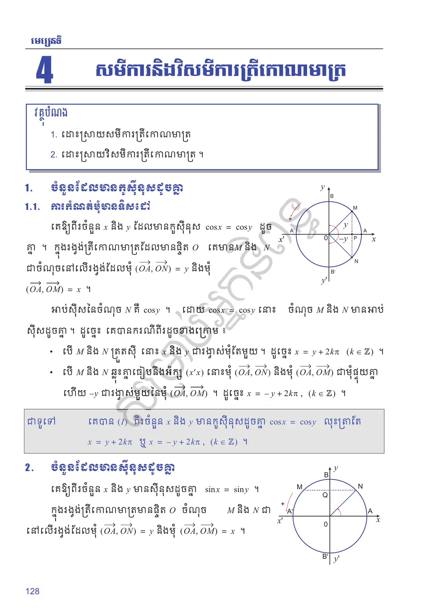
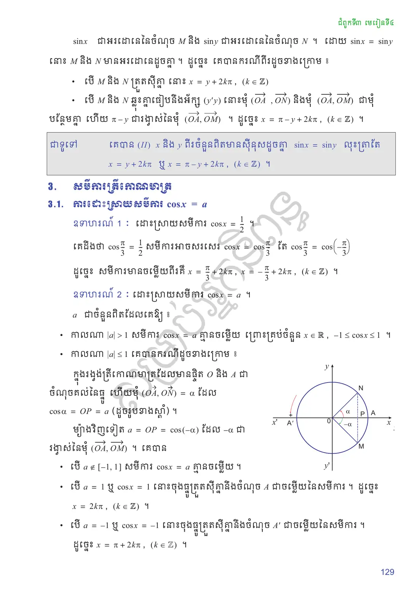
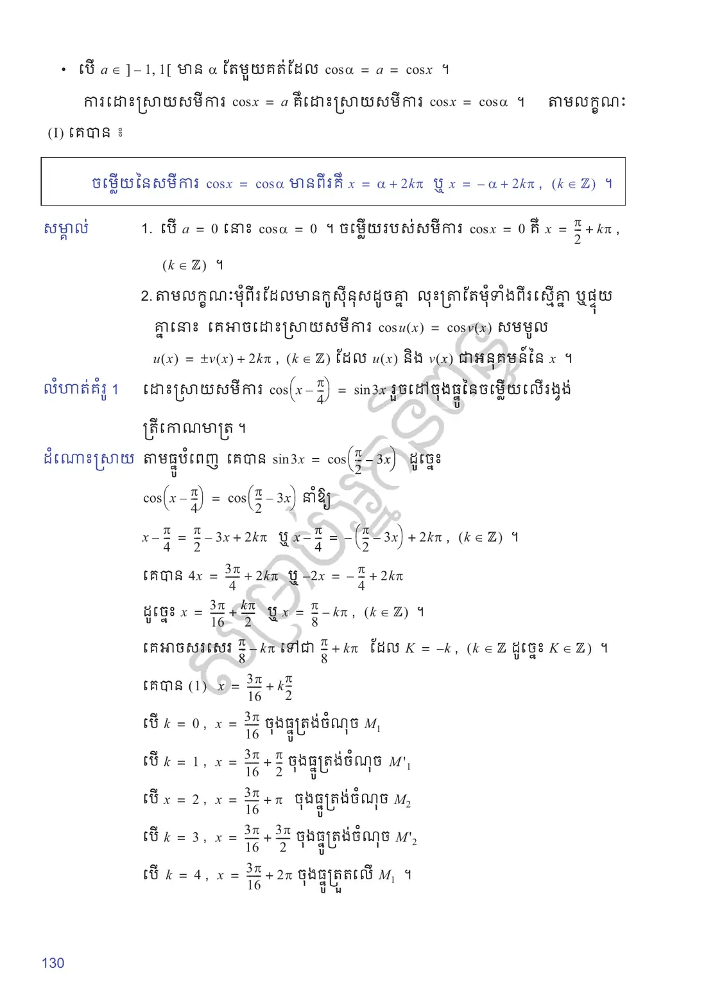
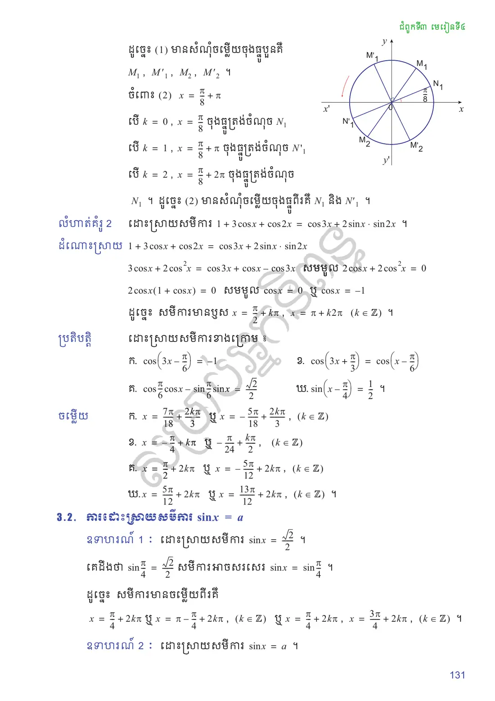
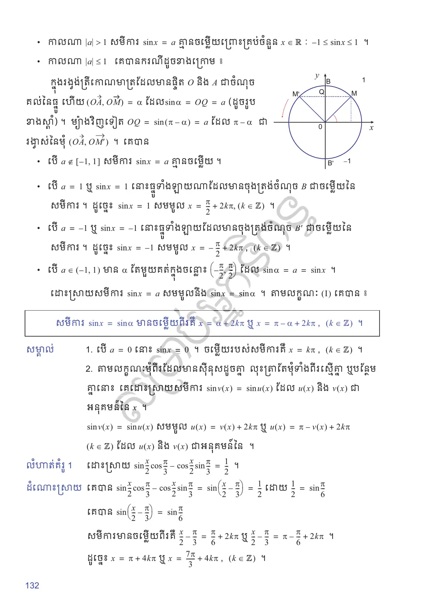
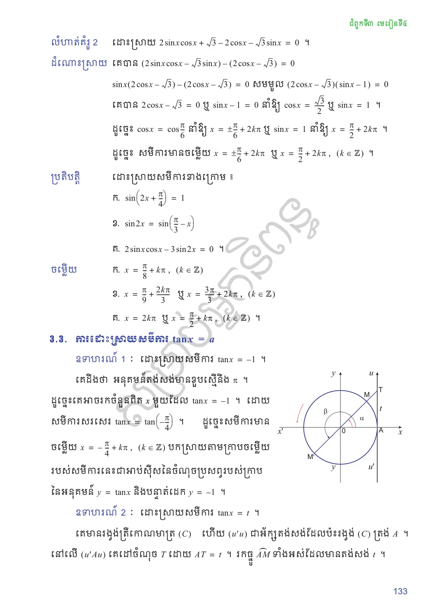
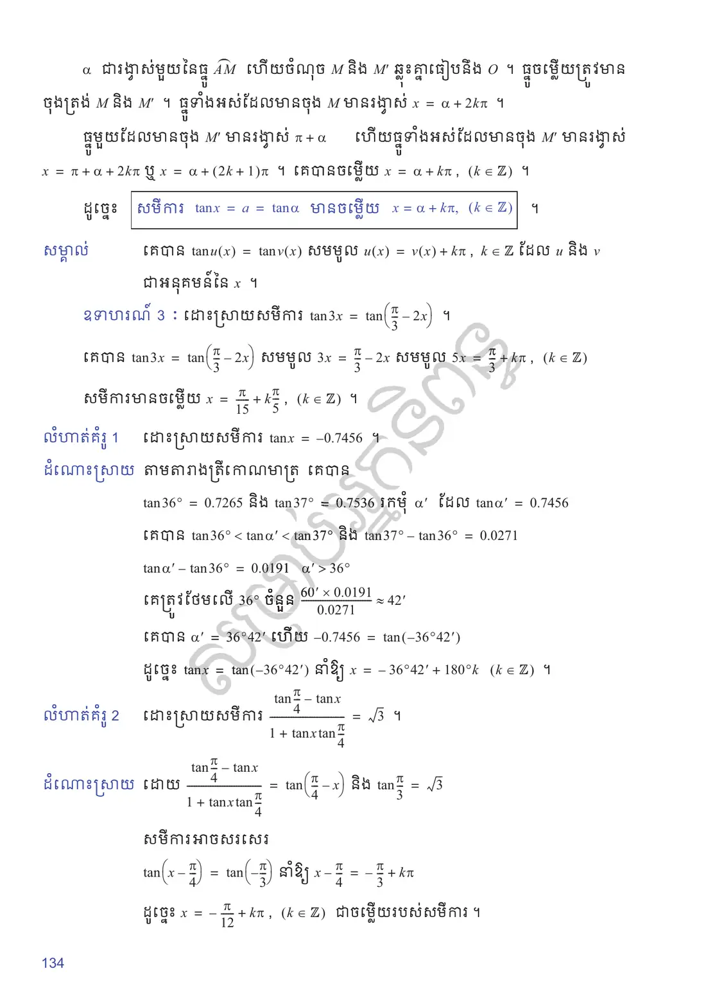
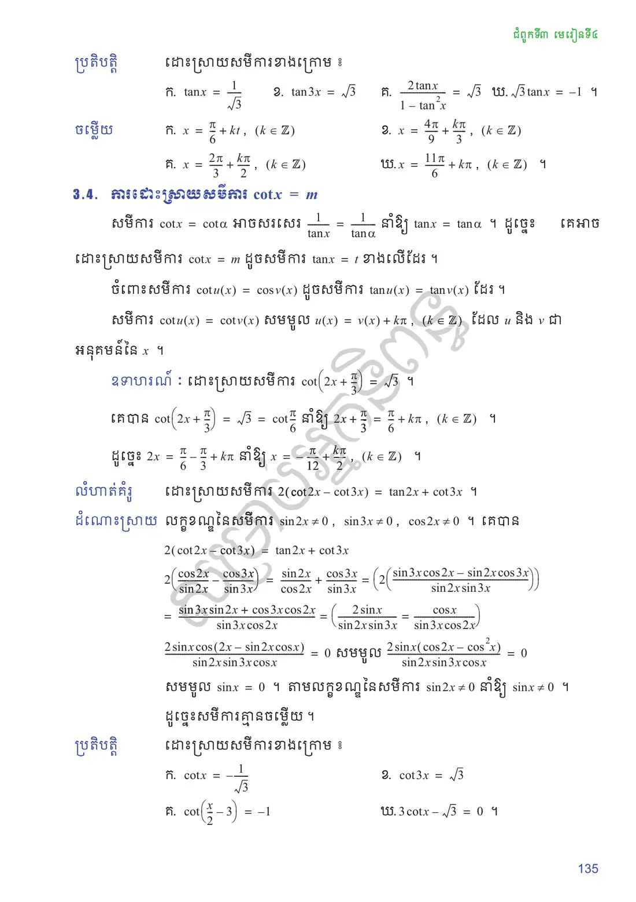
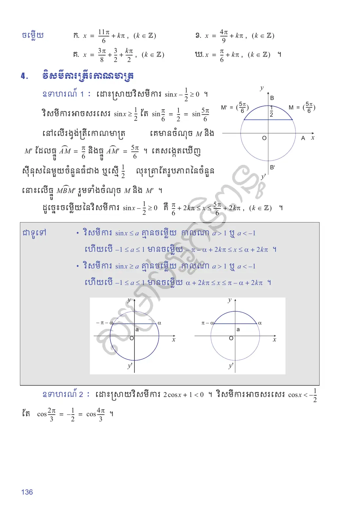
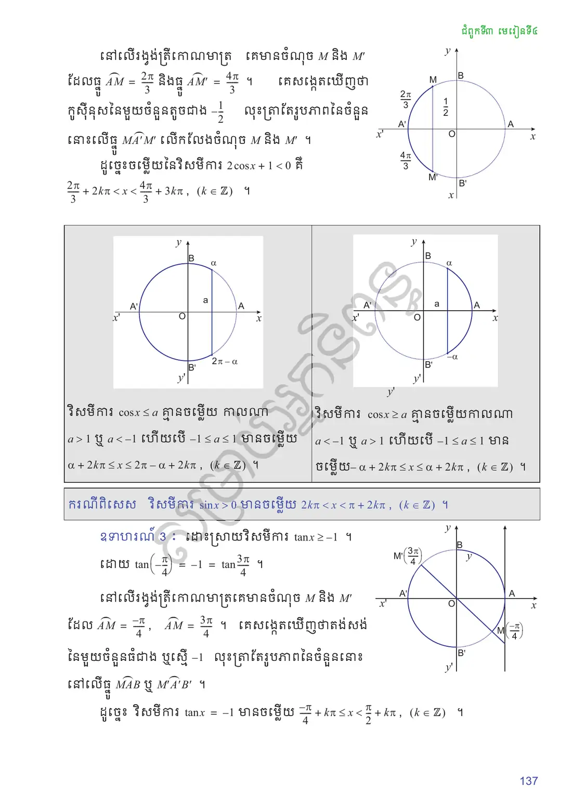
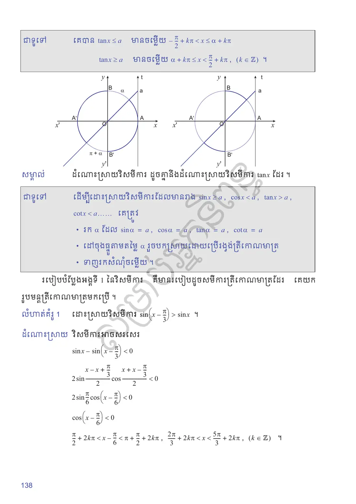
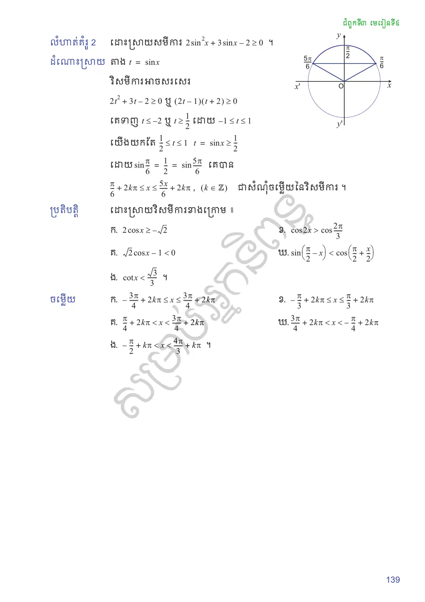
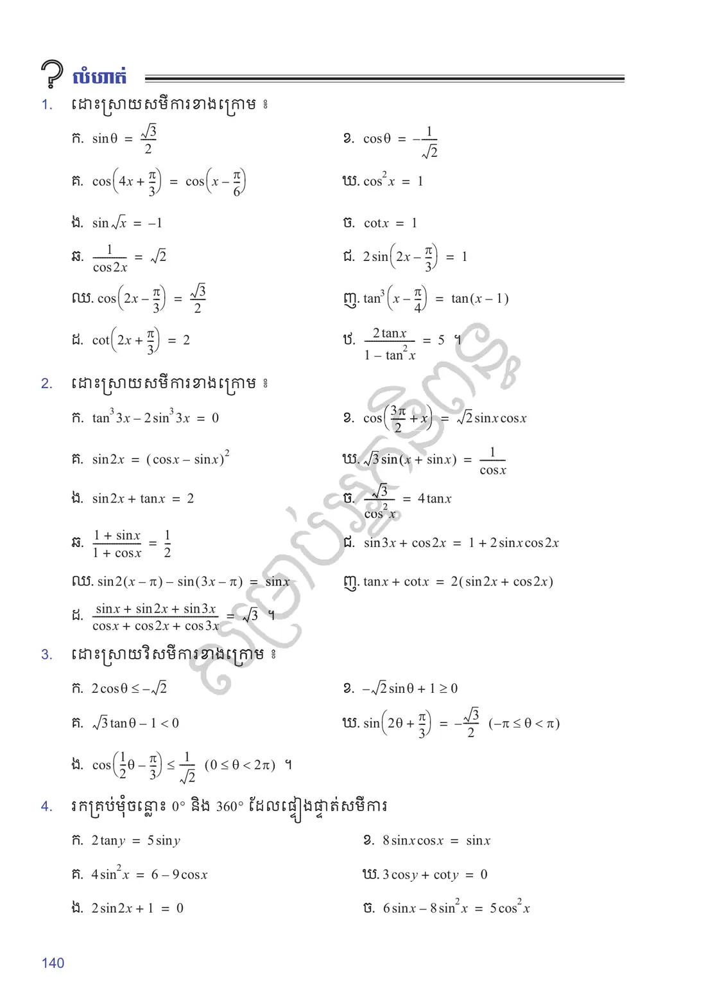
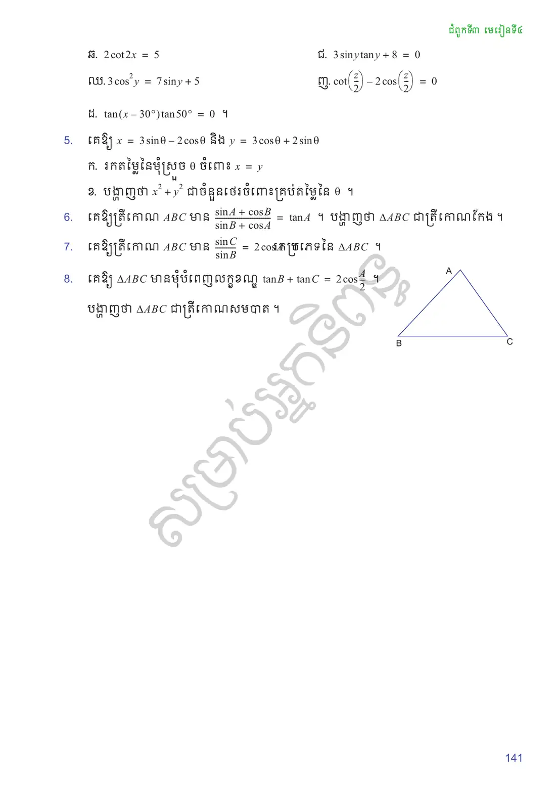
លំហាត់អនុវត្តន៍
ដោះស្រាយសមីការខាងក្រោម ៖
\(\sin\theta = \dfrac{\sqrt{3}}{2}\)
\(\cos\theta = -\dfrac{1}{\sqrt{2}}\)
\(\cos\left(4x + \dfrac{\pi}{3}\right) = \cos\left(x - \dfrac{\pi}{6}\right)\)
\(\cos^2 x = 1\)
\(\sin\sqrt{x} = -1\)
\(\cot x = 1\)
\(\dfrac{1}{\cos 2x} = \sqrt{2}\)
\(2\sin\left(2x - \dfrac{\pi}{3}\right) = 1\)
\(\cos\left(2x - \dfrac{\pi}{3}\right) = \dfrac{\sqrt{3}}{2}\)
\(\tan^3\left(x - \dfrac{\pi}{4}\right) = \tan(x - 1)\)
\(\cot\left(2x + \dfrac{\pi}{3}\right) = 2\)
\(\dfrac{2\tan x}{1 - \tan^2 x} = 5\) ។
ដោះស្រាយសមីការខាងក្រោម ៖
\(\tan^3 3x - 2\sin^3 3x = 0\)
\(\cos\left(\dfrac{3\pi}{2} + x\right) = \sqrt{2}\sin x\cos x\)
\(\sin 2x = (\cos x - \sin x)^2\)
\(\sqrt{3}\sin(x + \sin x) = \dfrac{1}{\cos x}\)
\(\sin 2x + \tan x = 2\)
\(\dfrac{\sqrt{3}}{\cos^2 x} = 4\tan x\)
\(\dfrac{1 + \sin x}{1 + \cos x} = \dfrac{1}{2}\)
\(\sin 3x + \cos 2x = 1 + 2\sin x\cos 2x\)
\(\sin 2(x - \pi) - \sin(3x - \pi) = \sin x\)
\(\tan x + \cot x = 2(\sin 2x + \cos 2x)\)
\(\dfrac{\sin x + \sin 2x + \sin 3x}{\cos x + \cos 2x + \cos 3x} = \sqrt{3}\) ។
ដោះស្រាយវិសមីការខាងក្រោម ៖
\(2\cos\theta \le -\sqrt{2}\)
\(-\sqrt{2}\sin\theta + 1 \ge 0\)
\(\sqrt{3}\tan\theta - 1 < 0\)
\(\sin\left(2\theta + \dfrac{\pi}{3}\right) = -\dfrac{\sqrt{3}}{2}\) \((-\pi \le \theta < \pi)\)
\(\cos\left(\dfrac{1}{2}\theta - \dfrac{\pi}{3}\right) \le \dfrac{1}{\sqrt{2}}\) \((0 \le \theta < 2\pi)\) ។
រកគ្រប់មុំចន្លោះ \(0^\circ\) និង \(360^\circ\) ដែលផ្ទៀងផ្ទាត់សមីការ
\(2\tan y = 5\sin y\)
\(8\sin x\cos x = \sin x\)
\(4\sin^2 x = 6 - 9\cos x\)
\(3\cos y + \cot y = 0\)
\(2\sin 2x + 1 = 0\)
\(6\sin x - 8\sin^2 x = 5\cos^2 x\)
\(2\cot 2x = 5\)
\(3\sin y\tan y + 8 = 0\)
\(3\cos^2 y = 7\sin y + 5\)
\(\cot\left(\dfrac{z}{2}\right) - 2\cos\left(\dfrac{z}{2}\right) = 0\)
\(\tan(x - 30^\circ)\tan 50^\circ = 0\) ។
គេឱ្យ \(x = 3\sin\theta - 2\cos\theta\) និង \(y = 3\cos\theta + 2\sin\theta\)
រកតម្លៃនៃមុំស្រួច \(\theta\) ចំពោះ \(x = y\)
បង្ហាញថា \(x^2 + y^2\) ជាចំនួនថេរចំពោះគ្រប់តម្លៃនៃ \(\theta\) ។
គេឱ្យត្រីកោណ \(ABC\) មាន \(\dfrac{\sin A + \cos B}{\sin B + \cos A} = \tan A\) ។ បង្ហាញថា \(\triangle ABC\) ជាត្រីកោណកែង ។
គេឱ្យត្រីកោណ \(ABC\) មាន \(\dfrac{\sin C}{\sin B} = 2\cos A\) ។ រកប្រភេទនៃ \(\triangle ABC\) ។
គេឱ្យ \(\triangle ABC\) មានមុំបំពេញលក្ខខណ្ឌ \(\tan B + \tan C = 2\cot\dfrac{A}{2}\) ។ បង្ហាញថា \(\triangle ABC\) ជាត្រីកោណសមបាត ។
សំណួរពហុជ្រើសរើស
ជ្រើសរើសចម្លើយត្រឹមត្រូវតែមួយ រួចចុច «ពិនិត្យ»។ ចម្លើយរបស់អ្នកត្រូវបានរក្សាទុកក្នុងកុំព្យូទ័រនេះ។
✎ សំណួរទី ១–១០
✎ សំណួរទី ១១–២០
តេស្តសមត្ថភាព ៖ មេរៀនទី ១២ សមីការនិងវិសមីការត្រីកោណមាត្រ (វិទ្យាសាស្ត្រ) — ២០ សំណួរ · ៣៥ នាទី